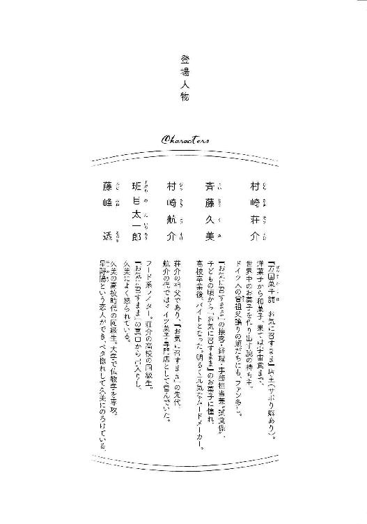
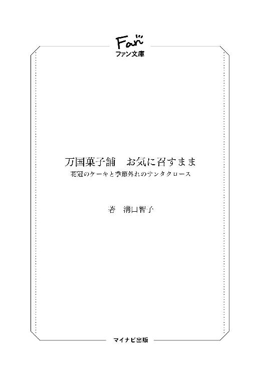

| 万国菓子舗 お気に召すまま ～花冠のケーキと季節外れのサンタクロース～ (マイナビ出版ファン文庫) | |
| 溝口 智子 | |
| 株式会社マイナビ出版 (2017) | |
本作品を電子化するにあたり、一部の感じ及び、記号等が簡略化されて表現されている場合があります。
本書はリフロー形式で制作されています。本文は文字の書体と大きさを変えることが出来ますので、お好みの設定で読書をお楽しみください。


真夏の昼下がり、一人の長身の青年がのんびりと住宅街を散歩していた。彫りの深い顔立ちはギリシャ彫刻のように端整だ。色白な肌は日焼けというものなど知らないらしく、気温が四十度近いアスファルトの上の暑さなどまったく感じていないかのように涼しげだった。
青年は児童公園の前で足を止めた。炎天下、遊んでいる子どもは一人もいない。みんな涼しいところでゲームでもしているのだろう。それとも夏休みの宿題に取り掛かっているのだろうか。
散歩を続けようと足を踏みだした青年は、道の向こうに見知った小学生の姿を見つけた。黄色いカバンを背負って、民家の塀にもたれてぼんやりしている。
「真人くん」
声をかけると小学生は身をすくめて顔を上げた。見慣れた青年の顔を見てほうっと力が抜けた息をつく。
「なんだ、荘介さんか」
「こんにちは。久しぶりだね」
荘介と呼ばれた青年はにこやかに真人に挨拶したが、真人は少し頷いただけだった。
いつもは小学校の五年生とは思えないほど礼儀正しい真人からは考えられないような態度だった。
「真人くん、元気がないのかな」
はあ、と大人びたため息をついて、真人はぷいっと顔をそむけた。
「荘介さんはいいよね。好きなことだけしていられて」
穏やかな表情のまま、荘介は首をかしげる。
「真人くんは嫌なことをしなければいけないのかな？」
「社会の大部分の人はそうだよ。荘介さんくらいだよ、好きなお菓子作りを仕事にできたり、その仕事をサボって子どもと遊んでたり、それにいつだって久美さんと好きなだけ話せるし」
「真人くんも遠慮しないで久美さんと話せばいいじゃない」
「久美さんの仕事の邪魔になるでしょう」
「そんなことないよ。なんだったら今から店においで。こんなところに立っていたら熱中症になっちゃうよ」
真人は荘介を見上げてしばらく考えていたが、小さくこくんと頷いて荘介と並んで歩きだした。
二人が向かったのは『万国菓子舗 お気に召すまま』という小さな店。荘介が先代のドイツ人の祖父から引き継いだ、古くから近隣の人に愛されている菓子店だ。
福岡の繁華街、天神からほど近く、電車で十分ほどの距離にあるこの店は、注文があればどんなお菓子でも作る。和菓子はもちろん、アメリカ、アフリカ、ヨーロッパ、アジアやアラブ、インドのお菓子、はては夢の中や物語の中にしか出てこないお菓子までなんでも美味しく作り上げてくれる。
店主の村崎荘介は三十代前半で、その美貌のため奥様たちのファンも多く、荘介を見るために店に通う人もいるくらいだ。もちろん、お菓子の味に引き付けられている人が大多数だが。
木製のどっしりしたドアを開けると、カランカランと明るいドアベルが鳴る。瀟洒な木造の建物は大正時代に店を始めた先代からのもので、店内に並ぶお菓子も、先代がこだわったドイツ菓子の製法をそのまま受け継いだ素朴なものと、荘介が作りはじめた『万国』の個性豊かなものの味わいとがうまく混在している。
色とりどりのケーキや和菓子、荘介オリジナルのきらめくような特別な商品が並んでいるショーケースの向こうから、小柄で元気な若い女性が、明るくはじけるような声で呼びかけた。
「おかえりなさい、荘介さん」
「ただいま、久美さん」
「今日は早かったんですね。サボるのをやめて追加のお菓子を作る決心がついたんですか？ 新作のお菓子も作りますか？」
斉藤久美は熱心な期待を込めた目で荘介を見つめる。
「そうですね。でもそれはまたの機会にしましょう。今日は真人くんが遊びに来てくれましたから」
それまで隠れていた真人が荘介の陰からひょっこりと顔を出した。
「いらっしゃい、真人くん」
真人は久美と目が合うと、恥ずかしそうに俯いた。この店の看板娘である久美が高校卒業後すぐに『お気に召すまま』のアルバイト店員になってから数年がたつ。元気な笑顔で、接客はもちろん、今では店の事務をすべて取り仕切る働き者だ。
なぜか近隣の子どもと仲の良い荘介に半ば強引に店に連れてこられた真人も、すぐに久美の笑顔の虜になった。
「今日はお買いもの？」
久美の問いに、真人は申し訳なさそうな顔で首を横に振る。荘介は店の片隅にこじんまりとしつらえられているイートインスペースに真人を案内した。窓の上部にめ込まれた無花果の図柄のステンドグラスが鮮やかな色合いの影をテーブルに落としている。
真人はその光を眩しげに見つめた。
「外はあんまり暑いからね、涼みに来てもらったんだよ」
「じゃあ、ジュースをあげるから座って座って」
久美に促されるままに真人は年代物の樫材で作られた椅子に腰かけた。分厚くて重いテーブルも、飾り気のない素朴な椅子も先代のときから大切に使われ続けたもので、年輪を重ねた深い飴色をしている。
テーブルに置かれたグラスの中でシュワシュワと上品に微炭酸がはじけるのを見て、うれしそうに真人は「いただきます」と一口飲んだ。
「美味しいけど辛い！ これ、なんですか」
「荘介さん特製のジンジャーエールだよ」
「ジンジャーエールって手作りできるの？」
驚いて顔を上げた真人に、荘介が生真面目に答えた。
「もちろん。これは、はちみつと生姜の酵母を発酵させただけでとても簡単に作れる。炭酸だって酵母が作ったそのままで体にいいよ」
目を丸くして感心する真人に、なぜか荘介ではなく久美が得意げな顔をしてみせる。
「荘介さんはなんでも手作りするからね。このジンジャーエールは売っているものと違って、ちょっと生姜の辛みがあるから苦手だったら残してね」
「若い久美さんには生姜のうまみはまだまだ辛かったですか？」
荘介がからかうと久美はぷうっとむくれた。
「若いっていうのは褒め言葉に使ってください！ もう、いっつも子ども扱いするんだから。私はちゃんと大人です」
久美は荘介と自分の前にも手作りジンジャーエールのグラスを置いて、仕事は一時中断と、真人の隣に座り込んだ。真人は久美が隣に来てくれたのが嬉しいのだけれど恥ずかしくもあり、ほんのり赤くなった顔を伏せた。
「真人くん、カバンを下ろしたら？」
久美に言われて真人は背負っていたカバンを下ろす。カバンには近所の塾の名前が大きくプリントされていた。
「塾に行った帰りなの？」
真人は顔を伏せたまま、無言で首を横に振る。
「これから行くところかな」
また首を振る。
「行ってみたら、お休みだったとか？」
首を振って真人はそっと顔を上げた。
「サボっちゃったんです、塾」
疲れきった様子で、申し訳なさそうに口ごもってしまった真人に、久美はどう返事をしていいかわからない。荘介の顔を盗み見ると荘介は変わらずにこやかだ。
「たまにはいいんじゃないかな、サボっても」
「荘介さんに言われても、説得力がないよ」
「それじゃあ、久美さん。お願いします」
矛先を向けられた久美は困ってしまって、素の博多弁が出てしまう。
「サボるのは、そうやね、よくないけど。たまにだったらしょうがないっちゃない？ 荘介さんみたいに毎日じゃないんやけん」
博多弁の久美の声が優しくて、真人は心がほぐれていくのを感じた。
「荘介さんは自由すぎますもんね」
「そうそう。今日なんか私がお店に来たら、もう居らんとよ」
「僕はしょっちゅう公園で見かけます」
「子どもみたいやね」
「もう少しちゃんとした方がいいんじゃないでしょうか」
二人からの言葉が聞こえないふりをして立ち上がった荘介は、そ知らぬ顔ですうっと厨房に入っていった。
「今から仕事をするんでしょうか」
真人が不思議そうに言うと、久美はすかさず否定した。
「裏口から逃げるのかもしれんね」
久美の切迫した口調がおかしくて、真人は声を上げて笑った。
「やっと元気が出たね、真人くん」
「心配かけてごめんなさい」
「謝りは、よかよ。でも、なんで塾をサボったか聞いてもいいかな」
真人は居心地悪そうに視線をさまよわせながら答える。
「なんとなく、です。なんとなく行きたくなくて。でもどこにも行くところがなくて、ぼうっとしてたんです」
「暑いのに外にいたと？ お友達の家には行かんかったと？」
「みんな塾に行ってるし。それに遊びに行ったら、お母さんに怒られるし」
「怒られるって、なんで」
次の言葉を口にするのを、真人は少しためらった。
「僕の家はゲームも漫画も禁止なんです。だけど、友達の家に行ったらどっちもあるから」
「そんな。それじゃ、真人くんはいつもどこで遊んでるの？」
「とくに遊びに行ったりはしません。勉強もあるし、習い事もあるし」
「習い事もしとると？」
「はい。英会話とスイミングとピアノとそろばんと習字とプログラミングと......」
「ちょっと待って、待って。そんなにたくさん習ってたら、いつ休むん？」
「とくに休みはありません」
「遊びもしないし休みもないなんて、そんなに詰め込んだら大変やんか。おかしくなっちゃうよ」
「そうでもないです。子どもの本分は勉強ですから」
「子どもは遊ぶのも仕事だよ」
真人は力なく笑った。
「真人くん、久美さん、ちょっと来て」
厨房から荘介の声がして二人は立ち上がった。厨房を覗くと調理台の上に鈍く光る銀色の古い機械が置いてあった。一メートル四方ほどの大きさで、鉄でできた枠だけの箱のようなものだ。側面に大きなハンドルがついていて、鉛筆削りのように刃を回せるようになっている。
「わあ、懐かしい」
感嘆の声を上げた久美に真人が尋ねた。
「これ、なんですか？」
「かき氷機なんよ。荘介さんのおじいさんがまだお店にいた頃、夏になると近所の子どもにかき氷を作らせてくれたとよ」
「こんなに大きな機械なら大きなかき氷ができそう」
「作ってみるかい、真人くん」
荘介はそう言いながら、冷凍庫から大きな氷柱を取りだした。
「でっかい氷！ そんなのどこで買うの？」
「氷の専門店があるんだよ。今年はかき氷を復活させようかと思ってね。注文しておいたんだよ」
「透明できれいだね」
「氷屋さんの氷は美味しいよ。さっそく削ってみようか」
氷柱は機械にぴたりと収まった。上部についている押さえを大きなネジでしっかりと固定する。
荘介は真人を手招きすると、機械の底の部分に大きめのガラスの器を置いて、ハンドルを真人に任せた。車についているような大きさのハンドル部分にぐっと力を込めたが、氷ははぴくりとも動かない。
「んぎぎぎ」
真人は力みすぎて顔を真っ赤にしながら奮闘を続ける。
「がんばって、真人くん」
久美の応援に背中を押されて、最初の一掻きをすぎるとハンドルは軽くなった。ところどころでひっかかりながらも、ガラスの器に氷の粒が山型に積もっていった。
思う存分、氷掻きを楽しんだ真人は器を両手で包んで明るい声を上げた。
「すっごく楽しい！」
「それは良かった」
「荘介さん、シロップはなに味があるの？」
「あ」
荘介の動きがぴたりと止まった。
「忘れていました。まだ作っていないんでした」
「ええ、そんなあ。削っただけの氷のまま、味がないままで食べるの？」
腕を組んで天井を見ていた荘介が、ぽんと手を打った。
「ぜんざいにしましょう」
久美が思わず口を出す。
「荘介さん？ 言っている意味がわかりません」
「だから、ぜんざいにしますよ」
そう言いながら荘介は白玉粉と小豆の粒餡、黒砂糖を準備する。
ぜんざいがかき氷とどう関係するのかと、久美と真人は顔を見合わせて首をかしげた。
二人の様子に気づかないのか、荘介はいそいそと調理を始めた。
白玉粉に少しずつ水を注ぎ固めに捏ねたら、ゆで上げて冷水にさらす。
黒砂糖を水に溶かして、アクを取りながらじっくりと煮詰める。
「ねえ、荘介さん。なんだかしょっぱいみたいな、甘いみたいな複雑な香りだね」
溶けてしまった氷水を飲みながら、真人が黒砂糖の鍋を覗き込んで匂いを嗅ぐ。
「ミネラルが多いから、その香りだろうね。真人くんは黒砂糖は初めて？」
「うん。食べたことないよ」
「体にいいから、食べたら元気が出ると思うよ」
アクをすくいながらとろみがつくまで待って、火から下ろす。粗熱が取れるまで置いておき、もう一度氷を削る。
今度は器の半分ほど削ったあたりで、荘介が真人の手を止めた。
「きれいに削れたね。じゃあ、ぜんざいにしていこう」
荘介は真人の氷の器にまんべんなく粒餡をのせて広げる。
「さあ、もう少しがんばって削ってね」
真人は促されるままにハンドルを回して氷を削って、きれいな山型を作る。
「うん、いい感じ。白玉だんごを盛り付けて、黒蜜をかけたら出来上がりだよ」
荘介から渡された白玉だんごを四つガラスの器のふちに盛って、黒蜜をたっぷりかける。真人は未知の食べ物にわくわくと胸おどらせた。久美が真人と並んでかき氷を見つめながら荘介に聞いた。
「それで、荘介さん。このかき氷のどこがぜんざいなんですか？」
「沖縄ではこのかき氷をぜんざいと呼ぶんだ。ポピュラーなメニューでお祭りの屋台のかき氷にも、ぜんざいがあります。金時豆を黒糖で煮たものを使うのが一般的だけれど、沖縄のカフェなどでは小豆を使うお店も増えているそうです。沖縄ぜんざいは、元は『あまがし』という緑豆と麦を発酵させた飲み物に近いもので、ユッカヌヒーという、沖縄のこどもの日のような特別な日に食べられることが多いものだったんだ。それが時代とともに姿を変えていった」
「ねえ、荘介さん、食べていい？」
真人が待ちきれないというように、ぜんざいとスプーンを手に持って荘介の長い蘊蓄を遮った。
「うん、溶けないうちに召し上がれ」
真人は黒蜜がかかった氷をざくりとすくい上げた。
「いただきます！」
大きく口を開けてかき氷を頬張る。美味しそうに二、三口食べたあと、急に目をぎゅっとつぶって肩を縮めた。
「あ、キーンときたでしょ」
久美が聞くと真人は目をつぶったまま、うんうんと何度も頷いた。それでも真人は手を動かし続けて口いっぱいにかき氷を頬張る。黒蜜がかかった部分をしゃくしゃくと食べてしまい、粒餡と白玉をのっけて大きな口で食べ続ける。
「すごく美味しい！ こんなに美味しいかき氷初めてだ」
あっという間にぜんざいを空にした真人が興奮した口調で感動を表した。
「それは良かった。お代わりはいる？」
真人は自分のお腹に手を置いて少し考えた。
「ううん、我慢する。冷やしすぎてお腹こわしたら嫌だから」
そうは言ったが、真人の目はかき氷機に吸い付けられている。スプーンを口にくわえて考えていた真人がパッと目を輝かせた。
「そうだ。僕、久美さんにかき氷作ってあげてもいい？」
「え、私に作ってくれると？」
「うん。氷を削るの楽しいんです。作らせて」
「うれしい、ありがとう！」
荘介が出してやった氷を真人は自分でかき氷機にセットしてハンドルを回しはじめた。先ほどよりずっとスムーズに氷が回転する。
「真人くん、上手やね。かき氷職人になれるよ」
二度目の氷かきで余裕ができた真人は嬉しそうに順調に手を動かしながらお喋りする。
「沖縄のぜんざい、すごく美味しいよ。お祭りの屋台でも作ればいいのに、なんで福岡にはないのかな」
「福岡と沖縄は距離は近いけれど文化はだいぶ違う。それは歩んできた歴史が違うからなんだ。沖縄は古くは琉球国という一つの国だったんだよ」
真人はぽかんと口を開けた。
「そうなの？」
「うん。いつか歴史の授業で習うかもしれないね」
「かき氷の形が違うのは、そのせいなのかな」
「違うようでいて共通点はあるよね。文化の交流があれば、お菓子のレシピも一緒に伝わっていって他の土地でも作られるようになる。二つの文化が新しいお菓子を生むことにもなる」
「面白いね」
熱く語る荘介を真人はまっすぐな瞳で見つめる。
「すごく面白いよ。変わっていくお菓子、変わらないお菓子。僕はいろんな歴史や文化から生まれたお菓子をこの店で作って、いろんな人に好きになってもらえたらいいなと思うんだ」
「荘介さん、僕は好きになったよ、沖縄ぜんざい。沖縄には僕が知らないもっといろんなお菓子があるんだろうな」
「たくさんあるかもしれないね」
「僕はまだ知らないことがいっぱいだ」
真人は神妙な顔つきで、先ほどと同じようにガラスの器の半分まで氷を盛って、粒餡をのせた。その上にまた氷をかけて白玉をのせて黒蜜をかける。でき上がったぜんざいは、先ほど真人が食べたものより美しい出来栄えだった。
「できました、どうぞ」
久美は嬉しそうに真人からぜんざいを受け取った。
「いただきまーす」
大きく氷をすくって口に入れて何度か嚙んで、真人と同じようにぎゅっと目をつぶる。
「あ、キーンってなってる」
久美は口も開けずに頷いた。真人は首をかしげて荘介に尋ねた。
「ねえ、荘介さん。なんでかき氷を食べると、頭がキーンって痛くなるの？」
「これはね、アイスクリーム頭痛と言って、どうして起こるかには二説あるんだ。一つは、冷たいものを食べたときに一気に冷えた口の中を体が温めようとして増えた血流が頭の血管に集る。それで一時的に炎症が起きて頭痛になるというもの。もう一つは、喉が急に冷えることで三叉神経が刺激されて、これを脳が痛みと勘違いしてしまうというものなんだ」
「三叉神経ってなに？」
「脳神経の一つで、目と上顎、下顎と三つの神経に枝分かれする神経で、咬筋という噛むための筋肉を支配して下顎骨を上げて咀嚼を......」
「すみません、荘介さん」
久美が手を挙げて口を挟んだ。
「なんですか、久美さん」
「単語が難しくて脳内で漢字変換できません」
「それは困りましたね」
「僕、国語辞典持ってるよ」
真人は店舗に駆け戻って塾のカバンを取ってきた。久美は目を丸くする。
「こんなに重いものを持って歩かないといけないなんて、塾に通うのも大変だね」
「これは僕が好きで持っているだけで、本当は塾に持っていく必要はないんです」
「そうなの？ でもなんで国語辞典？ いつも持っているの？」
「わからないことがあったら、すぐに知りたいから。本当は百科事典を持ち歩きたいんですけど、そうもいかないし。今年のクリスマスには電子辞書をお願いしようと思って」
「お願いって、サンタさんに？」
「はい。五年生にもなって恥ずかしいんですけど、うちにはまだサンタクロースがやってくるんです。毎年、サンタクロースに手紙を書いて置いておくと、クリスマスにはサンタの扮装をした父がプレゼントをくれるんです。僕がまだサンタクロースを信じていると思っているようなので、両親に付き合っているんです」
生真面目に語る真人に、久美が感心した声を上げる。
「真人くんは大人やねえ」
「そうですか？」
「うん。人の気持ちを思いやれるって、相当な大人っぷりだよ」
「でも、本当はサンタクロースを信じているマネも疲れるんですよ」
真人は子どもらしくないため息を漏らした。
「親に合わせるのも大変です」
久美が同情したような表情を浮かべたのを見て、真人は慌てて否定した。
「あ、でも大丈夫です！ 僕も楽しんでやっていますから」
「本当に本当？」
久美に聞かれた真人は困って曖昧に笑った。そんな顔をされたら自分の方がなにも考えていない子どものようだと感じて、久美は黙り込んだ。二人の会話を聞いているのかいないのか、荘介は自分用のぜんざいを作ってもりもりと食べていた。
「荘介さんはどう思います？」
「どう、とはなにについてですか？」
「え、なににって、えーと、真人くんが楽しいかどうか」
「それは真人くんに聞かないと。ねえ、真人くん」
真人はまた困ったように笑う。
「僕は大丈夫だよ」
久美には真人がなにかをあきらめた世捨て人のように見えて悲しくなった。
家に帰ると母親の加奈子が玄関で真人を待ち構えていた。
「真人、塾をサボったって連絡があったわ」
「ごめんなさい」
叱られる覚悟をしてきた真人は素直に謝った。だが、加奈子は叱りつけることなく心配げな顔をした。
「なにかあったの？ 友達と喧嘩したとか、塾で嫌なことがあったとか......。もしかしていじめとか......」
的外れな加奈子の言葉に真人はぷっとふきだした。
「違うよ。ちょっと遊びに行っただけ」
「遊びにって、どこへ？」
「商店街の向こうに『お気に召すまま』っていうお菓子屋さんがあるんだ。荘介さんっていう人のお店なんだ。学校の友達と何度か遊びに行ったことがあって」
加奈子は渋い顔をして黙り込んだ。今日は塾をサボったし、よく知らない人のところに何度も勝手に遊びに行っていると聞いて心配をとおり越して腹が立った。無言のまま真人の手を取ると靴を引っかけて玄関を出る。
「お母さん？ どこに行くの」
加奈子は黙ったまま真人を引っ張って歩いて行く。
真人が帰ってきた道をそのままたどって二人は『お気に召すまま』にやってきた。ドアを開けた加奈子はツカツカと店内に入り、堅苦しい表情のまま、ショーケースを挟んで久美と対峙した。
「うちの子がお世話になったそうですね。ご面倒をおかけしました」
突然の出来事に驚いた久美は目をぱちくりしながら答える。
「面倒なんてちっとも」
「ですが、保護者もいない子どもを勝手にお店に引っ張り込むというのは、どういうことでしょう」
「引っ張り込むって......」
「うちの子は今日、塾をサボったんです。こちらのお店のせいじゃないですか？ 子どもに甘い顔をして親にお菓子を買わせる魂胆ですか」
「お母さん、やめてよ。荘介さんはそんなことしないよ」
自分の手から逃れようとする真人の腕をますます強く握りしめながら、加奈子は強い口調で言い募る。
「こちらの店長さんが真人を連れてきたそうじゃないですか。親の許可もなくそんなことをするなんて。半分、誘拐ですよ」
久美は唖然としてしばらく動けずにいたが、加奈子が次の言葉を繰り出そうと口を開いたときにようやく間が抜けたような声を出した。
「誘拐って、そんな」
「お母さん！ 荘介さんは僕のためにしてくれたんだよ。かき氷だって作らせてくれたんだ。悪いことなんかなにもしてないよ」
「真人、あなた塾にも行かないでかき氷なんか作っていたの？ ああ、もうそろそろマナー教室の時間じゃない。行くわよ、真人。マナー教室はサボらないのよ」
「嫌だ！」
真人は強く腕を振って加奈子の手から抜けだした。
「ねえ、お母さん、かき氷を食べてよ。僕、上手に作れるんだ。世界一美味しいかき氷なんだよ。僕、感動したんだ」
加奈子は呆れて口を開いた。
「かき氷くらいで感動なんて、大げさな」
「本当だって！ ねえ、久美さん。もう一度作ってもいいでしょう」
久美は真人の勢いに押されて厨房に入って行く。荘介はまたいなくなっていたが、かき氷機は調理台の上にまだ出してある。だが冷凍庫を開けてみると、氷はもうすべてなくなっていた。
「真人くん、ごめん。氷をきらしちゃってる」
真人は加奈子を振り返ると、力強い口調で言った。
「お母さんはここで待っていて。僕、荘介さんを探してくる！」
「待って、真人......」
加奈子の静止を振り切って、真人は店から駆けだした。いつになく自分の意志を貫こうとする真人に驚いた加奈子は、あとを追うことも忘れて、走っていく真人の背中をただ見つめていた。
いつもの公園に荘介の姿はなかった。川原にもいない、図書館にもいない、あちらこちら走り回って真人は汗だくになった。もしかしたら、もう店に戻っているかもしれないと商店街の中を走っていた真人は、八百屋の店先で立ち話している荘介を見つけた。
「荘介さん！」
「あれ、真人くん。もう家に帰っちゃったのかと思っていたよ」
「荘介さん、氷がないんだ！」
「ああ、そうだった。店に戻ったら注文しないと」
「注文したらすぐ来る？」
「うん。すぐに届けてくれるよ。ちょうど良かった。今、果物を買ったから、かき氷用のソースを作って......」
「早く帰ろう！」
慌ただしい真人に手を引かれた荘介は、八百屋の女将に手を上げてみせて小走りに店へ戻っていった。
「真人、やっと帰ってきたの」
ドアを開けた真人が連れてきた荘介を見て、加奈子の口がぽかんと開いた。初めて荘介を見た人が、その美貌に驚いて動きを止めることはよくあるが、加奈子ほどに驚きを表す人はまれだ。
「僕の顔になにか付いていますか？」
微笑んで尋ねた荘介に、加奈子は言葉を失ったまま首を何度も横に振った。
「荘介さん、早く氷を注文して！」
真人に背中を押されて荘介は受話器を取った。馴染みの氷屋とにこやかに挨拶している荘介の横で真人はじりじりと焦りながら待っている。受話器を置いた荘介に真人は勢いよく尋ねた。
「氷、何時に来る？」
「それが、今ご主人が配達中で何時になるかわからないそうなんだ」
「そんなあ......」
「もういいでしょう、真人。帰るわよ」
立ち上がった加奈子の肩を、真人が押さえてまた座らせた。
「待って、もう少しでいいから」
「でも、氷がないんじゃ、かき氷はできないじゃない」
焦りに顔をしかめている真人に荘介がのんびりと尋ねた。
「すぐに氷が必要なんだね、真人くん」
真人は強く頷く。
「お母さんにもかき氷を食べてほしいんだ」
「じゃあ、氷を借りに行こうか」
「借りる？」
「知り合いがバーをやっているんだけど、そこならいつも氷を置いているからね」
「僕、行ってくる！」
「なにを言ってるの、真人！ バーなんてだめよ！」
加奈子の大きな声に驚いて真人が振り返る。
「子どもが行くところじゃないわ。絶対にだめ」
「でも、お母さん、バーって夜しか営業してないんじゃない？ お昼なら子どもがいても平気だよ」
「僕の知り合いのところは、昼はカレーランチをやっていますよ」
口を挟んだ荘介を加奈子は迷惑そうににらんだ。
「それでもお酒を置いているようなお店なのに、子どもを一人で行かせるわけにはいかないです」
「じゃあ、三人で行きましょう」
「え？」
「僕と真人くんが二人だけで行っても心配でしょう。ですから、お母さんも一緒に行きましょう」
「それがいい。お母さん、そうしようよ！」
真人は加奈子の手を取ると無理やり立ち上がらせた。
バー『もぐらの巣』は呉服屋のビルの地下にあった。きれいな振袖を横目に見つつ暗い階段を下りていく。既にランチ営業を終えて明かりをしぼってある階段は薄暗く、今までバーになど足を踏み入れたことがない加奈子は、おびえていることを真人に悟られないようにと、唇を真一文字に結んだ。
鉄の重いドアを開けると階段とは対照的に店内は明るかった。カウンターの中では口ひげを蓄えた五十年配の男性が手のひら大の氷を丸く削っていた。
顔を上げた男性は三人を見て小さく頭を揺らした。
「いらっしゃい。かわいらしいお客さんだ。なにか飲むかい、お兄ちゃん」
加奈子は慌てて両手を振った。
「そんな、子どもにお酒なんて......」
「大人の階段を人より一歩早く上るだけだよ」
「とんでもない！」
「ふふふ、冗談だよ。それで荘介、なんの用だ」
「氷を分けてもらいたいんです、マスター」
「一つ貸しだな。利子は高いぞ」
「それは怖いな」
「払えないなら久美ちゃんをうちの店にもらおうか」
真人が驚いて大きな声を上げる。
「だめだよ！ 久美さんがバーにいたら、僕、会えなくなっちゃうじゃない！」
マスターはまた、ふふふと笑う。
「冗談だよ。久美ちゃんを取り上げたら荘介の店は三日で潰れてしまう」
真人はほっと息をついた。
マスターは運搬用に発泡スチロール製の箱に大きな氷を入れてくれた。真人はどうしても自分が持つと言って、荘介の手から箱をもぎ取った。暑い中、氷が溶けないようにと急ぎ足で店に戻りながらも、真人と加奈子は初めてのバーの感想を語りあった。
「お母さんもバーに行ったの初めてなんだね」
「そりゃあそうよ。怖いじゃない、バーなんて」
真人は母親がなにかを怖いと言ったのを初めて聞いた。驚いて加奈子の顔を見つめていると、加奈子が真人の視線に気づいた。
「なに、どうしたの」
加奈子の表情がなんだか子どもっぽいように感じて、真人は不思議な気持ちになった。母親だって生まれたときから親だったわけじゃない、一人の人間なんだということに初めて気づいたような気がした。
店に戻るとすぐに厨房に入った。真人が自分で氷をかき氷機にセットする。やはり削りはじめは力がいる。赤い顔をしてハンドルを回そうとする真人を見て、加奈子は横から口を出した。
「ねえ、お店の人に任せたら」
「だめ！ 僕が作るんだから！」
んぎぎぎ、と力んでようやく動きだしたハンドルを真人は懸命に回した。
グラスの半分まで氷を盛り、小豆餡をのせて、氷をかぶせる。白玉を飾って黒蜜をかける。自信満々で加奈子の前にぜんざいを置くと、加奈子はグラスをじっと見つめて「なんか地味なトッピング......」と小さく呟いた。喜んでくれない加奈子の様子に真人はショックを受けて目を見開いた。加奈子は慌ててフォローしようとする。
「違うのよ。ほら、かき氷って言ったら赤とか青とかカラフルじゃない。だから、今まで見たことないなあ、って思っただけで......」
「いいよ、もう」
「本当に、すごく美味しそう」
「いいよ、無理しないで。僕じゃ荘介さんみたいに美味しそうに作れないってことぐらいわかってるから」
すっかり落ち込んでしまった真人になんと声をかけたらいいかわからずに、加奈子は救いを求めて荘介を見上げた。
「真人くん、カラフルなぜんざいを作ろうか」
荘介に呼ばれてやっと顔を上げた真人に、加奈子はほっと胸をなでおろした。真人はそんな母親の様子に気づかずに荘介と話を続けた。
「カラフルにしてもいいの？」
「もちろん。真人くんの好きなようにいくらでもアレンジしていいんだよ」
「僕、お菓子作りって決まった作り方しかしたらいけないのかと思ってた。小学校の家庭科で料理を教わったときはそうだったから」
「初心者は基本を学ぶためにレシピどおりにする方がいい。けれど基本をマスターしたなら、応用を学んだ方が自分の幅が広がるよ」
「僕はもう、ぜんざい初心者じゃないっていうこと？」
「うん。ぜんざいマスターだよ」
真人は嬉しそうに笑った。
八百屋で買ったばかりの果物でフルーツピューレを作る。いちご、ブルーベリー、オレンジ、キウイ。荘介に教わりながら真人が一からすべて一人で作っていく。
それぞれの果物を小さく切って四つの小鍋に入れ、砂糖を振って火にかける。
沸騰させないように弱火で、時々かき混ぜて煮詰めていく。
とろりとしたら火から下ろし、少し冷ましてミキサーにかける。
四種類のピューレができたら白玉粉に混ぜ込んでいく。
いちごピューレで赤い白玉、ブルーベリーで青、オレンジで黄色、キウイで緑色の白玉を作る。
真人は熱心に白玉粉を捏ねている。加奈子は今まで見たことがないほど真剣なその横顔を黙って見つめた。自分が今すべきことをきちんと理解して、最善を尽くしているのだということがよく伝わってきた。一度も見たことがないような、大人びた表情だった。
捏ね上がった白玉をゆでて、水にとって冷ます。その間に、もう一度かき氷を作り、粒餡をのせる。
水気を切った四つの色付き白玉を飾り黒蜜をかけて、加奈子の前に差しだした。
「どうぞ、食べてください」
真人が作ったぜんざいはきれいな山型で、カラフルな白玉団子が食欲をそそった。加奈子はスプーンを手にすると氷の山のてっぺんをすくい取って口に入れた。その美味しさに二口めを食べ、頭がキーンとする感覚に目をつぶる。
「お母さんもアイスクリーム頭痛になった」
「アイスクリーム頭痛？」
「うん。三叉神経とかが関係する頭痛なんだって。帰ったら調べようと思って覚えてたんだ。ねえ、白玉も食べてみて」
すすめられるままに、加奈子は緑の白玉団子を口に運んだ。キウイのさわやかな酸味が黒蜜で甘くなった口の中に広がり、目先が変わって面白かった。
「どう？」
緊張した面持ちの真人に加奈子は笑顔を見せる。
「美味しい。さすが、ぜんざいマスターね」
真人は会心の笑みを浮かべた。
「良かった、お母さんに喜んでもらえて」
褒められたことではなく、加奈子を喜ばせたことが嬉しいと言う真人。もともとしっかりした子だが、今までそんなことを言ったことはなかった。
昨日まではたしかに褒められたいだけの子どもだったのに、今日の真人は自分の意見をもって、人のために力を尽くせるようになっていた。加奈子はそんな大人になってほしいと、ずっと思っていた。だからいろいろな習い事をさせていたのだ。まさか、かき氷作りがどんな習い事よりも役に立つなんて思ってもいなかった。
「真人、かき氷を作るのが好きなら、うちでもかき氷機を買おうか」
「ううん、かき氷はマスターしたからもういいんだ。それよりもっと違うことがしてみたい。今まで経験したことがないようなことをしたいし、いろんなことを知りたい。だから、お母さん、僕はいろんなところに行きたいんだ」
加奈子は今なら真人が言いたいことがよくわかるような気がした。真人が知りたいのは教室の中で教わることだけじゃない。与えられる知識ではなくて、自分でつかみ取る知恵が欲しいのだ。
「僕、お小遣いをためて沖縄に行ってみたいな。ぜんざい以外の変わったお菓子も食べてみたい」
「いいわね。行きたいわ、沖縄。塾をお休みして、お父さんと三人で行こうか」
「えっ、本当？」
「もう何年も旅行なんかしてないもんね。行きましょ」
真人は目をキラキラさせて加奈子と荘介の顔を見比べた。
「荘介さん。僕、沖縄マスターになるよ！ それで、荘介さんがいろんな人のためにお菓子を作るみたいに、僕はお母さんにも荘介さんにも久美さんにも、もっといろんな人にも僕が知ったことを伝えるんだ」
「それはいいね。真人くんから沖縄のことを教えてもらうのが楽しみだよ」
加奈子は真人がどんな風に沖縄を受け止めて、どんな風に語ってくれるのか想像した。
でもきっと、どんな想像よりもずっと多くのことを、真人は得るに違いない。
「どうしたの、お母さん。なにを笑ってるの？」
「私も真人が沖縄マスターになるのが楽しみだと思ったの」
「任せといてよ！」
真人は母の笑顔に応えるように、堂々と胸を張った。
「無理です、私には......」
「大丈夫、大丈夫！ 西野さんならできるって。なにせサンバで賞を取ったこともあるんでしょ。あなたしかいないって。じゃあ、頼んだよ！」
一方的にまくしたてると、田中は足早に去っていった。
「そんな。どうしよう......」
置いてけぼりにされた西野まりあは途方に暮れて、泣きそうな顔で立ち尽くすことしかできなかった。
＊＊＊
今日も今日とて『お気に召すまま』には常連客が遊びに来ている。今日は白鷺和歌子が、放浪していた荘介をつかまえて連れ戻してくれた。半笑いの荘介と腕を組んで和歌子は嬉しそうに店に入ってきた。
「いらっしゃいませ、白鷺さん」
久美が明るく挨拶する。
「久美ちゃん、こんにちは。今日も元気そうやねえ。荘介ちゃんは元気すぎて外へ飛びだしてたみたいやない。ちゃーんと首に縄をつけておかなきゃ。風船みたいに飛んでって帰ってこなくなるかもしれんよ」
和歌子は六十をすぎているというのに若々しく、今日も明るい笑顔でマシンガンのような早口で喋りだした。
「いいアイディアですね！ さっそく準備します」
久美の冗談か本気かわからない言葉に、和歌子はころころと笑う。
「荘介ちゃんのことは久美ちゃんに任せるのが一番やねえ」
「それはそうと、白鷺さん。今日は社交ダンス教室はお休みなんですか？」
和歌子はいつもなら荘介をつかまえると、日参している社交ダンス教室に無理やり引きずっていく。社交ダンス教室には珍しい、若い男性である荘介は、ダンスを習っている奥様たちを虜にしてもてはやされていた。いつの間にやらダンスを見覚えて、今では軽く踊れるようになっている。
「これから行くところ。ね、たまには久美ちゃんも一緒に行かん？ 楽しかよ」
隙あらば誰もかれもを社交ダンスの虜にしようと画策している和歌子は、しょっちゅう久美を勧誘する。
「ありがとうございます。でも、店番がいなくなっちゃいますから、私は......」
「教室は日曜日も開いとうよ。ここのお店は昔ながらに日曜日が定休やろうもん」
「はあ、そうですね」
「久美ちゃん若いけん、すぐに上達するわ」
「はあ」
久美は曖昧に笑ってごまかそうとするのだが、今日の和歌子はなかなか引き下がらない。困った久美はちらちらと荘介に視線を送って助けを求める。
「白鷺さん、どうぞ。お茶を準備しますので」
「あら、そう？ あらあら、ありがとう」
荘介が椅子をすすめると和歌子はすぐにイートインスペースに移動した。久美は安堵の息をはいた。
「そうやった、荘介ちゃん。ちょっと聞いてよ」
和歌子はちょこんと椅子に座ると、荘介の腕を引いて向かいの席に座らせた。マシンガントークに応えるべく、荘介は椅子に深く座る。
「まりあちゃんがさ、ダンス教室の先生になるんだって」
「それはすごい。西野さんは教室で一番の実力者ですからね。今の社交ダンス教室で教えるんですか？」
「それが違うとよ。カルチャーセンターでね、サンバダンスを教えるとよ」
「サンバ専門の教室ですか、珍しいですね」
「それでね、まりあちゃんが困っていてねえ。なんとかしてやりたいんやけど」
頬に手をあててほうっとため息をつく和歌子は珍しく言葉が少なめだ。荘介が口を開こうとしたところに、厨房から班目太一郎がひょっこりと顔を出した。
「お、和歌子さん。今日もおきれいですね」
「あらやだ。班目くんったらあいかわらず正直なんやけん」
班目は肩にかけていた重そうなバックパックをそこらに適当に置いて、和歌子の隣に腰を下ろす。荘介と幼馴染みの班目は『お気に召すまま』に、しょっちゅう入り浸っていて常連客とも顔なじみだ。久美は二人分のお茶を淹れて運びながら、班目にお決まりの苦情を述べる。
「もう、班目さん。裏口から入ってくるのはやめてくださいって、いっつも言いよるやないですか」
「ああ、そうだったっけ。今度から気を付けるよ」
「もう、毎回そうやってごまかすっちゃけん」
久美は和歌子と荘介の前にお茶を出す。
「久美ちゃん、俺のお茶は？」
「今から淹れます」
班目のいつもながらのずうずうしい言葉に軽くため息をつきながら、久美はお茶の準備に取り掛かる。『お気に召すまま』では丁寧に一杯だてでお茶を淹れるので少々時間がかかる。その間に和歌子のお喋りは再開された。
「班目くん、サンバのこと知っとる？」
「社交ダンスのラテンの方？ それともブラジルのサンバダンスの方？」
「うーん、どっちも。まりあちゃんがさ、ブラジルのサンバダンスを教えることになったっちゃん」
班目は荘介に顔を向ける。
「まりあちゃんって知り合いか？」
「うん。西野まりあさん。社交ダンス教室の有望株だよ」
「まりあちゃんはすごいとよ。なんせ何度も大会で賞を取ってるんやから。まだ大学生なんやけどね。小さい頃から続けてるだけあって堂に入ってるっていうか、もうすばらしく美しくて」
「へえ、それは見てみたいな」
「班目くんも一度遊びにいらっしゃいよ。班目くん、ハンサムだからみんな喜ぶわ」
「それはぜひお邪魔しないと。皆さんに俺の華麗な踊りを見てもらわないとね」
ハンサムと言われた班目は謙遜することもなく、和歌子の言葉を受け入れる。班目太一郎はハンサムと言えないこともない風貌をしている。長身でがっしりとしてスタイルがいい。顔だちも悪くない。ただ少々、人が悪い。店にやってくるたびに久美をからかうのを楽しみにしていた。
「それでね、班目くん。まりあちゃんがさ、カルチャーセンターに無理やり勧誘されて講師になることになったっちゃけど、教えるのがサンバダンスの方なんよ。ブラジルの」
荘介が飲みかけのお茶をテーブルに戻して口を開いた。
「あれ、そうなんですか。僕はてっきり社交ダンスの方のサンバかと思っていました」
「まりあちゃんって子は、もしかして社交ダンスの方しか知らないとか？」
「そう！ さすが班目くん、察しがいいわ」
班目のお茶を運んできた久美が荘介の隣に座り込む。
「サンバって社交ダンスにもあるんですか？ 私、リオのカーニバルのサンバのダンスしか知りません」
久美の質問に班目がすらすらと答える。
「サンバという音楽の発祥はな、十九世紀末のブラジルのサルバドールだと言われてる。奴隷として連れてこられたアフリカの人たちが演奏していた音楽がサンバで、それに合わせたダンスがブラジルのサンバダンスだ」
「社交ダンスのサンバとは違うと？」
「今では違うものだが、社交ダンスのサンバはブラジルからヨーロッパに渡ったダンスが競技用に変わっていったものだそうだ」
和歌子が頬に手をあてて困った顔をしてみせる。
「だけどね、田中さんていうカルチャーセンターの所長がそんなことは知らないみたいで。まりあちゃんに講師を押し付けちゃったわけ」
荘介はテーブルの上で両手を組んで、真剣な表情になる。
「西野さんはのり気ではないんですね」
「そうなのよ。ほら、まりあちゃんって内気やんか。講師なんて無理だって言ってるのよ。ましてや全然知らないブラジルのダンスなんて、とてもとても」
班目が渋い顔をする。
「しかし、押し付けられたと言っても一度決まったものを反故にするのは難しいんじゃないかね」
「そう言わずにさ。解決法はないもんかねえ」
みんなで考え込んでいたが、久美がふと和歌子に視線を戻して尋ねた。
「そのカルチャーセンターってどこにあるんですか？」
「博多駅の近くよ。国際カルチャーアカデミーっていうんだって」
「お、そこなら取材に行きましたよ。料理教室があるっていうんで」
「なんね、班目くんはゲテモノ以外の取材もすると？」
「俺はゲテモノ専門のフードライターじゃないんですよ、和歌子さん」
フードライターを生業としている班目は食関係の仕事を広く請け負っていて、地元のフリーペーパーに定期的に記事をのせたりもしていた。
「カルチャーセンター、どんな感じ？ ちゃんとしてる？」
「評判は悪くないですよ。所長も新進気鋭の経営者でやる気がある。ただ少々、強引な印象はあったな」
「強引さにまりあちゃんは押し負けたんやね。きっと一人じゃ『無理です』って断りを言いきらんよ。どうしたらよかろうか」
「あんまり世話を焼きすぎるのもどうかな。大学生にもなったんだ。自分の進退ぐらい自分で決めるべきじゃないか」
班目が硬い声で言うと久美が目を丸くした。
「女性に優しい班目さんがそんなこと言うなんて珍しい」
和歌子も驚いているようで、ぱちぱち瞬きするばかりで言葉も出ない。荘介が三人の間にのんびりと入り込む。
「無理だと思って断るにしても、やる気を出して引き受けるにしても、まりあさんの気持ちが第一でしょうから。どちらを選んでも、助けが必要なときには僕も微力ながら働きますよ。もちろん、久美さんも班目も」
言いたいことをすべて荘介に横取りされた班目はただ黙って頷いた。
和歌子から詳細を聞いたまりあは、肩の荷がちょっぴり下りたような気がした。どんな道を選んでも自分の味方になってくれる人がいる。それはとても心強いことだった。
とにかく今は自分にできることをしておこうと、有名なサンバダンスの教室に行ってみた。ステップはすぐに覚えた。恐ろしいほど早い拍子にも臆することはない。
しかし、サンバダンスを踊りなれた人たちとは、やはりどこか違う。自分のダンスは硬く、南国を感じさせるのびのびとした自由なダンスにはなりそうもないとしか思えなかった。
サンバダンスの世界でパシスタと言われるソロダンサーが東京にいると聞いて個人授業を受けにも行った。技術は褒められたのだが、自分が踊るとなにか違和感があるとまりあは納得できなかった。自分にはサンバダンスの魂が宿っていない、自由を求めて踊りだした人たちの歴史が見えてこない。そう思った。
サンバダンスの魂ってなんだろう。ブラジルの人にしかわからないものなんだろうか。リオのカーニバルの映像を何度も見たり、サンバのショーがあると聞けば見に行ったりしたが答えは出ず、泥沼にはまったかのように、どうにも動けなくなっていった。
それは将来について考えたときの不安に似ていた。今まで社交ダンス一筋に生きてきた。けれど大学卒業を前に、岐路に立たされている。
就職の問題だ。できることならダンスで身を立てていきたい。けれど世の中は、きっとそんなに甘くない。夢だけで食べていけるような生易しいものではないのだと思っていた。まりあは近いうちに訪れる選択のときを恐れていた。
まりあが社交ダンス教室にやってくる頻度が減った。以前は毎日通ってきていたというのに、カルチャーセンターの問題が起きてからは週に一度顔を出せばいい方だった。
覇気がなく、青白い顔色をしているまりあのことを心配して、和歌子はまりあに声をかけた。
「まりあちゃん、あんまり考えすぎない方がよかよ」
「和歌子さん......」
まりあは返事すら弱々しい。
「でも、私、がんばらないと。引き受けちゃったんだもの」
「引き受けたんじゃなくて、押し付けられたんやろ」
「でも、断らなかった私のせいだから......」
「優しいまりあちゃんが断れないのを知っていて声をかけたんじゃないの、田中さんは。そもそもどうして知り合ったんね」
「大学の就職セミナーの講師だったんです。企業に就職するだけじゃなくて文化やスポーツの世界で生きることもできるんだよって言ってくれたんです。私、就職活動がうまくいっていなかったから、相談していたんですけど」
「それでなんで、まりあちゃんに講師の話が来たとね」
まりあは俯き、弱々しくため息をついた。
「受賞歴があったら履歴書になんでもいいから書いた方がいいって言われたの。ダンスの経験があるって書いたら、詳しく話を聞きたいって言われて。それで私、ラテンが得意だって言っちゃったんです。本当はたいした腕前じゃないのに......」
和歌子はまりあの両手を握る。
「なに言ってるんよ、まりあちゃんはこの教室の星なんやから、自信もって」
「自信なんか、私......。無理です。だって私のダンスなんてなんの役にも立たないわ」
「でも、できたらダンスの先生になりたいって言ってたじゃない」
「そんなの子どもの夢です。ダンスで食べていくなんて現実的じゃないもの。私には人に教える資格なんてないんです」
「そんなことないわよ。まりあちゃんは誰よりも上手よ。それにダンスが好きやろ、手を抜いたりしてないんやろ」
「私の思いなんてちっぽけで、努力だって実を結ぶはずがないです、全然......」
まりあは下を向いて黙り込む。和歌子は打つ手がなくて天を仰いだ。
「荘介ちゃん。やっぱり、まりあちゃんを放ってはおけん。作戦会議よ」
和歌子は探偵顔負けの捜索能力で放浪していた荘介を探しだして、ぐいぐいと『お気に召すまま』に引っ張って行った。
店にたどりつくと、班目が久美と情けない表情で話をしていた。
「どうしたの、二人とも。そんなペンギンがあくびしたような顔をして」
「誰が鳥類ですか。それより、これ見てください。今、班目さんが持ってきてくれたんですけど」
久美が差しだしたのは一枚のチラシだった。『国際カルチャーアカデミー』とでかでかと書いてあり、新規開講のクラスの紹介が小さく小さくのっていた。その中の一つにまりあのサンバダンス教室があった。教室名は『リオの風、サンバ教室』となっている。荘介は講師略歴を読み上げた。
「『西野まりあは本場ブラジルで修業を積んだ実力者』。白鷺さん、まりあさんはブラジルに行ったことがあるんですか？」
「いいえ、そんなことは言ってなかったけど。第一、ブラジルで修業していたなら臆病になることなんか、いらんでしょ」
班目は天井を見上げてため息をつく。
「田中さんは気が逸ったのかもな。カルチャーセンターの立ち上げにかける意気込みはすごかったからな」
和歌子はチラシを見て悲しそうに呟いた。
「まりあちゃん、こんな誇大広告を出されて大丈夫やろうか。倒れたりせんといいけど」
荘介は和歌子からチラシを受け取りながら尋ねる。
「西野さんはそんなに気に病んでるんですか」
「そうなんよ。なのに我慢してね。かわいそうなくらいよ」
「生真面目すぎて、苦労するタイプか。しかもその人は相当な努力家なんでしょう、和歌子さん」
「そう、よくわかったねえ。まりあちゃんが社交ダンスで賞を取ったのも、誰よりも真面目にダンスに取り組んだからやもん。ラテンが得意なんだから、もっとラテン系なノリで生きていったらいいと思うんだけど......」
和歌子はパッと顔を輝かせて荘介の腕を揺さぶった。
「そうだ、荘介ちゃん。ブラジルのお菓子を作ってくれん？」
「ブラジルのお菓子ですか？」
「そう。ダンスパーティーしましょうよ。まりあちゃんを励ます会。お菓子とダンスで、きっと元気が出ると思うんよ」
「いいですね。お菓子はどんなものにしましょう」
「美味しいもの！ それでおめでたいものがいいわよねえ」
特別注文が入り、久美が目を輝かせて予約票を取り上げる。
「お任せください、当店にないお菓子はありません！ パーティーの開催はいつにされるんですか？」
「次にまりあちゃんが教室に来る日がいいやろうね。まりあちゃんに聞いてみてから連絡するわ」
「お待ちしています！」
手を振って意気揚々と帰っていく和歌子の後ろ姿を見ながら、久美は予約表に必要事項を記入していく。予約品名の欄を埋めようと、久美は荘介に尋ねた。
「荘介さん、お菓子はなににするんですか？」
荘介は迷いなく答える。
「ブラジルのおめでたい席で食べられるお菓子といえば、ブリガデイロです」
「ブリガデイロ。難しい名前ですね。おめでたい意味がある言葉なんですか」
「軍隊の階級の一つである〝准将〟という意味なんだそうです。ブラジルで大統領選に出馬したエドゥアルド・ゴメスという准将の応援のために集まった人たちに振る舞われたのが始まりなんだ。当時、ブラジルのお菓子はポルトガルから輸入されるのが一般的だったんだけど、ブラジルにある材料で作れるお菓子を、ゴメスさんの支持者が考案したんだそうだよ。おめでたい席には必ず用意されるものです」
「その准将さんが大統領になれたお祝いにも振る舞われたんでしょうか」
「残念ながらゴメスは大統領にはなれなかったんです」
「それじゃ、ちょっとがっかりなお菓子なんじゃないですか？」
荘介より先に班目が説明を始めた。
「だが国民には愛されていたらしいぜ。エドゥアルド・ゴメス国際空港やらブリガデイロ・エドゥアルド・ゴメス公園やらに名前が残っている。結果はどうあれ、がんばったことはまちがいないだろ。少なくとも、ブリガデイロを世に残した功績は大きいよな」
「そうですね、美味しいものは偉大ですから」
話しながら予約票を書き終えた久美は、次の事務手続きに移る。
「材料は取り寄せが必要ですか？」
「いいえ。今ある材料だけでできますよ」
「じゃあ、原価は安くできるんですね」
「そうですね。たくさん作る分、値引きしましょう」
「あ、またそうやって適当に決めようとして。ちゃんと利益が出るように計算して値段を決めてくださいよ」
売り子だけでなく店の経理も一手に引き受ける久美が荘介に釘をさしたが、荘介は聞こえなかったふりをした。代わりに班目が返事をする。
「こいつに金勘定なんか無理に決まってるだろ。久美ちゃんが手綱を締めなきゃどこまでも値下げしちまうぜ」
「私がいる限り、そんなことはさせませんよ」
「そうだろうとも。久美ちゃんが鬼の形相で荘介の尻を叩くんだよな」
「そんなことしません！ 班目さんなら別ですけど」
「全否定しないところを見ると、さては本当は尻たたきをやってみたいんだな」
「班目さんこそ、叩かれてみたいんですね」
半ば本気なのか右手を掲げてみせる久美におののき、班目は笑顔を引っ込めてバックパックを肩にかけた。
「そろそろ仕事に行こうかなあ、やっぱり労働は楽しいよなあ。荘介もたまにはちゃんと働けよ」
班目は荘介に指を突き付けて出て行く。荘介はなんでもないような顔でその背中を見送った。
「さて」
ドアが閉まってしまうと、荘介がパンと両手を打ち鳴らした。
「それじゃあ、真面目に試作品を作っていきましょうか」
厨房に移動する荘介の後ろを、接客がなくてヒマな久美がくっついていく。
試食係を自任する久美にとって試作品を味わうのも楽しみだが、荘介がお菓子を作り上げていくのを見るのはなによりも楽しい時間だった。
調理台の上にブリガデイロの材料がのせられる。ココアパウダー、コンデンスミルク、バター。それと小さな粒状のチョコレートであるチョコスプレー。
「え、材料ってそれだけですか？」
「そう。家にあるもので手早く作れるから、お祝い事以外にも日々のデザートとしても親しまれているんだ。作り方も簡単ですよ」
言いながら荘介はココアを計量してふるい、バターとコンデンスミルクも計った。
鍋に材料を適当に放り込んで弱火にかける。
木べらでぐいぐいと練って、生地が鍋肌から離れるようになったら火を止める。
「もしかして、もう出来上がりですか？」
「家庭で食べるときには、このままスプーンですくって食べることもあるそうだけど。お祝いのときには丸く成型するよ」
生地がある程度冷めたら手にバターを付けて二〜三センチの球状に丸めていく。
チョコスプレーを敷き詰めたバットに、生地がくっつきあわないように気を付けて間隔を開けながら並べていく。
球全体を細かい粒状のチョコスプレーでコーティングする。
「はい、出来上がり」
「本当に簡単なんですね」
「簡単に作れるっていうのもブラジルで愛されている理由かもしれないよね」
「小難しいものだけが良いものっていうわけではないんですね」
「さて、味も良くできたかな。食べてみましょうか」
「はい！」
チョコスプレーがまんべんなくまぶされたブリガデイロは、焦げ茶色の小さな小さなサッカーボールのようにも見える。久美は一粒つまみ上げると嬉しそうに口に入れた。一噛み、二噛みして「うふふふふ」と笑いだした。
「どうしました？ 笑い薬でも入っていましたか」
「荘介さんがこっそり仕込んだのでなければ入っていませんよ。ブリガデイロが美味しすぎて。これ、すごく変わった食感ですね。周りのチョコスプレーが、ちょっとだけサクッとして、中の生地がねっとり、もっちりして。なんだか練乳のキャラメルみたいです。すごくすごーく甘いけど、不思議と何個でも食べられそう」
「コンデンスミルクの甘みとココアパウダーの苦みのバランスがちょうどいいんだ。バターが二つの味をまとめて、少し塩気が入るせいでコクが出る」
「でも、お祝いにしては茶色で地味な感じですね」
「そうだね。だから、こういうものも使います」
製菓材料をしまってある戸棚から銀色のアラザンと、ピンクや黄色、黄緑色など色とりどりのカラーのチョコスプレーを取りだして、残りの生地も丸めていく。
新しく丸められた二種類のブリガデイロをもらった久美は一つずつを時間をかけてゆっくりと味わった。
「カラースプレーの方は、茶色のチョコスプレーよりサクサク感が強い気がします。味も砂糖の甘さに近づいて、お祭りの屋台で売ったら人気が出そうです。アラザンは粒々の主張が激しいですね。カリカリというか、ゴリゴリというか、中の生地のねっとり感と混ざって噛みごたえがあります。三種類を順番に食べていったら永久に食べ続けられそうです」
「食感が違うと目新しさも出るしね」
荘介は残りのブリガデイロを小さな箱に入れて水色のリボンでかわいらしくラッピングしている。
「あら、どなたかへのプレゼント用ですか？」
「うん。白鷺さんにも味見していただこうかと思うんだ。白鷺さんのご主人にも久しぶりに挨拶したいしね」
「ご主人さんのお菓子作りは今でも続いてるんでしょうか」
「白鷺さんの奥さんがおっしゃるには、毎日いろんなものを作り続けてすごい腕前になっているらしいよ」
「ご主人さんがお菓子作りを始めたのは、荘介さんに教わった娘さんの披露宴のためのワサビケーキからなんでしたよね。今でもロシアンルーレット的なお菓子作りに励んでらっしゃるんでしょうか」
「今は普通に美味しさを追求したお菓子らしい」
「ご主人のお菓子作りがすごい腕前でも白鷺さんは荘介さんの味の虜ですよね」
「さあ、どうだろう。ご主人の愛情こもった味が一番心に響くかもしれないよ」
「そうですね、大切なのは愛情ですよね。でも、お菓子への愛情なら荘介さんに勝てる人はいませんもの」
荘介は久美の言葉を嬉しそうに笑って聞いていた。
ブリガデイロは和歌子にも大好評だった。パーティー当日、昼光がさんさんと降りそそぐダンスフロアに大量のブリガデイロを詰め込んだ箱がどんと置かれた。今日の出席者は全員女性で、みんな甘いものには目がない。次々とブリガデイロに手が伸びて、主役のまりあが現れるまでに全部なくなってしまいそうだった。
なかなかやってこないまりあを待ちくたびれた女性たちはフロアに流しているＢＧＭのブラジルのサンバダンスの曲を聞いてダンス心がうずうずしてきたのか、思い思いに踊りだした。
みんな正しいステップなど知らないまま、好き勝手に踊っていて、お祭り気分が盛り上がっていく。
「荘介ちゃんも踊ろう！」
ブリガデイロを届けに来てそのまま居座っていた荘介の腕を和歌子が引っ張る。フロアの真ん中に連れだされた荘介が困って苦笑いしていると、フロアの入り口に立っているまりあに和歌子が気づいた。
「まりあちゃん！ 待ってたのよ」
和歌子に明るく声をかけられても、まりあはフロアに入ってこようとしない。踊っていた面々も動きを止め、まりあの方に向き直った。
「まりあちゃん。元気がないがね」
まりあは深々と頭を下げた。
「ごめんなさい、やっぱり私には無理です」
「どうしたと？ なにかあったと？」
和歌子が近づいていくと、まりあは一歩後ろに下がった。まるで追われた小鳥のように悲しげな眼をしていた。
「とにかく入って。ほら、サンバもかけとるけん、踊って、踊って」
「そうよ、まりあちゃん。踊ったら元気がでるわよ」
口々に踊ろう、踊ろうと言いながらみんなでまりあをフロアの真ん中に担ぎだす。そこに立ったままだった荘介とまりあは向かいあう形になった。
「まりあちゃん、ブラジルのサンバダンスは男女が組んで踊るの？」
「せっかくだから荘介ちゃんと踊ったら」
今度はみんな、荘介の背中をぐいぐいと押す。二人の距離が社交ダンスを踊るのに最適なところまで近づくと、まりあは下を向いてしまった。その目から涙があふれて床にぽたぽたと落ちていく。
「西野さん？」
荘介が声をかけるとまりあは荘介に背を向けてフロアを出て行こうとした。和歌子が周りに集まっていた女性たちをかき分けて、まりあの前に立った。
「まりあちゃん、踊りたくないと？」
和歌子に問われて、まりあは小さく頷いた。
「なんで」
「私じゃ、私じゃだめなんです。全然だめなんです」
涙が止まらなくなって、まりあは両手で顔を覆った。
「サンバダンスを習ってみたけど、私には無理なんです。技術だけは身についても、それだけなの」
和歌子があやすようにまりあの肩を抱いた。
「それだけなんていうことない。まりあちゃんはがんばってるやんか。ちゃんと勉強してるんやろ」
「勉強じゃだめなんです。サンバダンスの個人レッスンも受けたわ。ステップはできているって言われた。でも、先生が踊っていたのとなにか違うの。ブラジルのことも調べたけれど、実際にブラジルに行ったこともない私は偽物でしかないんです」
まりあは肩を震わせて泣き続けた。
「とにかく、まりあちゃん。座ろうか」
和歌子に促されるまま、まりあはフロアの隅に置いてある椅子に腰かけた。和歌子が温かいコーヒーを注いでやると、震える手で受け取った。それでも涙は止まらずにぽたぽたとコーヒーカップの中に落ちていく。
「まりあちゃん、これ、食べてみらんね。荘介ちゃんが作ったお菓子よ。まりあちゃん甘いもの好きやろ」
和歌子が差しだすブリガデイロを素直に受け取り、一口齧ったまりあは目を見開いた。
「甘い！」
ゆっくりと味わい、コーヒーを飲む。
「びっくりした、こんなに甘いなんて......すごく美味しい」
心底驚いたらしく、まりあの涙がぴたりと止まった。まりあは残りの半分も時間をかけて味わった。
「これって、なんなんですか？」
まりあに見上げられた荘介が答える。
「ブラジルのお菓子でブリガデイロといいます。ブラジルの人に広く愛されている郷土菓子です」
「......ブラジルの人が好きなもの......。サンバダンスと同じですね」
まりあはため息をつくとコーヒーを飲み、もう一つ、ブリガデイロに手を伸ばした。じっと見つめながら誰にともなく呟く。
「ブラジルの人はこんなに甘いものが好きなのね。美味しい。こんな美味しいものを食べているからブラジルのダンスは激しいのかな。こんなに美味しいものを食べているからダンスに魂がこもるのかな」
まりあは自嘲するように、隣に座った和歌子に笑いかけた。
「やっぱり、私には無理みたい。私のダンスにはブラジルの魂はこもらないもの」
「まりあちゃん......」
困った様子の和歌子に代わって荘介が口を開いた。
「西野さん、そのブリガデイロは僕が作りました」
まりあは不思議そうに荘介の顔を見た。
「はい、そう聞きました」
「僕はブラジル人ではありません。ブラジルを訪れたこともありません。けれどブリガデイロを作りました」
まりあは荘介がなにを言いだしたのかと小首をかしげた。
「僕は本場ブラジルに行ったことがない。だからこのブリガデイロは偽物です」
荘介の言葉にまりあは目を丸くした。
「そんな、このお菓子すごく美味しいです。これは本物のブリガデイロです」
「僕はブラジルに行ったことがないのに？」
「ええ。もちろん、それでも本物です」
荘介はまりあに黙って笑ってみせた。
「あ......」
その意味に気づいたまりあは、苦笑いを浮かべた。
「荘介さん、人を手のひらで踊らせるのがお上手ですね」
「ダンサーの西野さんにそう言ってもらえると光栄です」
荘介が世界各国のお菓子を作ることを、まりあは知っている。その味がどれほどすばらしいか、どれほど食べた人を感激させるか、このダンス教室で何度も目の当たりにしてきた。日本人の口にあうだけではない。国外からの講師を招いたレッスンでも、ふるまわれるお菓子は彼らに大絶賛される。いろいろな国の人が自国のお菓子を作る日本人を本物の菓子職人と認めて、その味を堪能しているのだ。
本場に行ったことがないなんて言い訳にはならない。本当は認めたくないだけなのだ、完璧ではない自分を。人に見られたくないのだ、未熟な自分を。
だけど、自分が一生かけて追いかけるべきもの、そして誰になにを言われてもゆるがない一番大切なものを、本当は知っている。
大きく息をはいて、まりあは立ち上がった。
「荘介さんのお菓子が本物なのは荘介さんがお菓子を愛しているからですよね。私は、ダンスを愛しています。心から」
まりあはフロアの真ん中に行くと、サンバダンスのステップを踏んだ。二拍目にアクセントを置く四分の二拍子のステップだ。初めは四拍を数えられるほどのスピードだったが、まりあの動きはどんどん速くなり、曲が最高潮に達すると、どんなステップを踏んでいるのか、もう数えきれないほどに激しい動きになっていった。
まりあを見守っていた人たちもフロアに出て見よう見まねでサンバダンスを踊りだした。みんな普段とは違う激しい動きを心底から楽しんでいる。まりあは踊りながら心の底から湧いてくる踊ることへの情熱を感じた。ダンスの種類は関係ない。まりあは踊ることが好きなのだ。
打楽器の音がひときわ強くなり、唐突に止んで、音楽は終わった。女性たちは踊りなれないスピードに肩で息をしていた。それでも楽しそうな笑顔だ。まりあはその笑顔にパワーをもらい、背筋が伸びるのを感じた。
＊＊＊
「私はブラジルに行ったことがありません」
『リオの風、サンバ教室』の講習初日、集まった生徒に、まりあが一番最初にかけた言葉がそれだった。生徒たちはまりあの言葉に戸惑い、レッスン場がざわめいた。
「リオの風を感じたこともありません。このセンターの広告に書かれていた文章は誤りです。申し訳ありません」
まりあが深々と頭を下げると生徒たちのざわめきも大きくなった。
「それじゃ、詐欺じゃないですか。本物のサンバを教えてもらえると思ってきたのに」
口々に文句を言う生徒たちに、まりあは毅然として言った。
「まずは私のダンスを見ていただけますか。それで納得いただけなければ、私は講師を下ります」
まだなにか言いたそうな生徒たちをしり目にまりあは準備していた音楽をかけた。
初めは基本のステップをしっかりと、初心者にもわかりやすいように、ゆっくりと。次第にステップは早くなって、まりあのダンスは熱を帯びてきた。ダンタンタン、とダンスシューズの高いヒールが打ち鳴らす音が、サンバを彩る打楽器の音と調和して一つの音楽になっていく。確かな技術とまりあのダンスへの深い情熱は、見ているものの心を打った。
音楽が終わると、まりあは天井を仰いで呼吸を整えてから、生徒たちに顔を向けた。一人の生徒がゆっくりとした拍手をした。それにつれて生徒たちから力強い拍手が起こり、レッスン場に響いた。まりあは今まで感じたことがないほど大きな達成感を得た。今まで踊ってきたダンスの中で一番のものが踊れた。
もう夢から逃げない。私はこの道を歩き続ける。
うまくできるかどうかなんて関係ない。私がやりたいんだ。ダンスの楽しさをみんなに伝えたいんだ。まりあはすがすがしい気持ちで、拍手に答えるために生徒たちに向かって深々と頭を下げた。悩んでいたのが嘘のようにすっきりとした気持ちだった。私はきっと、みんなに踊ることの楽しさを伝えてみせる。どんな苦労をしたって、へこたれない。
固く決意したまりあは、最初のワンステップを踏みだした。
「さあ、始めましょう！」
＊＊＊
「ブリガデイロってクセになるわねえ」
今日も荘介を見つけて店に連れ戻した和歌子は、連日買い求め続けているブリガデイロをパクパクと食べながらいつものお喋りを始めた。
「まりあちゃんの教室、口コミで生徒がどんどん増えてるんよ。すごく楽しいって大好評なんだって」
「それはすごい。さすが西野さんですね。教える人が心底楽しんでいるから、その思いが伝わるんでしょうね」
二人にコーヒーを運んで、久美もお喋りに加わる。
「そんなに楽しいなら私も行ってみようかな」
「ぜひおいで。社交ダンス教室のみんなで体験会に行ったんよ。みんな夢中になって、社交ダンスだけじゃなくてまりあちゃんの教室にも通うことにしたとよ」
「そのうち、まりあさんの生徒だけでカーニバルができるようになるかもしれませんね。皆さん、ダンスのおかげでブラジルの人のように明るくなって」
「明るいのはダンスのせいだけじゃないやろ」
和歌子は荘介と久美の顔を交互に見ながら続けた。
「荘介ちゃんのブリガデイロで、お腹の底からブラジル色に染まったからね」
和歌子はラテンのノリで明るく笑った。
「それって本当なの？」
「本当だってば！」
久美はイートインスペースの椅子に座って、藤峰透の話を聞いていた。その間、何度も何度も真偽を問う久美に、藤峰は何度も何度も繰り返し訴え続けていた。
「本当に！ 僕は！ 陽さんと！ お付き合いを続けています！」
一語一語を区切りながら、こぶしを握りしめて力説する藤峰の常にない真剣さに、久美はやっと信じてやる気になった。
「わかった。信じるけん、それ以上顔を近づけんとって」
迫りくる藤峰の顔をお盆で防ぎながら、久美はしぶしぶといった表情で頷いた。
「それにしても、こんなにきれいな人が、藤峰なんかとねえ」
テーブルに置かれた写真の中ではひまわりの花畑をバックに、藤峰とその思い人である、星野陽が並んで楽しそうに笑っていた。長い黒髪と優しい笑顔、すらっとした体形で、大和撫子とはこういう人のことを言うのだろうと久美は感心した。そんなすてきな人が藤峰の隣に立っている。藤峰はいつもながらのチェックのシャツをジーンズにきれいに突っ込んで、デレデレの笑顔を見せていた。
「素直じゃない久美が見ても陽さんはきれいだと思うだろう？ 写真じゃなくて生で見たらもっときれいなんだよ」
久美は藤峰の言葉に首をひねる。
「その美しい人がどうして藤峰なんかと付き合ってくれとるのか今世紀最大の謎やね」
高校からの友人である藤峰に対する久美の態度はいつも厳しい。藤峰はさすがにむっとして、椅子に座りなおすと久美に指を突き付けた。
「陽さんの美しい心には、僕の真の姿が映っているのだよ」
「真の姿ってなんよ。今は着ぐるみを着てるわけ？ あんたの正体はヒーローショーの怪人なわけ？」
「なんでそこでヒーローじゃなくて怪人なのさ。僕だって世界平和に貢献をすることもあるんだよ」
「することもあるだって、やっぱり怪人やん。いつもは地球に優しくないとやね」
「じゃあ久美は地球に優しいわけ？ フロンガス知ってる？ 酸性雨分かる？」
「そんなの知っとるけん。それよりあんたは恋愛映画でも見てもっと勉強したら？」
「勉強ってなにを？」
「愛の言葉の囁き方とか」
藤峰は顔を真っ赤にするとテーブルに突っ伏した。
「そんなこと言えるわけないじゃないかあ。言えないから気持ちを形でしめそうとしてるんじゃないかあ」
「あいかわらずヘタレやねえ」
「そんなこと言って、久美はどうなのさ」
「どうってなにが」
「恋愛関係だよ、レ・ン・ア・イ・カ・ン・ケ・イ。誰かに言いたいのに言えない気持ちとか、眠れなくなるような切なさとかさ。あいかわらずまったくないわけ？」
久美はむっとして、藤峰に出してやった緑茶をぐいっと飲み干した。
「ああ！ 僕のお茶」
「お茶が飲みたいなら喫茶店に行けばいいやろ」
「ひどい、客なのに......」
カランカランとドアベルが鳴って、二人は入り口に顔を向けた。放浪から戻った荘介が二人の視線を受けて微笑んだ。
「おや、藤峰くん。久しぶりですね」
「どうも、ご無沙汰しています」
「今日は久美さんに叱られに来たのかな？」
「違いますよ。予約しに来たんです。れっきとした客です」
荘介はわざと目を丸くしてみせる。
「藤峰くんがお客様になってくれるなんて十年ぶりくらいじゃないですか？」
「僕がこの店に初めて来てから、そんなに時間たってないですよ。それに、先月もお菓子を買いに来たじゃないですか」
「そうだったっけ」
「そうですよ。この間はコーヒーゼリーを。先代から続いている伝統の味だって言ったら陽さんすごく感激してくれて。とんでもなく苦かったですけど」
荘介はショーケースに並んでいるコーヒーゼリーを横目で見る。
「あのコーヒーゼリーはお土産用だったんだね。だったら甘く食べられるように特製のシロップでも付ければ良かったかな」
「苦いままで食べるとなにか問題があったんですか？」
「うん。あれは先代の、僕の祖父が失恋で痛めた心を思う存分に注ぎこんだ苦い思い出のゼリーなんだ」
「......なんだかおめでたくない感じがするんですけど」
「そうだね。幸先が悪かったかもしれないね」
藤峰はがっくりと肩を落とした。
「そんな謂れがあるなんて。久美は知っていたの？」
「知っとるけど」
「じゃあ、一言忠告してくれても良かったじゃないか」
「したでしょ、苦いよって」
「そうじゃなくてさ、恋する二人にはもっと甘いものがいいんじゃないか、とかさ」
「藤峰が一足早く失恋の苦い思いを予習できるようにと思って。親心やないの」
「獅子みたいに子どもを崖から蹴落とすのはやめてくれる？」
「じゃあ、そっと背中を押すわ」
藤峰は口を大きく開けて反論しようとしたが、なにかをあきらめたかのようにがっくりと肩を落とした。
「もういいよ。僕には陽さんに誕生日ケーキを贈る資格なんかないんだ」
荘介が慰めるように優しく尋ねる。
「藤峰くんは誕生日ケーキを注文に来てくれたんだね」
「でも、もういいです」
「そう？ じゃあ、気を付けて帰ってね」
「荘介さん！ ここは引き留めてくれる場面じゃないんですか！ なんで二人とも僕をみすみす帰そうとするんですか、僕だって客ですよ！ それともやっぱり僕と陽さんの付き合いに反対なんですか！」
珍しく勢いよく文句を言った藤峰に、けれど二人は冷ややかだ。
「そんなことはないっちゃけどね。心底不思議なだけよ」
「僕も同感です。藤峰くんを支えることができる女性がいるとは驚きです」
藤峰はぱっと明るい表情になると、しまいかけた写真を荘介に見せつけた。
「陽さんはすばらしい人なんです。優しくて美しくて聡明で。いつも僕のことを見守ってくれる、天使のような人なんです」
荘介は藤峰から写真を受けとってしみじみと眺めた。
「人柄の良さが表ににじみ出ている感じがする人だね」
「そうなんですよ！ 陽さんの美しさはそのまま心の美しさなんです。だから僕は陽さんの姿を形にしてほしいんです」
「形にするって、どういうことかな」
「陽さんに似せた人形をケーキにのせてほしいんです。もちろん、食べられるお菓子で。とっても美味しいお菓子がいいです。ケーキは陽さんが好きなチョコレートケーキにしてください。今度の誕生日パーティー用にとびきり大きいのを」
荘介が仕事モードの真面目な顔になった。
「人形は一つでいいのかな。藤峰くんの人形も作って並べる？」
「いえ、そんな。僕の人形なんて誰も食べたがりませんから」
「それもそうだね」
「......少しは否定してくれてもいいのに」
藤峰は力なくうなだれた。そんなことには頓着せずに、荘介はまじまじと写真を見つめていた。写真を裏返したり、パタパタとあおいでみたりしながらじっくりと構想を練っているようだった。
藤峰は久美が淹れなおしたお茶をすすりながら大人しく待った。
「藤峰くん、他にも写真を持っている？」
「あ、はい。プリントアウトはしてないけど、この中に入っていますよ」
言いながら取りだしたタブレットを見て久美がつくづく感心したという声を上げた。
「まるで学生さんみたいやんか」
「いや、僕はれっきとした学生さんだよ。なに言ってるんだよ」
「いつもデレーっとした顔しとるけん、勉強なんかしてないのかと思いよった」
「しっけいだね、君は」
藤峰が見せた画面のサムネイルは陽の姿で埋め尽くされていた。前向き、右向き、左向き、後ろ姿。全方位から撮影した無数の写真。タブレットを覗き込んだ久美が呆れ気味に言う。
「陽さんの写真、撮りすぎじゃない？」
「なに言ってるんだよ、まだまだ足りないよ。本当は陽さんの写真をプリントしたシャツを着ていたいくらいだよ」
そっと椅子をずらして荘介が藤峰から距離を取った。久美もお盆を抱えてショーケースの向こうに消えた。
「なんですか！ そんなにひかなくてもいいでしょう。実際にはやりませんよ」
久美はそれでもまだ不安げな表情のままトコトコと戻ってきた。
「もう友達をやめようかと思ったとよ。ああ、怖かった」
「でも、藤峰くん。本当は折があったら実行するつもりなんじゃないかな」
「いえ、やりませんよ」
「藤峰にしてはまともな決心やね。さすがに人の顔がでかでかのったシャツは恥ずかしかったん？」
「陽さんの顔が恥ずかしいなんて、そんなことあるわけないじゃないか」
「じゃあ、なんで実行せんと？」
「陽さんの顔を知らない人に見せて歩いて、陽さんを好きになっちゃう人が増えたら困るじゃないか」
藤峰はどこまでも真面目な表情で熱く語る。久美はまたショーケースの陰に隠れ、荘介はスッと立って厨房に入っていった。
「ああ、荘介さんまで......」
藤峰の嘆きが聞こえたかのように荘介はすぐに厨房から戻ってきた。
「荘介さん、やっぱり荘介さんは僕の味方なんですね！」
「え？ なにが？」
ろくに藤峰を見ることもなく椅子に座った荘介は、厨房から取ってきたレシピノートを広げて、陽の写真を見ながらスケッチを始めた。そのノートを覗き込んだ藤峰が感嘆の声を上げる。
「すごい！ 写真のまんまだ」
久美もやってきて荘介の手元を覗く。
「本当。荘介さん、人の絵も描けるんですね」
荘介は二人の声が聞こえないようで、今度はタブレットの写真を見て熱心にスケッチを続けていく。
「人の絵もって、荘介さんは他にも絵を描くの？」
「ほら、こういうのを、いつも描いてるとよ」
久美は陽の姿が描かれていくその隣のページを指さした。
そこに描いてあるのは、丸い顔をした天使の飴菓子。その絵の細部にメモ書きがある。三角錐の胴体には『細い飴で虹色に』、飴細工の羽には『できるだけ薄く純白に』、顔は『どこまでも柔和に』。細いペンで几帳面に描かれた絵は今にも飛びだして甘い甘いキャンディーになりそうだった。
「お菓子の職人さんって絵が上手じゃないとだめなんだね」
「だめってことはないんやない？ でも先代が、すごく丁寧にお菓子のスケッチをしてレシピを残しとるからね。荘介さんも残したいんやない？」
「子どもや孫にってこと？」
「そう」
「久美はどうなのさ」
「どうってなにが？」
「自分の人生をともに残していきたい人が欲しいと思わないわけ？」
久美はむっとして唇を突きだした。
「藤峰には関係ないやろ」
「心配してるんだよ、僕としては。喜びも悲しみも分けあえる人がいる幸せというのは、久美にはわからないだろうけど、それはそれはもう......」
うっとりした表情で夢見るように語る姿にイラついた久美は藤峰の言葉を遮った。
「うっとうしい！ ご注文は以上ですか！ では外までお見送りします！」
久美は藤峰の背中をぐいぐいと押した。
「ちょ、ちょっと待って、タブレット！ 僕のタブレット！」
久美の剣幕からかろうじて逃げだした藤峰が、荘介の手元からタブレットを取り上げた。タブレットの写真を見ながら絵を描いている途中だった荘介は「おや」と言って顔を上げた。
「すみません荘介さん、僕はこれで。ケーキ、お願いします！」
久美のするどい眼力から逃れようと、藤峰は慌てて荷物を引っ掴んで店から飛びだしていった。
「藤峰くんはいつも慌ただしいですねえ」
のんびりした荘介の声に気持ちを合わせて落ちつこうと、久美はイライラを静めるための深呼吸をした。
「藤峰は頭の中まで取っ散らかってますから。それより、荘介さん。スケッチの途中だったのにごめんなさい」
「大丈夫ですよ、もうほとんど終わってましたから。これだけ描ければ十分です」
ノートを手に立ち上がった荘介にくっついて、久美も厨房に入る。
「人形は飴で作るんですか？」
「いや、マジパン細工にしようと思います」
「わあ、いいなあ。私、マジパン大好きです」
「それは良かった。これから何度か造形の練習をしますから試食をお願いします」
「もちろん、うけたまわります！」
力強い久美の返事に微笑みながら荘介はマジパン作りに取り掛かった。
大元になる材料はアーモンドと粉糖。それに香りづけのローズウォーター。
皮つきのアーモンドを熱湯で茹でてザルに上げる。
指で押さえるようにして皮をむく。
アーモンドをミキサーにかけ、油が出るまで回す。
そこに粉糖とローズウォーターを合わせて鍋に入れ、粉糖が溶けてひと塊になるまで弱火で加熱する。
粗熱が取れたらなめらかになるまで捏ねる。
「マジパンって簡単にできるのに美味しいですよね」
「まずいという意見もあるけれど、久美さんは好きなんですね」
「マジパンには思い入れがありますから」
「どんな思い入れですか？」
「秘密です」
「そうですか。女性には秘密が多いものですからね」
秘密を詮索しない姿勢は紳士的だが、久美の秘密にまったく興味がないのだろうかと思うと少し残念な気がした。
「荘介さんは人の秘密を知りたいと思ったりしないんですか？」
「知りたいこともありますよ、時には」
「どんなときにですか？」
「たとえば、先ほどの藤峰くんとの会話の続き。久美さんの恋愛観とか」
質問はやぶへびだったと思ったが時既に遅かった。荘介は楽しそうに、焦る久美を追及していく。
「久美さんは恋愛に興味がないんですか？」
「そんなことはないですけど」
久美は右斜め上に視線をさまよわせながら、どう逃げ道を作ろうかと頭をひねった。荘介の追及の手は止まない。
「理想が高いとか」
「そんなこともないですよ、たぶん......」
久美の目が不自然に泳ぐ。
「恋愛に対する理想はあるんですね」
「それは、まあ。私も女子ですし」
「どんな？」
久美は「うっ」とうめいて言葉に詰まった。
「具体的には？」
「う......」
荘介はマジパンに和菓子用の色粉を混ぜ込みながら、ちらりと久美の顔を見る。久美は答えに詰まったまま少しずつ少しずつカニ歩きで店舗の方に移動していく。
「久美さんはオクテなんですね」
「し、知りません」
「いいんじゃないですか」
「え」
久美の足がぴたりと止まる。
「人にはそれぞれペースがありますから。久美さんは久美さんのペースでいいんじゃないでしょうか」
「そうですよね！ 私は私のペースで行きます。理想はゆっくり探っていきます」
荘介は犯人の自白を聞いた刑事のように穏やかな声で言った。
「かなりスローペースですけれどね」
久美はまた言葉に詰まった。
色付けしたマジパンで人形を作っていく。
マジパンの色は淡いベージュなのでそのまま肌に使う。髪の毛の黒、セーターのピンク、青でデニムのスカート、茶色のブーツ。
自重で潰れないように座った形にする。
板状のチョコレートを簡易の椅子に見立て人形の背中を椅子で支える。
顔は細い筆に色粉を溶いた水をつけて丁寧に描き入れる。
マジパン人形はとても愛らしい女の子になった。
「かわいいですねえ。でも荘介さん、このお人形、かなりデフォルメしてますね」
「うん。五頭身にしてみたよ」
「お花や動物はもっとリアルに作るのに、どうして人間は五頭身なんですか？」
「藤峰くんの恋を応援するためですよ。恋は曖昧なままの方が美しいこともあるからね」
久美は全長十センチほどの人形をあらゆる角度から観察してみた。たしかにかわいらしい。陽のやわらかな雰囲気がよく出ているように思える。
「でも、曖昧なままの美しさって、現実を直視していないだけじゃないですか？」
「久美さんは中途半端が嫌いですからね」
「はい。何事もはっきりさせたいです」
力強く言い切る久美を荘介は優しい目で見つめた。
「片思いのときめき、切なさ。そういったものを描いた物語や歌がたくさんあるのはなぜだと思いますか」
「それは、その方が売れるから」
「さすが、久美さん。現実的ですね」
現実的と言われた久美は自分の乙女らしさが足りていないのではないかと心配になっておそるおそる尋ねてみる。
「荘介さんの考えは違うんですか」
「少し違いますね」
荘介は残ったマジパンを乾燥させないように濡れ布巾でくるんでしまってから久美に向き直った。
「僕は、本当はみんなが夢を見ていたいからだと思うんです」
「夢ですか」
「片思いしている状態って、うまくいくかいかないか、はっきりしないでしょう。不安もあるけれど幸福もある」
「幸福、ありますか？ 片思いって辛いものじゃないんですか？」
「相手を思っていられる時間はとても明るい気持ちでいられるでしょう。明るい将来を思って微笑むこともあるでしょう」
「でも落ち込むこともあるんでしょう」
荘介は、ふっと笑う。
「久美さんは恋愛について語るとき、伝聞形ですね」
「でんぶんけい？」
「まるで経験がない人のように話しますよね」
「そ、そんなことないですよ！ 私だって片思いの二回や三回や四回ありますよ」
荘介はくすくす笑いだした。
「本当ですよ！」
「そうですね、そこも曖昧なままにしておきましょうか」
久美はなにやら負けたような気持ちになったが、荘介からの追及の手が緩んだことにほっとした。
「曖昧であるからこそ、物語になりやすいんじゃないかな。そこにはまだ見ぬ未来があるからね」
よくわからない久美が首をかしげると荘介ははっきりと説明してくれた。
「片思いに決着がついて、うまくいった。二人は恋人関係になった。そうすると始まるのは現実です。今までは夢見るだけで良かった相手の、現実を直視しなければならない。淡く夢見ていたことに白黒とはっきり色がついてしまう」
作り上げた人形を目で示して荘介は続ける。
「淡い色合いは優しいでしょう。僕は白でも黒でもない、はっきりしないところに想像の自由を感じます。人それぞれにどう受け取ってもいい。正解は人の数だけ無限にある」
「そんなものですか」
「久美さんにはまだまだ難しかったですか？」
「子ども扱いしないでください」
むっとした表情の久美に荘介は微笑みかけた。
「お菓子作りもそうだと思います」
粉糖を手のひらにさらさらと振りかける。
「砂糖は甘い。塩はしょっぱい。でもそれらが両方あってどちらがどちらか、はっきりしなくなると複雑な美味しさになる。そこには万人に通じる答えはないでしょう。けれどだからこそ曖昧で複雑な味の中に万人が求める答えを提供できるんじゃないかな。想像という形で」
「人任せにしてしまうってことですか？」
「もちろん、注文してくれた人の気持ちに沿うよう最大限の努力をするよ。けれどそこには最後のスパイスとして想像力が働く余地を残しておきたいんだ」
久美はなんとなくわからないまま、なんとなく納得した。
「荘介さんのお菓子哲学なんですね」
「そうですね。さて、陽さん人形が乾きましたね。実際に召し上がっていただくときには今くらいの硬さになっていると思います。試食してみましょう」
荘介は人形を取ろうとした手をふと止めた。
「久美さん、この人形、どう分けましょうか」
「どうって、なにがですか」
「首と胴体で切り離しますか？ 左右に真っ二つに分けますか？」
「......なんだかスプラッター映画みたいな映像が頭に浮かびました。お人形がデフォルメされていて良かったなと思います」
「理解してもらえて嬉しいですよ」
「そうだ、荘介さんはひよこのおまんじゅうを頭から食べる派ですか？ お尻から食べる派ですか？」
「僕はお尻派です。久美さんは一口なんでしたっけ」
「そうです」
荘介は小さく拍手した。
「さすが豪快ですね。ではこの人形も一口でいってみますか」
久美は大喜びで陽人形を手に取った。口に入れようとして、ふと手を止めた。
「これ、荘介さん試食してないですよね」
「そうですね」
久美は人形の首をひねって、体と頭を引きちぎった。頭の方を荘介に渡して、量の多い胴体の方を一口に頬張った。
「いつもながらに、いえ、いつもより優しい味で美味しいかも」
荘介は久美の豪快なちぎりっぷりに感心半分、呆れ半分で笑いながら頭を齧る。
「今回使った色粉は植物由来のものなんですよ。ベニバナとかクチナシとか。黒だけは竹炭で植物とは言えないのだけれど。だから微妙に植物由来の味がするかもしれないね。けれどそれよりも見た目から受けたイメージを味覚として感じる部分が大きいよね。パステルカラーにしたから、そのせいかな」
「その辺も想像力のうちなんでしょうか」
「そうかもしれません」
「もっと個別に味わえば良かったです」
久美は口の中にピンクや茶色の味を探そうとしたが、そこにはマジパンのやわらかくねっとりした甘さと口触りが残っているだけだった。
「まだ何回か試作しますから、そのときに一口ではなくじっくり味わってください」
「はい！」
それから何度もマジパン人形を試食したのだが、食欲に負けた久美は、やはり一口で食べてしまい毎度毎度、荘介に大笑いされた。
＊＊＊
予約当日、ご予約品という札を付けられショーケースで冷やされていた巨大なチョコレートケーキは、来店客に大好評だった。来る人来る人みんな、次の記念日には自分も頼みたいと言い、いくつも予約が入ったほどだ。昼前に店にやってきた藤峰もチョコレートケーキを見て「うわあ」と感嘆の声を上げた。
「陽さんに似てる」
ところが、ケーキの上にのったマジパン人形をじっくりと見てみると、いやに気難しげに唸った。
「陽さんはもっと頬がシャープなんですよ。目もともキリッとしているし、髪もツヤがあって、それはそれはすばらしいサラッとした手触りで」
「触ったことあると？」
久美に突っ込まれて藤峰は真っ赤になって弁解した。
「いや、違うんだ。あれは事故だったんだよ。わざと触ったんじゃないんだ」
言い訳をしながらも藤峰は首まで真っ赤になっていく。荘介はタコが茹でられていくところを想像した。
「お付き合いしてるんだから髪くらい触ってもいいんじゃないかな？」
「僕たちは清いお付き合いをしているんです。精神的な繋がりを大事にして、だからそんな、触れるとか、そんな......、は、恥ずかしいし」
両手で顔を覆って小声で呟く。
「乙女か、あんたは」
久美がぼそりと言っても反論もできないほど藤峰は狼狽していた。
「それではご注文はこちらでよろしいですね。ろうそくは付けます......」
「ちょっと待って！」
ケーキを箱に入れようとしている久美の手を藤峰が引っ張って止めた。
「うわ、危ない！ 落とすところだったやんか！」
「ご、ごめん。でも待ってよ。陽さんはもっとこう、違うんだよ。この人形じゃ、陽さんのすばらしさを表現しきれていないんだ」
荘介の作ったものを否定されて久美は藤峰をにらみつけた。
「ご注文どおりの商品です！ 藤峰は荘介さんのお菓子に不満があると？」
「不満っていうんじゃないよ。ただ、もう少し似せてくれてもいいのにって」
「やっぱり不満やんか！」
荘介が久美の手からケーキを取り上げて箱に詰めた。
「荘介さん、やっぱり僕の意見なんか聞いてくれないんですね......」
「これはね、僕の自信作です。このままで陽さんに渡してみてください」
「はあ」
「きっと満足してもらえると思います」
「荘介さんがそう言うなら......」
藤峰は不承不承ケーキの箱を受け取って、重い足取りで去っていく。
「荘介さん、藤峰に想像力のこと説明してやらなくて良かったんですか」
「なにも知らない方が藤峰くんの正直な気持ちが出るんじゃないかな。それこそ、想像力が発揮されてね」
「そんな能力、藤峰にあるかいな。大丈夫やろか」
久美はガラにもなく藤峰のことを心配した。
藤峰が陽の家にたどりついたときには既に陽の誕生日を祝うバーベキューパーティーの準備が着々と進んでいた。陽の友人たちが炭火を熾したり、飲み物を準備したりと忙しく立ち働いている。彼らと面識がなく準備にも遅れてきた藤峰は庭に足を踏み入れづらくて、モジモジと玄関付近で立ち止まっていた。
藤峰に気づいた陽が明るい笑顔で小走りに駆け寄ってきた。
「いらっしゃい、透くん」
陽の笑顔に藤峰は溶けてしまうのではないかと思うほどに笑み崩れた。
「こんにちは、陽さん。誕生日おめでとう」
「ありがとう！ 来てくれて嬉しい。ケーキもありがとう。見てもいい？」
「いや、これはその......」
歯切れの悪い藤峰の表情を見て陽は首をかしげた。
「サプライズなのかしら」
「そう！ そうなんだ。あとでみんなで開けよう！」
陽は嬉しそうに笑うと藤峰を友人たちに紹介してくれた。人見知りする質の藤峰だったが、ケーキのことを考えるとそれどころではなかった。挨拶も自己紹介も深く考え込む暇もなくあっという間に終わってしまい、時間はどんどんすぎていった。あまり似ていない人形を見て、みんなが、とくに陽ががっかりするのではないかと思うと血の気が引く思いだった。気を紛らわせるために藤峰は率先して働き、あっという間にパーティーが始まった。
「ケーキがすごいんだって」
藤峰が紙袋から箱を取りだそうとしていると、にぎやかにお喋りしていた陽の友人たちの話題がケーキに移った。藤峰はぎくりとして動きを止めた。
「味もすごいけど見た目もすごいんでしょ、陽」
「そうみたいなの。透くんが一番おすすめのお店で特別に注文してくれたの」
そう言って陽は自信満々の笑顔を浮かべている。藤峰はテーブルの中央にケーキの箱を据えると目をつぶり、覚悟を決めて勢いよく蓋を取った。
わっ、と歓声が上がった。
ツヤのあるチョコレートケーキは大人数用の四角いデザインだ。濃厚なダークチョコレートクリームのリボンがドレープを描き、ゆったりとケーキの四方を巡っている。
そのリボンはケーキの中央へ向かい、チョコレートの椅子に腰かけた陽の元で花型に結ばれている。
「すごい、陽にそっくり！」
口々にマジパン人形の出来栄えを褒めそやす友人たちから顔をそむけて、藤峰はそっとケーキから距離を取った。陽はすぐにそれに気づき、藤峰の隣に立つ。
「ありがとう、透くん。ケーキ、すごくすてき」
「ごめん、陽さん」
「え、なにがごめんなの？」
「こんなケーキでごめん」
陽は不思議そうに藤峰を見つめる。
「なんで謝るの？」
藤峰は俯いて陽から目をそらした。
「こんな人形でごめん」
「すごくかわいい。私にはもったいないくらい。だから謝らないで。食べたらきっと美味しいんでしょう？」
陽はマジパン人形を手に取り、左右対称に二つに割った。
「ああ！ 陽さんが真っ二つに！」
藤峰は本気で嘆いたが、陽の友人たちは冗談を言っているのだと思ってのんきに笑っている。ただ一人、陽だけが、藤峰がどれだけこの人形を大切に思っているのかをわかっていた。藤峰と二人だけの大事な思い出にしたかった。
「一緒に食べよ、透くん」
藤峰にマジパン人形の左側を渡すと、陽は右半分のマジパンを口に入れた。すぐに口を手で覆って目を丸くする。
「エキゾチックないい香り。それにすごく甘いのに甘すぎるって思わない。私がこんなに美味しくなって嬉しいな」
藤峰もマジパンの美味しさに感心して「はー」と声を上げた。
「さすが荘介さんのお菓子だ。すごいや」
「本当に。こんなに美味しいお菓子をありがとう、透くん」
飛び切りの笑顔を見せる陽を見て、藤峰の顔はデレデレ溶けそうなほどに緩んだ。
ろうそくに火を灯してバースデーソングを歌い、ケーキを切り分ける。マジパン人形の写真を撮ることは残念ながらかなわなかったけれど、チョコレートケーキの味はみんなに大絶賛された。
パーティーは大盛況に終わった。みんなで手分けしてかたづけを終え、友人たちは満腹のお腹を抱えて帰っていった。
「透くん。なんで、マジパンの人形が『ごめん』だったのか教えてくれる？」
庭に残った藤峰に陽が尋ねた。肩から力が抜けて、藤峰はがっくりとうなだれた。
「だって、あの人形、あんまり君に似てないだろ」
「そっくりだったよ。みんなも言ってたじゃない」
「そりゃ、かわいくできてたよ。けど、あの人形じゃ君のかわいさの半分も、いや、十分の一も、いやいや、百分の一も表現できてないんだよ。君はもっとずーっとかわいいんだから」
その言葉を聞いた陽は、思わず藤峰の首に抱きついた。
「うわわわ、陽さん！」
「透くん、ありがとう。私のためにいつも一生懸命になってくれて」
真っ赤になった藤峰は言葉も出ない。陽は藤峰の頬にキスをした。
「一生懸命な透くんが好きだよ」
藤峰は腰を抜かしてへなへなと座り込んでしまった。
翌日の夕方、店にお礼を言いに来た藤峰が語るパーティーの騒動話を聞いて、久美は「ヘタレやね」と一言でばっさりと切り捨てた。
「うるさいな。久美は優しさが足りないんだよ。少しは陽さんを見習うといいよ」
「口うるさくて悪かったわね。それにしても本当に陽さんって心が広い人やね。藤峰の的外れな一生懸命さを買ってくれるなんて」
「陽さんは天使だからね」
女神だ、精霊だ、月だ、太陽だ、藤峰はいつも以上にさまざまに言葉を尽くして愛しい陽を褒めちぎる。
「本当にべた惚れなんやね」
「そうなんだ。僕はもう陽さんなしでは生きていけないよ」
久美は不思議そうな表情で、じっと藤峰を見つめた。
「なに？」
「ねえ、恋をするってどんな感じ？」
藤峰は目をぱちくりさせたが、すぐにきりりと表情を引きしめてみせた。
「久美も大人になったらわかるよ」
「私はもうちゃんと大人やけん！」
「恋を知らないんじゃ、まだまだベビーちゃんだよ」
「誰がかわいい赤ん坊よ！」
「かわいいとは言ってないんだけど」
久美はむすっと押し黙ると、藤峰に冷ややかな目を向けた。
「お引き取りください」
「え？」
「ご用がお済みなら、とっとと出てってください」
「ひどい、そんなにキツく言わなくても」
藤峰になにを言われようと、久美は眼光を弱める気はない。
「久美も恋をして優しさを身につけるべきだね」
「帰れ！ もう二度と来んでよか！」
「ほらまた、すぐ怒る。愛という名のカルシウムが足りていないよ」
こぶしを振り上げた久美から逃げてドアに突進した藤峰は、ちょうど帰ってきた荘介とぶつかった。
「おや、藤峰くん。また久美さんの逆鱗に触れたんですか」
「荘介さん、未熟な久美に恋とはどういうものか教えてやってくださいよ」
「出て行けー！」
久美の叫びを浴びつつ夕焼けの中を藤峰は逃げて行く。いつもどおりの二人の様子に慣れっこの荘介は微笑ましく藤峰の背中を見送った。久美は肩を怒らせて鼻息荒く藤峰をにらんでいたが、角を曲がって姿が見えなくなると、ふっといつもの表情に戻った。
「本当に久美さんは百面相ですね」
「誰が怪人ですか」
「それは二十面相だよね」
「どっちでもいいです」
「お疲れさま」
ねぎらいの言葉を残し厨房に入ろうとした荘介を、久美が呼び止めた。
「藤峰がパーティーのときの写真を持ってきましたよ」
「そうですか。見せてもらおうかな」
「藤峰のデレーっとした、止まらない笑い袋みたいな顔を見る覚悟をしてから見た方がいいですよ」
「そうですか」
プリントされた写真を久美から受け取って一枚ずつめくりながら、荘介はくすくすと笑いだした。
「これは、そうだね。たしかに覚悟が必要な顔をしているね。ご馳走さまというか」
「どうやったら、ここまで鼻の下を伸ばせるんでしょうか。恋をしたからって油断しすぎじゃないですか」
早口でまくし立てる久美を、荘介は苦笑して見つめた。
「恋に厳しい久美さんには春はまだまだ遠そうですね」
「もう今年の春はすぎましたから！ 来年の春のことなんか話してたら鬼に笑われるっちゃけんね！」
ぷりぷり怒る久美の頭を荘介は優しくなでてやる。
「僕は笑われてもいいから、春を楽しみにしてますよ」
荘介の手の温かさはいつでも春のようだと久美は思ったが、今は素直に口にする気持ちにはなれなくて、わざとむくれた顔のままいつまでもなでられ続けていた。
「ママ、お願いがあるの。お誕生日のお願い」
直子が幼稚園にお迎えに行くと、久美は大急ぎでゾウ組の教室から駆けだしてきた。靴を履くのもそこそこに直子に抱きついて顔を上げた。
毎年、誕生日にはお願いを一つ聞いてあげるのが斉藤家の習わしだ。昨年は魔法少女の変身ステッキを買ってほしい。一昨年はウサギのぬいぐるみを買ってほしいと二年ともおもちゃをねだられた。今年はなにかな、と楽しい気持ちで直子は久美に尋ねた。
「お願いはなあに？」
「あのね、五歳のお誕生日にお菓子屋さんのケーキが食べたい」
予想していなかった答えに直子はびっくりして、一瞬だけ動きが止まった。
「しほちゃんが言ってたの。世界で一番美味しいお菓子屋さんなんだって。もう、信じられないくらい美味しいんだって。ねえ、買って買って」
直子はすぐに返事をすることができなかった。お誕生日のケーキは毎年、直子が手作りしていた。お菓子作りにはちょっと自信があるのだ。久美も喜んでいたし、自分の愛情を一心に込めることは直子にとっても幸せなことだった。
「ねえ、ママ、お願い」
久美は子どもながらに、直子が一瞬、願いを聞いてやりたくないと思ったことに気づいたのかもしれない。必死な様子はまるで泣きだしそうにも見えた。
寂しいが約束は約束だ。久美に人を裏切らない大人になってもらうためにも約束は守らないといけない。直子はそう自分に言い聞かせて笑顔を浮かべた。
「うん、わかった。お誕生日にはそのお店に一緒にケーキを買いに行こうね」
「やったあ！」
久美は大はしゃぎでぴょんぴょんと飛び跳ねた。
誕生日当日、梅雨の晴れ間の太陽が顔を出すなか、直子は久美と手を繋いで商店街を歩いていた。
「それでね、見たこともないお菓子がいーっぱいあるんだって！ それで、どれもこれも美味しいんだって！」
「へえ、すごいね」
「夢のように美味しいんだって」
美味しいを連発する久美の話を毎日聞いて、この頃は直子ものり気になっていた。
幼稚園で聞いてみると、しほちゃんのママも「世界一美味しいお菓子屋さん」ときっぱり言いきった。美味しいものに目がない直子は、久美の誕生日が近づくにつれてわくわく感が高まってきて、小さい頃の自分の誕生日以上にその日が待ち遠しくなっていた。
昼下がりの商店街。すれ違う人たちはどこか皆ほのぼのしているように見えるのは、直子が久美の誕生日をなにより嬉しく思っているからだろうか。あるいは久美が喜びを抑えきれずに楽しくお喋りしてくれるからだろうか。
「ママ、どんなケーキがあるかな？ イチゴのケーキあるかな」
「どうかな。久美はイチゴのケーキがいいの？」
「うん！ やっぱりケーキといえばイチゴだからね」
久美はどこか大人びた言い回しを幼稚園で覚えてくる。そんなとき、子どもの成長の面白さを直子は実感する。
「イチゴ、イチゴ」
歌うように繰り返す久美はスキップして、ケーキが楽しみでしかたないのだと全身で表現した。直子は久美と繋いだ手を軽く振りながらゆっくり歩いて行った。
商店街を抜けて住宅街に入る路地の一角に、そのお店はあった。しほちゃんのママに聞いたとおり、『お気に召すまま』という店名がドアに書いてある。
趣のある店だ。ずいぶん古い歴史を感じさせるたたずまい。木造の平屋建てで、窓の上部にはステンドグラスが嵌まっている。ドアノブは真鍮で、ピカピカに磨かれていた。その厚い木のドアを開けると、お菓子の甘く優しい香りがふわりと二人を包み込んだ。
「いらっしゃいませ」
直子は声の主に目を奪われた。
（まあ、サンタクロースみたい！）
ケーキがたくさん並んだショーケースの向こうに立っていたのは、白髪に白ひげ、緑色の目のおじいさんだった。八十代後半は過ぎていそうだが、頑健な体つきだ。にこやかな顔には深いシワが刻まれ、その手はごつごつとフシが太く、長い年月を手作業にささげてきたのだとひと目でわかった。
おじいさんは久美の絵本に出てくるサンタクロースそのもので、一つだけ違うのは赤ではなく白いコックの服を着ていることだった。久美も同じ感想を抱いたようで、口をぽかんと開けて一心におじいさんを見つめている。
直子はぐるりと店の中を見渡した。年を経てあめ色になった木の天井、店の隅のイートインスペースの椅子とテーブルも時代を感じさせる重厚なデザインだ。壁に作りつけられた棚には焼き菓子がぎっしりと並んでいる。
久美はそんな店の様子に目を向けることもなく、おじいさんを見つめ続けていた。おじいさんがにこりと笑いかけてくれると嬉しくて嬉しくてたまらないといった様子でショーケースに駆け寄った。
「今日はなにをお探しかな」
おじいさんが優しい声で尋ねると、久美は元気よく返事をした。
「久美のお誕生日のケーキです！」
「お誕生日ですか。それはおめでとう。ゆっくり選んでくださいね」
大きく頷いた久美はショーケースを覗き込んだ。
イチゴのケーキを見つけて久美はショーケースに両手をついて食い入るようにケーキを見つめた。黄色いスポンジケーキの上に生クリーム、その上に真っ赤なゼリーで固めたイチゴがぎっしりとのっている。ケーキの名前が外国の言葉と日本語で書いてある。久美は幼稚園で習ったカタカナの知識を披露した。
「エ・ア・ー・ト・ベ・アー・クー・ヘ・ン」
「おや、お嬢さんは小さいのにもうカタカナが読めるんですか。すごいですね」
褒められて嬉しくなった久美はショーケースの中のケーキの名前をたどたどしく端から読み上げていった。どのケーキもどっしりと大きく切り分けられて食べごたえがありそうだ。久美は手はじめに、こんがり焼き色がついた素朴なベイクドチーズケーキの名前を読み上げた。
「ケー・ゼ・クー・ヘ・ン」
次に、上下を薄いスポンジケーキで挟まれて、三角形に切り分けられたレアチーズケーキを指さす。
「ケー・ゼ・ザー・ネ・ト・ル・テ」
その横にはチョコスポンジを三層に重ね、間に生クリームとチョコクリームを挟み、たっぷり生クリームをかけられて、チェリーと削ったチョコレートで飾られたケーキがどしんと控えている。
「シュ・ウア・ル・ツ・ウェ・ル・ダー・キ・シュ・ル・ト・ル・テ」
難しい字面をうまく発音できずに俯きがちになっていく久美におじいさんが助け舟を出した。
「それはね、シュヴァルツヴェルダーキルシュトルテだよ。黒い森のチェリーのお酒のケーキという意味だね。ドイツを代表すると言ってもいいケーキなんだよ」
久美のまちがいを優しく正すおじいさん。サンタクロースは物知りなんだなあ、と久美は感心した。無心に一つ一つのケーキを見つめていく久美を側に見つつ、直子はおじいさんに話しかけた。
「こちらのお店はドイツ菓子ばかりなんですか？」
「はい。母がドイツで作っていたお菓子を日本の方にも食べていただきたくてね。大正時代からやっておりますよ」
「まあ。そんなに昔からずっとドイツにこだわっていらっしゃるんですね。すごいわ」
「私にはドイツ菓子しか作れないというだけですよ」
和やかに語りあう二人の間に久美の大声が飛び込んできた。
「お花畑のケーキだ！」
一つずつケーキの名前を確認していって、最後にそのケーキにたどり着いた久美は大きく目を見開いていた。
うっすらと黄色いクリームでコーティングされたドーナツ型のホールケーキ。その上に小さな小さな花が色とりどりに咲いていた。久美はそのケーキにくぎ付けになった。なんてかわいいんだろう、うっとりと見つめる。
直子が久美の隣でショーケースを覗き込み、そのケーキの名前を読み上げた。
「フランクフルタークランツ。どういう意味なんですか？」
「ドイツにフランクフルトという都市がありますね。その地方の名物で、日本語に訳すとフランクフルトの花冠という意味です」
「花がたくさん飾ってあるから花冠なんですね」
「いえ、じつは正統派のフランクフルタークランツは表面をナッツで覆うんですね。ですが私は入れ歯でね。ナッツは好かんのですよ」
直子はぷっと吹きだした。おじいさんは笑ってもらえたことが嬉しいようで、にっ、と笑い返してみせた。
「クリームはバタークリームですか？」
「そうです。よくわかりましたね」
「私が子どもの頃はバタークリームのケーキが普通でしたから。懐かしいわ」
「クリームの中はラズベリーソースを挟んだスポンジケーキですよ。洋酒が少しだけ香りますね」
「あら、洋酒。子どもにはどうかしら」
「久美なら大丈夫！ 大丈夫！」
ショーケースに額をつけてフランクフルタークランツから一時も目を離さずに久美は請けあった。
「お花畑に夢中ね」
直子の言葉が久美にはもう聞こえていないようで、うっとりとした表情でケーキを見つめ続けている。直子は久美が満足するまで待つつもりで、サンタのおじいさんとお喋りを再開することにした。
「このお花は砂糖菓子ですか？」
「いいえ。花はね、マジパンで作っていますよ」
「マジパンって、あのガリガリするやつですか」
「いいえ、日本のケーキにのっているのは、大抵マジパンではありません、砂糖菓子ですね。食べてみますか、本当のマジパン」
おじいさんはショーケースの片隅に置いてある小箱から、小さな小さなバラの飾りを取りだして直子にくれた。食べ物の気配に久美は顔を上げ、おじいさんからバラの形のマジパンを受け取った。ぱくりとくわえてすぐに声を上げる。
「美味しーい」
「やわらかくてねっとりしているんですね。口触りが優しい。なんだかよく知っている香りがするんだけど、なんでしょう。杏仁豆腐かしら」
「マダム、するどいですね。これはアーモンドの粉と卵白、砂糖を混ぜて作ったものなんですよ。杏仁豆腐の杏仁は杏子の種の中身だが、日本ではアーモンドの種を使ったものが多いですからねえ。その二つは香りがそっくりですよ」
するどいと褒められた直子は面映ゆくて照れ笑いを浮かべた。久美は口をもぐもぐさせながら直子の服を引っ張った。
「なあに？ 久美」
「バラのお花、もっと食べたい」
「じゃあ、お誕生日ケーキはフランクフルタークランツにする？」
「うん、それがいい」
おじいさんは久美のためにケーキをかわいらしいピンクの箱に入れてくれた。おじいさんが箱にリボンをかけているのを待っていると、店の奥から段ボールを抱えたほっそりとした男の子が出てきた。
「いらっしゃいませ」
礼儀正しく姿勢よく挨拶する男の子の律儀さに直子は感心した。
中学生くらいで、おじいさんと同じ白い服を着ている。顔だちもどこかおじいさんに似ていて、ふんわりした栗色の髪と優しい茶色の目をしていた。ぶかぶかの白い服を袖まくりしていて、あらわになった腕は透き通るように白い。
男の子は段ボールを置いて久美とお喋りしてくれた。人形のようにきれいな男の子に、久美は目を奪われた。男の子はしゃがみ込んで久美と目線を合わせて笑いかけた。
「こんにちは」
「......こんにちは」
久美は恥ずかしくて俯きがちに返事をした。
「初めまして。僕は村崎荘介といいます。君は？」
「斉藤久美です」
「何歳？」
久美は指を四本立てて、慌ててもう一本付け足した。
「もしかして、今日が誕生日なのかな」
「そう」
話をしている子どもたちを微笑ましく目の端に見ながら、直子は優しい目で少年を見つめるおじいさんに尋ねた。
「お孫さんですか？」
「ええ。いつも店を手伝ってくれます」
「将来有望な跡継ぎがいて安心ですね」
「そうですね。ですが私は、できたら孫にはもっと広い世界を見てほしいという気もするのですがね」
「広い世界ですか？」
直子が尋ねるとおじいさんは両手でショーケースの端から端までをたどってみせた。
「そう。ドイツ菓子の世界だけで、あの子は生きているから。私がもっといろいろなことを教えてやれればいいのだが、私の世界は狭くてね」
「でも、ドイツ菓子の世界は歴史もあって深いんじゃないですか」
おじいさんは神妙な顔で頷いた。
「たしかにドイツの歴史は古い。けれど日本に来てから思ったのですよ。日本には日本のいいところがたくさんある。日本の古い歴史も日本の食べ物も日本の人も、私はみんな好きになりました。それは出会いがあったからです。ずっとドイツにいてはわからなかったことです」
「どうして日本にいらしたんですか？」
直子の問いにおじいさんは少し申し訳なさそうに肩をすくめた。
「第一次世界大戦、ありましたね。そのときに仕事で中国にいた私の父は日本に無理やり連れてこられました。ドイツ人は皆同じところに住んで、見張られていました。私の父も建築家でしたが仕事を取り上げられて、得意だったパン焼きの仕事を始めました。戦争が終わって自由になって、多くのドイツ人は故郷に帰りました。しかし父は日本を好きになって日本に私と母を呼んだのです」
直子はこれまでおじいさんがのり越えてきたであろう苦労を思ってため息をついた。おじいさんはそんな直子の思いも、辛かった過去も、両親の思い出もみんな包み込むように優しく笑った。
「父は言っていました。世界のどこにいても美味しいものは誰もかれも幸せにしてくれると。父が焼いたパンをドイツ人の仲間だけではなく日本の人も食べてくれたそうです。みんなが美味しいと言ってくれたと。私は父を誇りに思います。父を信じて日本に来た母を愛しています。私はその愛を受け継いでいるんですね」
「僕も受け継いでるよ、おじいちゃん」
荘介が二人の会話に口を挟んだ。いつの間にか久美は折り紙に夢中になっていて、荘介は大人の話を聞いていたようだ。
「僕もおじいちゃんを誇りに思っているよ。だから『お気に召すまま』は僕が継ぐって決めてるんだ」
荘介はまだなにか話そうとしていたのだが久美が「これ、見てー」と呼ぶと、言いかけた言葉を飲んで折り紙を見に行ってくれた。
「優しいお孫さんですね」
おじいさんは嬉しそうな困ったような複雑な表情をした。
「本当に優しい。自分のことより私のことをいつも考えてくれます。そして自分が決めたことは曲げないのですよ。私がなんと言っても聞き入れてはくれなくてね」
「まあ。うちの子も同じですよ。一度決めたら絶対曲げないんです」
「意志が強いんですな」
「よく言えば、そうですよね。でも、頑固だともいえるわ」
二人はくすくすと笑いあった。
久美の側に戻った荘介は、久美が折ったなんの形なのかわからない不定形の折り紙を受け取った。
「上手にできたね」
そう言われて屈託なく笑う久美に笑い返すと、荘介はそっとおじいさんを盗み見た。おじいさんは直子とのお喋りに集中しているようだった。荘介は壁際に置いた段ボールから手のひらにのるくらいの小さな箱を取りだして、久美にそっと手渡した。
「これはお誕生日のプレゼント。おじいさんには内緒だよ」
耳元でささやかれて、久美はくすぐったそうに笑った。手渡された透明な箱の中身はピンクのチューリップ型のキャンドルだった。
「ありがとう」
久美も小声でささやき返すと、荘介は久美の頭をなでてくれた。
こんなにすてきなプレゼントをくれるんだもの、このお兄ちゃんは、きっとサンタクロースの弟子なんだ。このお店でサンタクロースになる修行をしているんだ。
久美は誰にも内緒の秘密を知ってドキドキした。内緒話が聞こえなかったかと目をやると、おじいさんがケーキを包み終えてこちらを向いていた。久美はおじいさんに見えないように、慌ててキャンドルの箱を背中に隠した。
おじいさんはケーキの箱と一緒に直子に名刺を手渡した。直子が不思議そうに名刺の名前を読み上げる。
「村崎航介さんとおっしゃるんですか」
「はい、帰化したときに日本名になりました」
帰化の意味がわからない久美は、直子が口にした名前を聞いて茫然となった。
（サンタクロースは日本人だったんだ！）
あまりのショックに久美はキャンドルの箱を取り落としてしまった。おじいさんはしっかりとそれを見ていたけれど、知らんぷりして直子とお喋りを続けた。荘介がキャンドルを拾って、段ボール箱の中の新しいキャンドルと取り替えてくれた。
「ごめんなさい」
今度こそ落とさないようにとしっかりとキャンドルを握りしめて頭を下げた久美に、荘介は笑顔を見せた。
「大丈夫だよ」
「サンタさんに叱られない？」
「サンタさん？」
「まだ修行中なんでしょ？ 勝手にプレゼントしたらおじいさんに怒られない？」
荘介は面白そうに笑いながら、また久美の頭をなでてくれた。
「もうすぐ修業が終わるからね。大目に見てくれると思うよ」
「良かった。あのね、久美も大きくなったらサンタさんになるから、このお店で修業するからね」
「それはいいなあ。一緒に働ける日を待ってるよ」
久美は荘介と指切りをして、二人はこっそりと笑いあった。
直子と久美が店を出ると荘介はおじいさんと並んで二人を見送ってくれた。おじいさんも荘介も親子の背中が見えなくなるまで嬉しそうにずっと見つめていた。
「久美は大きくなったら『お気に召すまま』で働くんだよ」
帰り道、久美はスキップしながら直子に報告した。
「へえ、そうなの」
「うん。お兄ちゃんと約束したんだよ」
「じゃあ、練習しないとね」
「そうだよ、練習するよ。お兄ちゃんにプレゼントをあげるんだ」
「プレゼントの練習をするの？ お菓子を作るんじゃなくて」
「そう！ クリスマスプレゼント！」
直子は久美が自分と同じようにおじいさんのことをまるでサンタクロースだと思ったのだとピンときて、「がんばってね」と応援した。
「ママ、久美がケーキを持つよ」
「え？ 大丈夫？」
「大丈夫、持てる。持つ」
いつもの頑固さが発揮されたので、直子は素直に久美にケーキが入った紙袋を渡した。
久美は輝くような笑顔で受け取り、元気よく両手を振って歩きだした。
「久美、そっと歩かないとケーキが潰れちゃうわよ」
「大丈夫！」
直子が何度言っても久美は紙袋を振り回した。
家に帰りつきケーキの箱を開けた久美の目に、みるみる涙が浮かんだ。箱の中は嵐がとおりすぎたかのようなあり様だった。ケーキの上のお花畑はワルモノに踏み荒らされたかのようにぐちゃぐちゃで、クリームもあちらこちら剥がれていた。
久美はしばらく涙目でケーキを見つめていたが、とうとう泣きだしてしまった。
「ママ、ママー、ケーキがあ」
「だから静かに歩きなさいって言ったのに」
「だって、だってえ」
「大丈夫よ、味は同じよ」
「いやだあ、新しいケーキ買ってえ」
「だめ。来年のお誕生日までは買ってあげません」
「買ってえ、買ってえ」
「だめ」
久美は声を上げてわんわんと泣いた。直子はこうと言ったら絶対に曲げない。久美の頑固なところは直子に似たのだ。久美はそれをちゃんと知っていて、それでもわがままを言いたくなるほどに悔しかった。
大きくなったら絶対に『お気に召すまま』で働いて、毎日好きなだけケーキを食べるんだ、と心に誓った。
晩ご飯のあと、家族みんなで食べたフランクフルタークランツは、洋酒が香る大人の味だった。大人になってお店で働くまでは年に一回食べられるかどうかのケーキになるかもしれないと、久美は箱にこびりついたマジパンまで剥がして食べた。直子が言ったとおり、潰れていても味は本当に美味しかった。
「久美、お酒の味、大丈夫？ 酔っぱらわない？」
「大丈夫。すごく美味しい」
「本当にすごく美味しいわね。スポンジケーキがふわふわじゃなくてしっとり系なのがバタークリームと合ってるんじゃないかしら。生地に挟んであるフルーツソースはすごく濃いラズベリーね」
直子が言うとパパが笑った。
「まるで料理研究家みたいやな」
「研究しているのよ。自慢じゃないけど私もお菓子作りは得意なんだから。いつかこの味を超えてみせるわ」
「そりゃあ、すごい」
「このドーナツの形の型はね、エンゼル型っていうの。いつも焼くシフォン型とは違うのよ、丸いけど。私は持ってないけど。うちにはないけど。同じ丸でも違うんだけど」
畳みかけて訴える直子の姿にパパが苦笑して許可をおろした。
「ケーキの型くらい買ったらいいやないか。高いものでもないんやろう」
「うふふ、良かった。じゃあ、さっそく明日買ってきて試作を始めるわ。味見してね、私が焼いたフランクフルタークランツ」
甘いものがあまり得意でないパパは言葉を濁し、久美は二人の会話に無頓着でおじいさんの作ったフランクフルタークランツをお代わりした。
数日たってケーキを潰してしまったショックが去り、久美は荘介との約束を思いだした。それから毎日、折り紙でチューリップやお星さまを折っては幼稚園からの帰りに直子の手を引っ張って『お気に召すまま』に行った。
「久美、なんで毎日お店に行くの？」
直子に聞かれても久美は「ないしょ」と答えて店に日参する理由は秘密で通した。
こっそりと窓から店の中を覗いてみるのだが、いつも店にはおじいさんが一人いるきりで、荘介の姿は見えなかった。幼稚園が終わるのは昼間で、中学生の荘介はまだ学校にいる時間なのだが、久美はそれを知らなかった。荘介に会えずにいつも寂しい思いを抱えて帰った。
「お兄ちゃんは修業が忙しいのかな......」
クリスマスにはきっとすごいプレゼントを届けようと決めて久美は折り紙の腕に磨きをかけた。
待ちに待ったその日、直子にばれないようにこっそり一人で『お気に召すまま』に行ってみると店内は暗く、ドアを開けようとしたが鍵がかかっていた。久美はドアに貼ってある張り紙を読んだ。
「に、つています」
張り紙には「配達に行っています」と書いてあったのだが漢字を読めない久美にはわからなかった。頭をひねってなにが書いてあるのだろうかと考えてぱっとひらめいた。
「クリスマスプレゼントを届けに行ったんだ！」
あながちまちがいでもない答えにたどりついた久美は満足して、大急ぎで家に帰った。
久美のところにもきっと、おじいさんと荘介がプレゼントを届けてくれると信じて。
その晩、久美は遅くまで起きて待っていたけれど、おじいさんたちはなかなかやってこなかった。
「いい加減に寝なさい」
直子が言うと久美はいやいやと首を振ったが、直子に無理やりベッドに連れていかれ、うとうとしていたかと思うと、すぐにまぶたが落ちて寝入ってしまった。
朝の光でぱっちりと目を覚ました久美は「たいへん！」と言って飛び起きた。うっかり眠ってしまった。急いでキッチンの直子のところに走っていく。
「ママ、おじいさん来た？」
「おじいさんってサンタさん？ 来たわよ。プレゼントはいつもみたいにクリスマスツリーの下に置いてあるわよ」
行ってみるとクリスマスツリーの根元に大きな箱が置いてあった。その箱の上に封筒があって「くみちゃんへ」と書いてあった。久美は生まれて初めてもらった手紙に目を輝かせた。手紙にはこんなことが書いてあった。
『くみちゃん、よるおそくまでまっていてくれたんですね。どうもありがとう。
でもまだくみちゃんは、ちいさいですね。
いっぱいねむって、いっぱいあそんで、いっぱいほんをよんで、すてきなおとなになってください。
おとなになって、すきなおしごとができるように、たくさんたくさん、しゅぎょうしてください』
久美はにんまりと笑った。大人になったらサンタクロースになるって決まってるんだ。サンタさんの弟子になる。サンタクロースになったらパパにもママにもプレゼントをあげよう。『お気に召すまま』のお兄ちゃんにも、本当のサンタクロースになったらプレゼントをあげないと。
久美はプレゼントの箱を開けた。中にはポシェットが入っていた。久美の絵本やお絵描き帳を入れるのにちょうど良い大きさだった。
さあ、忙しくなった。すごい大人になるために、さっそく勉強しなくっちゃ。久美はポシェットにお絵描き帳とクレヨンと折り紙を詰め込んだ。本棚からクリスマスの絵本を取りだして開くと、サンタクロースの絵を見つめてぎゅっと抱きしめた。ポシェットに入りきらない大きな夢で久美の胸ははちきれそうだった。
大きくなるにしたがって、遊んだり、勉強したり忙しくなって、『お気に召すまま』に通う久美の足はだんだん遠のいていった。けれど『お気に召すまま』で働くという決意だけは絶対に忘れなかった。
＊＊＊
久美が夕暮れの街並みをぼんやり見ながら、ショーケースに頬杖をついていつもどおり店番をしていると、厨房からかすかに人の気配がした。覗いてみるといつの間に放浪から帰ってきていたのか、荘介がスポンジケーキを二段に割って、中にクリームと赤いソースを挟み込んでいるところだった。
「荘介さん、珍しいですね。こんな時間にお菓子を作っているなんて。もう明日の仕込みですか？」
調理台に近寄った久美が大きな声を上げた。
「あ、これ！」
荘介はクリームを塗り終えて顔を上げた。
「覚えていますか？」
「もちろんです。フランクフルタークランツ。私が『お気に召すまま』で一番初めに食べたケーキですもの。忘れません」
「じゃあ、今日がなんの日かは覚えていますか？」
「今日ですか？ えっと、あ、仕入れの商品が届く日です」
荘介は笑いをこらえようと手で口を覆ったが我慢しきれず、ぷっと吹きだした。
「なんで笑うんですか！」
「いや、久美さんは仕事熱心で本当にありがたいですよ」
「本当にそう思ってるなら笑わなくてもいいじゃ......、あ」
久美は壁にかけてあるカレンダーを見て日付を確認した。
「思いだしましたか？」
「私の誕生日でした」
「はい。お誕生日、おめでとうございます」
「ありがとうございます。もしかして、そのケーキって」
「はい。久美さんへ僕からの誕生日プレゼントですよ」
久美の笑顔が花のように開いた。
「ありがとうございます！ 嬉しい！ 何年ぶりだろう、フランクフルタークランツ。幼稚園の頃食べて以来だから、えっと......。とにかく、懐かしいです！」
「ずっとお店に出していなかったですからね」
「もう食べてもいいですか？」
「ちょっと待って。仕上げをします」
荘介がクリームの上にキャラメリゼしたナッツを散らしている間に、店舗のドアが開く音がした。久美が出て行くと荘介が頼んでいた雑貨が配達されてきたところだった。
大きくて重い段ボールを運べなかった久美は箱の封を開けて紙袋やらリボンやらを取りだした。
「あ、これ！」
下の方から出てきたプラスチックの透明な箱を取り上げて、久美は厨房に駆け戻った。
「荘介さん、これ！」
「届きましたね。覚えていますか、それ」
「もちろんです！ ピンクのチューリップのキャンドル。荘介さんからもらったプレゼント、私ずっと大切にしていたんですよ」
「もしかして、今でも持っていたりしますか？」
「いいえ......。先代が亡くなったって聞いたときに火をつけて」
久美はそのときのことを思いだして今にも泣きそうな顔になった。
「燃え尽きるまでずっと見つめていたんです。サンタクロースが死んじゃって、世界中の子どもが悲しむって思って泣いたんです」
「ありがとう、久美さん。祖父も喜んでいると思うよ」
チューリップ型のキャンドルを握っている久美の手を荘介の大きな手が包み込んだ。
「約束を覚えていてくれてありがとう」
久美は真っ赤になって、あたふたと視線を動かした。その目がフランクフルタークランツに釘付けになった。
「お花畑だ！」
荘介は嬉しそうに頷く。
「あの日と同じマジパン細工です。久美さんの五歳の誕生日、あの日は僕が作ったマジパンが最初に店に出た日でもあるんです」
久美は荘介を見上げた。
「それじゃ、もしかしたら荘介さんの最初のお客さんは私だったんですか？」
「そうです。だから僕は久美さんが約束を忘れずにこの店に来てくれたとき、本当に嬉しかった」
荘介が久美を見つめると、久美は申し訳なさそうに下を向いてしまった。
「久美さん、どうかしましたか？」
「あの、えっとですね。あの日、フランクフルタークランツのマジパンなんですけど」
「はい。まずかったですか？」
「いいえ！ マジパンはすごく美味しかったです。美味しかったんですけど......。潰しちゃったんです」
「え？」
「私が振り回して持って帰ったから、お花がみんな潰れちゃったんです。ごめんなさい！」
勢いよく頭を下げた久美の上に、荘介の笑い声が降ってきた。久美はちらりと視線を上げて荘介の様子をうかがった。荘介はお腹を抱えて笑っていた。
「荘介さん、怒らないんですか？」
しばらく笑い続けた荘介は涙を拭きながら答えた。
「怒りませんよ。久美さんらしいエピソードですね。目に浮かぶようです」
「私、申し訳なくてあれ以来マジパンがのったケーキは買えなかったんです」
「じゃあ、今日は思う存分召し上がれ。でも、今すぐどうぞと言いたいところだけど、もう少しクリームをなじませた方がいいから、これはしばらく置いておきましょう。その間に仕事を済ませてしまいましょうか」
「はい。そうだ、このキャンドル。一つしか入っていませんでしたけど、注文ミスですか？」
「いいえ、それは一つだけしか注文していません。久美さんの分だけですよ」
「私がもらってもいいんですか？」
「はい。また祖父のために火をつけてあげてください」
久美はキャンドルを見つめて、しばらく考えた。小さいときには両手で包んだキャンドルも、今は片手のひらにのる。一年一年、自分は変わってきたんだとしみじみと思う。
「荘介さん、このキャンドルは生きている私のために燃やしてもいいですか？ このお店のことを思うために、ここにいる時間のために火をつけたいんです」
「もちろん。久美さんの思うように」
「それで、私」
久美はキャンドルをぎゅっと握って宣言した。
「おばあちゃんになっても『お気に召すまま』で働きますので、よろしくお願いします！」
久美の元気な笑顔をいつまでも見られることが嬉しくて、荘介の頬に暖かな微笑みが浮かんだ。
「おい、荘介。たまには倉庫の掃除をしろ」
「だから、今やってるじゃない」
舞い上がる埃で豪快なくしゃみをする班目と、ちゃっかり一人だけマスクをつけた荘介は店の裏にある倉庫の大掃除をしていた。季節外れの夏の大掃除に汗が吹き出る。
厨房や店舗の掃除は毎日欠かさない荘介だが、なぜか倉庫の掃除にはなかなか気が向かず、いたるところが埃だらけになっていた。
戸を全開にして埃を払い終えると、積み重ねてある木箱の中身や今は使っていない機材を整理していく。先代が開店当時から使っていた氷冷式の冷蔵庫や薪オーブン、銅製のケーキ型や色模様もさまざまな切子ガラスの器、どれもこれも『お気に召すまま』の歴史に欠かすことができなかったものたちだ。大切に磨いて、またいつでも使えるように調える。
思い出を懐かしむようにゆっくり手を動かす荘介を班目が横から急かす。
「こっちの使っていない食器はどうするんだ？ この古い料理本の山は分類しないのか？ 軒先につるす『氷』の旗は見つかったか？」
「そんなに一度にこなせないよ。急ぐ必要はないんだし、のんびりやろう」
「お前の速度に合わせてたら、日が暮れても終わらないんだよ。ほら、こっちの木箱はどうする......」
班目が積み重ねてある木箱を勢いよく持ち上げると、箱の底が抜けて中身がバサバサと床に散らばった。
「ああ、やっちゃったね」
「のんびり言うな。だが、すまん。今のは俺が悪い」
「大丈夫だよ。中身が割れ物じゃなくて良かったね」
床に落ちたのは大量のノートだった。二人で拾い集めていたが、荘介は一冊ずつ開いて中身を確認していく。
「じいさんのレシピノートか？」
「うん。このノートはかなり古いやつだね、木箱が壊れるはずだよ。店を開いた頃、大正時代のものだ」
掃除の手を止めて次々とノートを読んでいく荘介を急かしたい班目だが、先ほどの失敗のせいで口を挟みにくい。渋い表情で一人で棚を雑巾拭きしていく。荘介は時代を追って古いものから新しいものへと次々と木箱を開けてはレシピノートを読みふけった。その中の割合と新しいものを手にして明るい声を上げた。
「あ、これ懐かしいなあ」
班目が、荘介の肩越しに開いているページを覗き込む。
「TUJIURA？ ドイツ語か」
「違うよ、日本の辻占煎餅のことだよ。昔、祖父が作ってくれたことがあったでしょう」
「ああ、中におみくじが入ってるやつな。あれは楽しかった。だが日本生まれの辻占煎餅をドイツ菓子専門だったじいさんが作ってたってのは、なんだか違和感があるな」
「そう言われればそうだね。小さい頃は全然気にしてなかったけど」
「つじうら、とだけ書いてあるということは、長崎県の平戸の正月菓子のことかもしれんな。今でも受けつがれている風習だろ」
「平戸か。それなら祖父は行ったことがあるんじゃないかな。江戸時代のキリシタン遺跡を巡るのが好きだったし」
荘介はその痕跡を探そうとTUJIURAのページを丹念に読んでいった。書いてあるレシピはとても簡単なものだ。レシピの下に、煎餅の中に包むおみくじの言葉だろうドイツ語がいくつか書き記してある。
そのページの一番下に「MeinSchatz」という言葉がぽつんと書いてあり、そこから次のページまで線が引いてある。めくったページにはレシピではなくなにかの図形が描いてあった。いくつかの四角形、矢印、丸、赤いインクの×印。すっかり茶色に変色した紙の上に、その幾何学模様と赤インクだけがくっきりと色鮮やかだ。荘介は図形を指でたどりながら班目に尋ねた。
「これ、なんだと思う？」
「宝の地図みたいだな」
「やっぱり？」
「じいさんは探検家だったのか」
「それはかっこいいなあ。僕は探検家の孫として、この地図の謎を解き明かすよ」
「お前、そんなこと言って掃除をサボる気だな」
「あとでちゃんとやるよ」
「夏休みの宿題を前にした小学生みたいなことを言うんじゃない」
ノートに夢中になった荘介には、もう班目の声は届いていない。班目はため息をついて一人で掃除の続きを始めた。
あらかたかたづけ終わってふと見ると、荘介の姿は消えていた。
「まったく。気ままなやつだよ」
ぶつぶつ言いながら顔を洗って厨房に入ると、荘介が流し台の上の戸棚を引っかき回していた。その様子を見物している久美に近づいて班目は手を突きだした。
「なんですか、班目さん」
「清掃代金を要求する」
久美はかわいらしく笑ってみせる。
「あら、水臭いことをおっしゃるんですね。私と班目さんの仲じゃないですか。お金の話はなしにしましょうよ」
「俺たちの仲とはいったいなんだったかな」
「美女と野獣？」
「どこに美女が？」
久美はむっと膨れて班目を無視すると荘介の隣に立った。
「荘介さん、探し物は見つかりましたか」
「いや、たぶんここだと思ったんだけど、違ったみたいですね」
改めてノートを手にして、荘介は首をひねった。
「この厨房の中だと思うんだけどなあ」
「どれ」
班目がノートを取り上げる。言われてみれば、そこに描いてあるのは厨房の上面図のように見えた。ページ中央の長方形がアイランド式の調理台。その周りの四角は作り付けの吊戸棚や流し場と考えるとだいたいの位置関係と合っていた。
背伸びしてノートを覗き込んでいた久美が首をかしげる。
「でも、厨房の地図だとしたら、この丸いものはなんでしょうか。冷蔵庫の辺りですけど形が違いますよ」
久美が指さす先にある、両扉の大きな業務用冷蔵庫は真四角だ。
「昔はその辺りに大きな古いミキサーが置いてあったよな」
「円筒形のやつだったね」
探偵のように腕を組み、こぶしを顎にあてて久美が呟く。
「そっか、おじいさんが使っていた頃とは設備が変わってるんやもん。これは昔のままの地図なんや」
ぶつぶつと呟き続けながらノートを覗いては厨房内をうろつく。すっかり探偵ごっこ気分の久美はノートに引いてある矢印の線をたどって歩いてみた。裏口からすぐそばの洗面台へ、そこから店舗へ続く戸口へ、次は調理台の近くへ、矢印は小刻みに描かれている。荘介はその軌跡をじっと見ていた。
「この矢印どおりに動いていたら×印にはたどりつきませんよ、荘介さん」
「矢印の行先と交差しないところになにかを隠したんでしょうね。子どもだった僕の手の届かない場所へ」
「この矢印はお前が歩いていたルートか」
「毎日、学校から帰ると裏口から入って手を洗って、そこの戸口のところに掛けていたコックコートを着たんだ。あとは祖父の邪魔にならないように調理台の脇と店舗を行ったり来たりだね。と、なると」
荘介はもう一度流し台の上の吊戸棚を見上げた。
「やっぱり、祖父が僕に触らせなかったここが怪しい」
倉庫から脚立を持ってきて吊戸棚の中のものをすべて出してしまう。天井板から横板、底板まで指でなぞっていた荘介が「あれ」と声を上げた。
「なにか見つかりましたか、荘介さん」
「戸棚の奥の板が外れました。中になにか......」
頭まで戸棚の中に突っ込んでごそごそしていた荘介は、数冊のノートを手に取って脚立から下りた。
「それが隠してあったものですか」
「レシピノートか、それとも国家機密でも書いてあるか」
ペラペラとページをめくる。書かれているのは几帳面な日本語だった。
「祖父の日記だ。最初の日付は僕の誕生日だよ」
三人で頭を突きあわせるようにして先代の日記を読んでいった。荘介を始めて抱いた喜び、日々大きくなる姿を見ることができる幸せ、自分の跡を継ぐと言ってくれたときの驚きと感激と、少しの申し訳なさ。
「おじいさんは荘介さんが跡を継ぐことに負いめがあったんですね」
「そういえば祖父は何度も、君が本当に行きたい道を探しなさいと繰り返していた。僕が無理をして跡を継ぐんだと思っていたのかな」
しんみりしてしまった厨房に明るいドアベルの音が聞こえてきて、久美はパッと顔を上げると店舗へ小走りに戻っていった。
「じいさんに負いめがあったとしても、その何十倍もの喜びがあっただろうよ。お前が店で本格的に働くようになって、じいさんの笑い皺は増えただろ」
「それは単に年齢を重ねて増えた皺だったと思うよ」
苦笑しながらも荘介は班目に感謝していた。荘介の方こそドイツ菓子にこだわり続けた祖父の店のあり方を変えてしまった後ろめたさがあったのだが、その気持ちも班目の言葉で少し和らいだような気がした。
「荘介さん、宮田さんがいらっしゃいましたよ」
久美に呼ばれて荘介と班目は店舗へ出て行った。
「よう、荘ちゃん。今日も男前だね」
「宮田さん、俺は？」
「太一郎ちゃんも男前だよー」
荘介たちと同年代の宮田は人好きのする好青年だ。見るたびに違うフレームの眼鏡をかけていて、久美は宮田を『おしゃれ眼鏡さん』と評していた。
宮田は、かたわらの椅子に置いてある紙袋から赤い法被を二枚取りだすと、荘介に渡した。
「今日はこれね。新品が届いたからさ、持ってきたんだよ。前にお願いした夏祭りの売り子の件、よろしくね」
班目は荘介の手から法被を奪い取って袖を通した。
「やっぱり祭りと言えば法被だよな」
「太一郎ちゃんはお祭り男だからねえ。どう、太一郎ちゃんも一緒にうちの屋台で働いてみない？ 『華』の看板男になってみようよ」
「いいねえ。腕が鳴るぜ」
久美も荘介から法被を受け取り広げてみる。
「おおはし駅前夏祭り。背中にででーんと書いてあるんですね」
「わかりやすくていいっしょ」
「はい、とっても。宮田さん、お祭りで出すメニューは決まってるんですか？」
「うん、まだ」
「お祭りまであと一週間ですよね。間に合うんですか？」
「久美ちゃんはなにが食べたい？」
「宮田さんのお店のものならなんでも美味しいです！」
「そうなんだよねー！ うちの料理はどれも美味しいから、迷ってるんだよねー」
宮田は中華料理店『華』を経営していて、夏祭りに屋台を出すことが決まっていた。その屋台の売り子をランチ一か月分で久美が引き受け、荘介も巻き込まれていた。
「立ったままで食べやすいものがいいんじゃないですか？」
荘介の言葉に宮田は首をひねる。
「食べやすさでいったら焼き鳥にはかなわないっしょ。うちの一押しは担々麺だし、それは出したいかな」
「美味しいですもんね、『華』の担々麺」
「でしょ、でしょ。久美ちゃん、あとはなにが好き？」
「なんでも好きですけど、餃子とかカニチャーハンとか棒棒鶏とかエビチリとか肉団子のあんかけとか空心菜炒めとか、それから......」
「久美さんはお店のメニューを全部言ってしまいそうですね」
荘介の言葉に宮田が嬉しそうに頷く。
「久美ちゃんはうちの店の大常連だから」
「そうです！ もちろん、全メニュー制覇してますよ」
久美は堂々と胸を張る。
「だから『華』の中華はどれでも胸を張っておすすめいたしますとも。なんでも美味しいんです」
宮田が困って頭をかく。
「そうなんだよなあ。おすすめばっかりだから困っちゃうんだよなあ」
久美と宮田がああでもない、こうでもないと話しあっている間に、班目は先代の日記とレシピノートをテーブルに広げて熱心に読みだした。
「班目、なにか面白いことでも書いてあった？」
「レシピノートはドイツ語でほとんど読めん。アプフェルシュトルーデルだとかザッハトルテだとかお菓子の名前はさすがにわかるんだが。この辻占のページなんか、全滅だ」
荘介はノートに顔を近づけて文字を手で押さえながら呟いた。
「Siewardenineimehohepositionaufsteigen」
「荘ちゃん、今、宇宙の言葉を話した？」
宮田が首を伸ばしてもう一度言えとばかりに荘介の口許に耳を寄せた。荘介はそっと後ろに下がりながら答える。
「いえ、ドイツ語です。ノートに書いてある、フォーチュンクッキーの中に仕込むおみくじ用の言葉の一つですよ」
久美が驚いて目を見開く。
「荘介さん、ドイツ語が読めるんですか！」
「読むだけなら」
「で、ジーなんとかってのはどういう意味だ？」
「わからないよ」
「お前、読めるんじゃないのか」
「読むことはできるけれど、意味は知らないんだ」
「おーい、なんだそれは」
「小さい頃は祖父の言葉を聞き覚えてドイツ語も喋っていたらしいんだけれど、小学校に入ってからは忘れるばかりで、今はもう発音がわかるだけなんだ」
「しかたない辞書に聞くか」
ショーケースの裏に置いていた重たそうなバックパックに手を突っ込んだ班目に久美が尋ねる。
「班目さん、ドイツ語の辞書を持ってるんですか？」
「いや、持っているのは世界中の知識が詰まった百科事典だ」
そう言って広げた小型のノートパソコンを久美が覗き込む。班目が荘介から受け取ったレシピノートを見ながらドイツ語を入力して検索をかけた。
「あなたは高いところに上るだろう、だとさ。さっきの脚立を用意した方がいいぜ」
「また班目さんはそういうことを言うんだから。あなたは昇進します、とかって意味じゃないんですか」
「お、久美ちゃんにしてはするどいな」
「にしては、ってなんですか。私はいつもするどいですよ」
久美をからかって遊びだした班目からパソコンを取り上げて、荘介と宮田はノートのドイツ語を翻訳していく。
「願いはかなう」
「立派な人物になる」
「背が高くなる」
「すてきな人生」
「お菓子を美味しく作れる。ねえ、フォーチュンクッキーってお店で出していたんじゃなくて、荘ちゃん専用？」
「いえ、そういうこともないと思いますが」
「けどさ、普通のおみくじにお菓子作りのことは出てこないでしょ」
腕組みして首をひねる荘介に、久美がノートを指さして尋ねる。
「これもおみくじの言葉ですか？」
「そうみたいだね」
宮田がパソコンに文字を打ち込んで検索結果を読み上げる。
「かわいいお嫁さんをもらう。ほら、やっぱり荘ちゃん向けだよ。第一、お店で売っていたなら日本語で書かないと誰も読めないじゃない」
「それもそうですね」
「でもいいね、フォーチュンクッキー。アメリカの中華料理店では大抵の店で食後のおまけに出すらしいもんね。うちもお祭りで出そうかな」
「本当ですか！ ご予約、ありがとうございます！」
ぴょこんと頭を下げる久美を見て宮田はにこにこと頷く。年の離れた妹を見守る兄のような表情だ。
「でさ、荘ちゃん専用じゃない、普通のフォーチュンクッキーのおみくじって、どういうことが書いてあるの？」
班目がここぞとばかりにフードライターの知識を披露する。
「店によってさまざまだな。格言なんかの真面目なものもあれば、イラスト入りで親しみやすくしてるのもあるし、人をからかうような『はずれ』とだけ書いてある紙が入っていたりもする」
「うちの店には『はずれ』は入れないでね。荘ちゃんのノートに、お祭りのクッキーの中身に使えそうな言葉ってあるのかな」
宮田が覗き込んだノートにはまだまだドイツ語の文章が並んでいた。試しにすべての文章を翻訳してみると、どれも皆、荘介の未来を祝福するような言葉ばかりだった。
「じいさんはよっぽどお前がかわいかったんだろうな」
班目の言葉に宮田も久美も深く頷いた。荘介は面映ゆげな表情で、そっとノートを閉じた。
「とりあえず、このノートの言葉は一般的じゃないから今度のお祭りのフォーチュンクッキーには使えないかな」
「荘介さんの大事なものですもの。人に見せないで取っておいた方がいいですよ」
そう言うと久美はメモ用紙とペンを持ってきて三人それぞれに渡した。
「と、いうわけで。おみくじの言葉はみんなで考えましょう」
受け取ったメモ用紙をじっと見つめて、宮田が唸るように呟く。
「おみくじ用の言葉って言ってもねえ。大吉とか中吉とかじゃ、だめなの？」
荘介はさっそく紙に言葉を書きつけながら答える。
「ただ単に大吉、とだけ言われても面白味がないじゃありませんか。神社のおみくじにも大吉という言葉のあとに『待ち人』だとか『失せ物』だとか書いてあるのを読むのが楽しいのではないですか？」
「そうだねえ、そうだよねえ」
宮田はペンをくるくる回しながら考え込んだ。あとの三人はどんどんメモ用紙を文字で埋めていく。宮田は久美の手元を覗き込んで、ぷっと笑った。
「え、おかしいですか？」
「久美ちゃんは食べることばっかりだねえ」
覗き込んだ久美のメモには『棒棒鶏がラッキーアイテム』だとか『ゴマ団子で恋愛運アップ！』などと書かれている。
「だって、せっかくだから宣伝しないともったいないじゃないですか」
「うーん、気持ちはありがたいけど、フォーチュンクッキーは料理を買ってくれた人へのおまけだからねえ。直接的な宣伝じゃあ、面白くないんじゃないかい」
「そうですか。私、フォーチュンクッキーって食べたことないからよくわからなくって。真面目な方がいいんですか？ それともちょっと面白い方がいい？」
メモ用紙にびっしりと占いの言葉を書き連ねた班目が、久美にそれを見せながら自論を語りだす。
「フォーチュンクッキーはおまけについてくることが多いんだ。まあ、遊びだからな。気楽なものがいいんじゃないか」
「でも班目さん、これじゃあ、お気楽すぎる標語みたいですよ」
「どれがだ」
「これなんか。仕事一分で腹八分。残り一分は寝て過ごす。まるで『無責任一代男』じゃないですか」
「あいかわらず久美さんは古いことを知っていますね」
感心する荘介と、『無責任一代男』が六十年代にヒットした歌だということを知らない宮田に見つめられて、久美は顔を赤くした。
「そんなことないですよ。私は今どきの若者です、最近のことも知ってますよ。それより、お二人はなにを書いたんですか」
二人の手元からメモ用紙をひったくって目を落とした久美は、思わず同情のため息を漏らした。
「お二人とも、残念な感じです」
「えー、どこが」
「靴ひもが切れる、黒猫が前を横切る、って。宮田さん、お祭りなのに縁起が悪いです。それに荘介さん、うちの店の割引券を仕込むのは却下です」
「荘ちゃん、勝手に店の宣伝しないでよ。一応、フォーチュンクッキーは僕の注文品なんだから」
荘介は照れ笑いしながらメモ用紙を裏返してペンを取り直した。
「フォーチュンクッキーはアメリカのものだから、アメリカンジョークの精神が必要なのかな。日本人がおみくじの言葉を考えるのは難しいんですね」
久美が呟くと、荘介が「そうでもないよ」と切りだした。
「フォーチュンクッキーは日本の辻占煎餅が元になっているんだ」
「つじうらせんべい？」
「辻、つまり交差点に立って道行く人の会話や服装を見て占う方法を辻占というんだ。万葉集にも登場する言葉だよ」
「玉鉾の道行き占に占えば、だな」
万葉集の歌の一部を口にした班目に久美が目を見張る。
「班目さんが文学青年みたいなこと言った」
「みたいな、じゃないな。俺は文学青年そのものだぜ。ちなみに、江戸時代には辻に立っておみくじを売る商売のことも辻占と呼ぶようになった」
「それのどこがお煎餅に関係してくるんですか？」
班目が口を開くより先に荘介が蘊蓄をくり出す。
「おみくじを入れた煎餅も辻占と呼ばれて、江戸時代に流行したんだ。初めは北陸地方でお正月に神社で配られたものらしい。それが移民によってアメリカに伝わって今のフォーチュンクッキーになったそうだよ」
荘介の言葉を、今度は班目が奪う。
「サンフランシスコ万国博覧会で紹介されて広まったんだが......」
久美に追い迫る勢いで蘊蓄合戦を繰り広げようとする荘介と班目を見て、宮田が笑い声を上げた。
「久美ちゃんは大変だねえ。この二人、いつもこんな感じ？」
「はい。語りだしたら止まりません」
「まあ、辻占のことはおいといてさ、今はうちのフォーチュンクッキーの中身のことに集中してよ」
「ああ、そうだったな」
「そうでしたね」
二人は大人しく占いの言葉に向き直った。宮田は四枚のメモ用紙を並べてじっくりと見比べる。
「太一郎ちゃんの案はなかなか面白いよね。標語で運勢を切り開け、っていうの」
「そうですね。書いてあることがまともだったら、いけるかもしれません」
久美は班目のメモをチェックして使えそうな標語を抜きだし、宮田がそれを一つずつ読み上げていく。
「いただきます、言えば笑顔がついてくる。小学生の給食用の標語みたいね。恋愛上手は逃げ上手。太一郎ちゃんの恋愛観が丸出し。体の元気は肝臓から。酒飲みが言いそうなことだけど、子どもにはどうかね。次は......」
「本人の前で作品を批判するのはやめていただきたいんだが」
「ちゃんと評価してるじゃない」
「酷評だけどな」
「あ、これ、いいかもしれませんよ」
「どれどれ？ 『華』の中華は明日の力。太一郎ちゃん、いいこと言うじゃない」
「そりゃ、どうも」
それ以降も班目の標語をからかいながら時間はすぎていき、宮田は店を開けるために帰って行った。
「結局、決まりませんでしたね」
「荘介のじいさんの言葉を万人向けに書き換えるのが早いのかもな」
班目が再びノートを開く。
「願いはかなう、なんてのはそのまま使えるだろう。荘介は願いをかなえたんだから説得力があるしな」
「荘介さんの子どもの頃の願いってなんだったんですか？」
荘介は少しの間、首をかしげてから「うーん」と唸った。
「この店を継ぐこと。じゃないかな、たぶん」
「もしかして忘れちゃったんですか？」
「はっきりとは覚えていません」
「まちがいないぞ。お前はいっつも、大きくなったら世界一美味しいお菓子を作るんだって、うなされてるみたいに繰り返してたからな」
「悪夢じゃないんだからうなされてはいないよね」
「熱にうかされてはいたな。その高熱にあわせて自分の平熱を上げちまったんだから大したもんだよ」
「それ、僕が暑苦しいって言ってる？」
「受け取り方は個人の自由だ。ほら、さっさとやっちまおうぜ、おみくじ作り」
三人で頭を寄せあって数ある中から言葉を選びだしていく。
今はもう忘れてしまったドイツ語を目でたどっているうちに、荘介の胸の内に懐かしい祖父の笑顔や優しい声が思いだされた。荘介の成長を誰よりも近くで見ていてくれた祖父が書き残した言葉の数々を、荘介はじっくりと噛みしめた。
閉店後、選びだした言葉にパソコンで調べたドイツ語のことわざも混ぜて、手分けして小さな紙に書き写していった。幅一センチ、長さ五センチほどの紙に小さな文字でコツコツと、同じ文句を何枚も書いていると、だんだん自分がなにを書いているのかわからなくなってくる。
「ゲシュタルト崩壊が始まりましたね」
「荘介さん、今なんて言いました？」
「聴覚にもゲシュタルト崩壊が起きましたか？」
「なんだか聞き覚えのある言葉ですけど......」
「ゲシュタルト崩壊ってえのはだね、同じ文字や模様を長時間見ると視覚が......」
「班目さん、今日はもう蘊蓄はお腹いっぱいです」
「あ、そう」
手を動かしながら口も動かしていないと強烈な眠気がやってくる。写経が瞑想になるという意味が久美にはよくわかった。
用意したすべての紙に文字を書き終えると、今度はその紙を小さく丸める作業が待っていた。ピンセットを駆使して細く細く巻いていく。細かい仕事とピンセットに慣れている荘介が、ダントツの速さでおみくじを仕上げていった。
「さて。試しに少しフォーチュンクッキーを作ってみましょう」
「試作が必要なくらい難しいお菓子なんですか？」
「いえ、クッキー自体は簡単ですが、念のためにおみくじが入った状態を確認しておきたいんです」
三人はおみくじを入れた紙箱を持って厨房に移動する。荘介はオーブンの予熱をセットしてから材料の準備を始めた。
材料は卵白と小麦粉、砂糖。
卵白に砂糖を加えてもったりするまで撹拌する。
小麦粉を少しずつ加えてダマにならない程度に混ぜる。
あっという間にできた生地を天板に丸く薄く伸ばしてオーブンで焼く。
「クッキーなのにバターは使わないんですね。ドイツ流ですか？」
「いえ、祖父のレシピノートにはこれは『ツジウラ』と書いてありました。祖父がまだドイツにいた少年時代には、フォーチュンクッキーの存在は知らなかったでしょう。日本の辻占煎餅の作り方だと思います」
「ドイツ菓子専門の職人だったじいさんも、お前のためなら信条を曲げて日本のお菓子も作ったってことだろうな。本当は店で辻占煎餅も売っていたのかもしれんな」
「どうだろう。祖父が僕に教えてくれたのはドイツ菓子ばかりだったし、この店はドイツ菓子専門店だという譲れない思いはあったんじゃないかな」
「じいさんに直接聞けなくて残念だな」
「そうだね」
荘介は一瞬、寂しそうな表情になって、いつも祖父が静かにたたずんでいた厨房の奥を見つめた。いつでもバターの香りがあふれていた厨房に、今は和菓子の餡を煮るときの香りや、餅米を蒸すときの蒸気、トウモロコシを煎る香ばしい香り、その時々に世界中のお菓子の香りが漂う。荘介はなにか申し訳ないような、祖父のドイツ菓子への思いを裏切っているような気持ちになった。
その思いを振り切るように軽く頭を振ってオーブンを覗く。クッキーにはキツネ色に焼き色がついていた。
「もういいですね。さあ、取りだしたらすぐにおみくじを包んでいきますよ」
勢いよくオーブンの扉を開け、天板を取りだす。焼きたてでまだ熱いクッキーを調理台の上に取り、おみくじの紙をのせて軽く二つに折る。中央に空洞ができて丸くなるように気を付けながらもう半分に折る。包み終わったクッキーをプリンの容器に挿して型崩れしないように冷ます。
荘介が作ったフォーチュンクッキーをお手本に、久美と班目もおみくじを包む。
「あつ！ あつあつあつ！」
叫びながらも手を離さない久美を荘介が褒めてやる。
「久美さん、ナイスガッツです。冷めると硬くなって丸められませんからね。スピード勝負ですよ」
二人のやり取りにも無関心な班目は黙々と作業の手を止めない。
「班目さん、熱くないんですか？」
「熱いが？」
「なんでそんなに平然としてるんですか」
「熱いと言っても変わらないなら黙ってたって同じだろ」
「そう言われればそうですね。班目さんがまともなこと言うなんて珍しい」
班目がにやりと笑う。
「男らしくて惚れただろ」
「男らしいとか女らしいとか、最近は関係ないんですよ。人間らしい人がもてるんです」
「人間らしいってどういうのだ？」
「そうですね、熱いときには我慢しないで熱いと言える人とか」
「......久美ちゃんはどうあっても俺をもてない人間にしたいんだな」
「そんなことないですけど」
お喋りしているうちにクッキーは冷めてしまった。折ろうとしても砕けるばかりで、天板の上にぎっしりと並んだものの三分の二ほどはおみくじを入れて成型することができなかった。
「うーん、これは困りました。少しずつ焼いていくしかないですね」
荘介が腕を組んで考え込む。
「おみくじの紙の匂いがつかないよう、クッキーが湿気ないよう、できるだけ早めに提供したいから当日に作りたいです。そうすると何度も小分けにして焼かなくてはなりません。僕は厨房にこもるので『華』さんの売り子は二人で行ってください」
「はい、わかりました」
素直に頷いた久美の腕を班目が引っ張る。
「久美ちゃん、騙されるな。荘介は売り子をしたくないだけだ」
「え、そうなんですか？」
荘介は心外だという顔をしてみせた。
「そんなことはないですよ。僕も売り子をする気満々ですよ」
「クッキーなら朝焼いておけばいいだろう」
「屋台は十時からだからね。間に合わないよ」
「お前、毎朝五時から働いてるだろ」
「お祭りの日は日曜日、店の定休日だよ。寝坊する習慣が体に染みついてるんだ」
「だいたいだな、お前はなにかと言っては俺に押し付けようとするが......」
「久美さん、売り子が終わったら、屋台でなんでも好きなものをご馳走しますよ」
「本当ですか！ 班目さん、がんばりましょうね！」
餌につられた久美を見て班目は深いため息をついた。
夏祭りの当日、駅前の広場では大楠の下にステージが作られ、朝早くからマイクテストや照明の準備が行われていた。その側で近隣の飲食店や雑貨店がテントを立てて店を出す。『華』の店主である宮田と、赤い法被を着こんだ班目が、調理器具をテント内に運び込みセッティングしていく。準備もそろそろ終わるという頃、フォーチュンクッキーを抱えた久美がやってきた。久美も既に赤い法被を着て浮かれている。
「おはようございます！」
久美の挨拶に二人も機嫌よく答えた。今日も暑くなりそうだったが、それがまた祭り気分を盛り上げていた。
「いい天気で良かったですね。これならご飯も美味しく食べられます！」
朝からハイテンションな久美を横目に見つつ宮田は仕込みを始めた。
「久美ちゃんは雨でも雪でもいつも美味しそうに食べてくれるけどね」
「宮田さんのお料理は本当に美味しいですから！」
熱意のこもった久美の言葉に目尻を下げながら、宮田は仕事を進めていく。班目も手際よく、食器や販売用のペットボトルを配置していく。
「班目さんは、なんだか手馴れてますね」
「俺と言えば祭り、祭りと言えば俺だろ」
「太一郎ちゃんはお祭り大好きだよね。毎年、山笠も欠かさないんでしょ」
「もちろん。俺の生きがいだからな」
「いいねえ、若いねえ」
「宮田さんも年齢同じくらいじゃないですか」
「この年になるとね、一年一年が大違いなんだよ」
腰を曲げてみせる宮田の背を班目が軽くたたく。
「宮田さん、大げさだよ。ほら、お客さんだ」
テントの前には今日一番の客が待っていた。開店と同時に焼き餃子とビールを買った白髪頭の男性客に、「おまけです」と久美がフォーチュンクッキーを渡す。
「中におみくじが入ってるんです。割ってから食べてくださいね」
「へえ。おみくじ。なにが書いてあるとかね」
客はその場でクッキーを袋から取りだして割った。中のおみくじをつまんでクッキーは口に放り込んでしまう。味の感想は聞けそうもなかった。
おみくじをぺらりと広げて客が聞く。
「これ、英語？ なんて読むとね」
Mein Schatzと書いてあるおみくじを見せられて答えに詰まった久美に、班目が助け舟を出した。
「ドイツ語ですよ。発音はマインシャッツって感じですかね。裏に日本語訳も書いてありますよ」
どれどれ、と紙を裏返した客が優しい笑顔を浮かべた。
「私の宝物。いいねえ、大あたりばい。今日は宝物の記念日たい」
「記念日ですか」
「ああ、孫の誕生日ったい。もういい歳になっとるばってん、あの子がいくつになっても俺の宝物たい」
男性はおみくじを大事そうに胸ポケットにしまって去っていった。
「なんだか喜んでもらえたみたいで良かったねえ。最初のお客さんがあの人で、今日は幸先がいいなあ」
宮田がのんびりと言った言葉に久美も頷く。幸先がいいのは本当だったようで客がどんどん途切れずやってきて、屋台『華』はてんてこ舞いになった。
ステージでは若手芸人による漫才や、和太鼓の演奏、ヒーローショーなどが繰り広げられている。昼時になると親子連れが増えて宮田の屋台には大行列ができた。班目は調理を手伝い、久美は売り子に専念する。フォーチュンクッキーもどんどん減り、もうすぐなくなるというところに荘介がやってきた。
「皆さん忙しそうですね」
飄々と話しかける荘介に、温厚な宮田には珍しく強めの早口が返ってきた。
「忙しいとも！ コックコート着てるんだったら手伝ってよ！」
「はい。なにをしましょう」
「担々麺の仕上げを......」
「だめだ、宮田さん。荘介は料理を台なしにする天才だ」
「そうだった！」
班目の言葉に宮田が悔しそうに天を仰ぐ。荘介はお菓子作りの腕は一流なのに、なぜか料理はからきしだめなのだ。
「いくら僕だって具をのせるくらいなら」
「荘介さん、会計と代わってください、私がやります」
「はいはい」
荘介はあきらめ顔で久美に居場所を譲った。
調理が分業体制になった宮田の屋台は回転が良くなり、行列もすぐに解消した。それからは宮田ものびのびと麺を茹で、料理上手な班目が餃子を焼き、案外と器用な久美が盛り付けし、会計を手早く済ませた荘介が嬉しそうにフォーチュンクッキーを配った。
「荘介さんは嫌がっていた割に、屋台のお手伝い楽しんでいるみたいですね」
「あいつは法被を着たくなかっただけだよ」
「え、そうなんですか？」
久美と班目がひそひそと荘介の後ろで荘介の噂話をする。
「荘介はいっつもツヤばつけとるけん」
「え、なにをつけるって言いました？」
「ツヤをつける。知らんか？ 博多弁だが。カッコつけるって意味だ」
「ツヤばつけて、クッキーを作りよったとやね」
「ツヤばつけて、会計ばしよる」
「ツヤばつけて......」
「二人とも、聞こえてるよ」
背中を向けたままにこやかに言う荘介に久美が即答する。
「もちろん聞こえるように話してます」
「聞こえてなきゃ意味がないだろう」
二人がなにを言っても笑顔を崩さないまま、荘介は会計役をやり遂げた。
昼時の喧騒も落ちついて客足がゆるんだ頃に、交代で休憩をとることになった。荘介と久美は『お気に召すまま』に戻って、フォーチュンクッキーのお代わりを準備する。
少量ずつ生地を伸ばして焼いては丸め、焼いては丸める。
黙々と作業している厨房に、駅前広場のにぎやかな音が響いてくる。窓の外、すだれの代わりに植えた朝顔の蔓がきつい日差しを遮っている。時代を重ねて磨かれ続けた水色のタイルの壁がひんやりと、外の暑さから二人を守ってくれていた。
「ねえ、荘介さん。どうしておみくじにマインシャッツって書いたんですか？ 荘介さんの宝物はフォーチュンクッキーなんですか？」
久美がクッキーを折る作業の手を止めずに荘介に尋ねた。
「祖父が描き残した地図の×印はMein Schatzを示していたんだ」
「そこにあったのは、荘介さんの成長日記ですよね。荘介さんが先代の宝物っていうことなんですね」
「たぶん、そうなんだと思う。ちょっと恥ずかしいけれど」
荘介はぽつりと呟いて次のクッキー生地を天板に広げた。手際よく、けれど丁寧にお菓子を作っていく手つきは先代の手とよく似ている。
「祖父は信条を曲げてまで僕のためにドイツ菓子以外のお菓子を作ってくれたけれど、僕はそれに応えることができるほど立派な仕事をしているだろうか。もしできているのなら、それは僕の宝物だと思えます。でも」
祖父は荘介にドイツ菓子の作り方しか教えなかった。けれど荘介は学生時代の友人やお店に来る客やさまざまな出会いの中で、いつの頃からか世界中のお菓子を作りたいと思うようになっていた。祖父亡き後、お菓子作りのパートナーであり荘介の和菓子作りの師でもある美奈子と出会い、その夢ははっきりとした形を持つようになった。だがそれは本当はこの店を作った祖父の遺志に反することだったのではないだろうか。荘介はいつも考えていた。
「荘介さん、見てください」
久美が手にしたフォーチュンクッキーを荘介に差しだす。
「餃子型のフォーチュンクッキーです。かわいいでしょ？」
半円に折ったクッキーの口を餃子のような波型に器用にとじてある。こんがりとした焼き色もあいまって一見すると焼き餃子のようにも見えた。荘介が吹きだすと久美は「えへへ」と笑った。
荘介を笑わせようとしてくれた久美の気持ちが嬉しかった。悩んでいることへの答えはまだ見つからない。でも今は誰かのための宝物を作り上げるために働こう。荘介は日本生まれのフォーチュンクッキーを丁寧に焼き上げていった。
二人が祭りの会場に戻ると、屋台には酔っ払いが二人いた。
「班目さんはわかるけど、宮田さんまでビールを飲んじゃったんですか？」
「お祭りと言えば昼酒でしょ。ねえ、太一郎ちゃん」
「そうだとも。久美ちゃんはわかってないな」
久美は両手を腰にあてて、怖い顔をしてみせた。
「飲むのはいいですけど、料理はどうするんですか」
「するする、しますよ、僕が。酔っても味は落とさないよ」
「俺の腕も鈍らないぜ」
口々に酔っ払い二人が言い募る。酒臭い息に久美は顔をしかめた。
「仕事ができるならいいんですけど。二人して酔いつぶれちゃったら、私と荘介さんだけじゃどうにもならないですからね」
「大丈夫だって。僕が作る料理は酔えば酔うほど美味しくなるんだから」
「酔拳使い宮田ちゃんの本領発揮だぜ」
「いえーい」
騒ぎ続ける酔っ払いは放っておいて久美はテントの外にいる荘介の隣に立った。
「荘介さん、フォーチュンクッキーの中のおみくじ、『マインシャッツ』はどれくらい書いたんですか？」
「十枚くらい書いたかな」
「きっとみんな、大切な宝物のことを思ってクッキーを食べてくれますよ」
「そうだといいね」
荘介はコックコートのポケットから餃子型のクッキーを取りだした。
「久美さん、この中のおみくじにはなんと書いてあるんですか？」
「わかりません」
「読まずに入れたんですか」
「はい。その方が楽しいでしょ」
「たしかに」
荘介は屋台のおまけ用のカゴの中からフォーチュンクッキーを一つ取りだして、久美に渡した。
「楽しい思い出を一緒に作りましょうか」
「はい！」
久美は受け取ったクッキーを袋から取りだして真っ二つに割った。おみくじを引き抜いてクッキーを一口に頬張る。
「見た目はラングドシャみたいですけど、食べた感じはもっと軽いんですね。焼きたては折り曲げられるほどやわらかだったのに、冷えるとサクサクに砕けるのが不思議です」
「おみくじにはなんと書いてありましたか？」
「えっと......」
久美がおみくじを広げているところに、後ろから声をかけられた。
「あのう、すみません」
声をかけてきたのは小さな女の子連れの若い女性だった。
「これ、どういう意味なんでしょうか？ 私がわからないって言ったら、うちの子がどうしても知りたいって」
差しだされたのは一枚のおみくじ。そこには『Mein Schatz』と書かれていたが、裏側に日本語訳が書かれていなかった。
「私の宝物、というドイツ語です。これは当店の先代が......」
その先のことを説明しようとした久美を押しとどめて、荘介はそっと屈んで女の子の頭をなでた。
「君が大きくなったときのために取っておいて。君が結婚してお母さんになって、そのときにはきっとわかるから」
荘介の顔を見つめていた女の子は、しばらくたってからコクリと頷いた。母親から受け取ったおみくじを大事に胸に抱いて手を振って帰っていく。
「荘介さん、あの子、大きくなるまでマインシャッツの意味を忘れずに覚えていてくれるでしょうか」
「さて。忘れたときは『お気に召すままま』を訪ねてくれると思いますよ」
「でも今日は『華』さんの屋台で配ったんですよ。うちの店の名前なんて、あの子知らないですよ」
荘介は得意満面で久美の手の中のおみくじを指さした。そこに書かれているのは「時は金なり」ということわざで、裏側には「ZeitistGeld」とドイツ語で同じ意味の言葉が書いてある。よく見るとその横に、小さく小さく『万国菓子舗 お気に召すまま』と書いてあった。呆れ顔の久美は、それでも大事そうにおみくじをポケットにしまった。荘介も餃子型のクッキーを割って書いてある言葉を読む。
「最後に笑うものが最もよく笑う」
「どういう意味ですか？」
「最初に笑っていても最後には泣くかもしれない。最後の結果が出るまでは物事はわからないということわざです」
「深い言葉なんですね」
日が暮れて会場のライトが灯される。沿道に赤い提灯が光る。浴衣姿の娘さんの下駄の音。大楠の下の涼やかな空気と人々の熱気。群青の空に白い月。なにもかもが金色に輝いているかのように美しい一日だった。
もう笑ってもいいと思える「最後」がいつ来るのか荘介にはまだわからない。フォーチュンクッキーも開けてみないとなにが書いてあるのかわからないし、開けたって難しいことわざが書いてあるのかもしれない。だけど、確かなことが一つある。いつだって今日という日は美しい。
「Mein Schatz」
ふと荘介が口にした言葉に久美が首をかしげる。
「荘介さん、宝の地図が見つかったんですか？」
「いいえ、今はまだ。けれど、きっといつか......」
そう言って、荘介は空を見上げた。広い空のどこかにある自分の宝物を探しているかのように、じっと見上げた。
「はい、『万国菓子舗 お気に召すまま』でございます」
昭和レトロなダイヤル式の黒電話が鳴った。受話器を耳にあてた久美は、返ってきた声があまりにかぼそく聞き取りづらくて、受話器と反対側の耳を手でふさいだ。
『あの、『ぐっじょぶ』という雑誌を見て電話してるんだけど......』
地元情報誌『ぐっじょぶ』の取材を受けてその記事が掲載されてから、何件も問い合わせがあった。ほとんどが女性からで、美味しそうなお菓子屋さんへの期待を抑えきれないらしく明るい声を聞くことが多かった。ところが今かかってきた電話の女性の声は暗く沈んでいる。もしかしてクレームだろうかと久美は身構えた。
『イートインスペースがあるって書いてあるけど、席を予約することはできます？』
席を予約！ 初めての申し出に驚いて、久美の口からはとっさに言葉が出てこない。
『できないよね、すみません』
「いえ、大丈夫です、大丈夫です！ ご予約お受けします！」
久美が答えたときには既に遅く、電話は切れてしまっていた。
「ああああ、やっちゃった......」
新規顧客をみすみす逃してしまって、久美はがっくりと肩を落とした。それから数日、久美は「予約席」と書いた手作りの木製プレートを準備して、もう一度予約の電話がかかってこないかと待ち構えていたが、電話はリンとも鳴らなかった。
「久美さん、その席に誰か来るんですか？」
出勤したばかりの久美が予約プレートをイートインスペースのテーブルにのせると、ショーケースにお菓子を並べていた荘介が不思議そうに尋ねた。久美は荘介に電話のことを話して聞かせた。
「なるほど、そのお客様がいついらしてもいいように席を確保しているんですか」
「そうなんです。でも、たぶんもういらっしゃらないですよね」
久美は悲しげに言ったが、しかし数日後、電話の女性はやってきた。
「こんにちは......」
おそるおそるドアを開けて静かに入ってきた小柄な女性の第一声を聞いただけで、久美は先日の電話の相手だということに気がついた。入り口まで小走りに出て行って、ぺこりと頭を下げる。
「先日、お電話では大変失礼いたしました。お席お取りしています」
女性は驚いてイートインスペースに目をやった。日あたりがよく陽光がきらめく明るい席に手作りの素朴なプレートがあるのを見て、女性の表情が和らいだ。
久美に勧められるままにその席に座った女性は、不思議そうに久美を見上げた。
「どうして電話で少し話しただけなのに私だってわかったの？」
「深みがあってとてもすてきな声だったから覚えていたんです」
「声を褒めてもらったのは初めて」
「本当ですか？ 声優さんみたいにすごく個性があると思います」
女性は見た目も個性的だった。顔一面を覆うような大きすぎる黒縁眼鏡をかけて、ショートカットのくせ毛の髪はろくに手入れもしていないようでぼさぼさだ。カットソーはショッキングピンクに黒縞の、目がチカチカするような色合いで、だぶだぶのジーンズとの組み合わせが、彼女を子どもっぽく見せていた。見ようによっては中学生くらいにも見えるが、じっと観察した結果、実際は二十代前半なのだろうとあたりをつけた。
「お店の商品を買って、ここで食べてもいい？」
「はい、もちろん！ お客様のために取っておいた席ですから」
女性は膝に抱えていた白黒のチェッカー模様のカバンを遠慮がちに椅子の背にかけた。
「私、白石千晴って言います。次からは予約のときに名のるから、よろしく」
「はい、白石さん。よろしくお願いします」
「千晴でいいよ」
気さくな人柄らしい話しぶりとは裏腹に、千晴の表情は暗い。立ち上がってショーケースを見つめている間も、なにやら憂鬱そうだった。
「豆大福をください」
「はい、かしこまりま......」
「それと、こぶたプリンと笹まんじゅうとカステラとういろう羊羹とパイナップルケーキをください」
「ええっと、お持ち帰り用ですか？」
「ううん、全部ここで食べる......つもりだけどいいかな」
「もちろんです！ すぐにご用意しますね」
一人で食べるにしては大量の注文に度肝を抜かれた久美だが、すぐに立ち直って、てきぱきとテーブルにお菓子を運ぶ。和洋取り混ぜた注文に合わせて、今日はスイーツにも多く使われるほうじ茶を合わせた。
千晴は手を合わせて「いただきます」と礼儀正しく言ってから、豆大福をわしづかみにした。三口で大福を頬張ってほうじ茶で流し込む。小ぶりな笹まんじゅうも台湾名物のパイナップルケーキも、一口でぺろりと飲み込んだ。カステラを半分飲み込んだところでピタリと動きを止め、ため息をついた。
「ああ、やっぱり食欲がないや。たったこれだけしか食べられないなんて」
今度こそ久美の動きが止まった。食欲がないと言ってこれだけ食べたのなら、食欲があるときはいったいどれほど食べるのだろう。そんなことを考えて千晴を見つめていた久美の視線を、千晴は別の意味にとらえたらしかった。
「ごめん、あとのは包んでくれる？ すぐ帰るよ。残りのお菓子は家に帰ってからちゃんと食べるから」
「ああ、いいんです！ 急かすつもりじゃなかったんです。ただ、食欲がないってどうしたのかな、と思って」
千晴は顔を伏せた。プリンの上に粉砂糖で描かれたこぶたと見つめあう。
「私もこれくらいかわいかったら良かったんだけどな」
黙り込んだ千晴にどう対応したらいいのかと久美が考えあぐねていると、珍しく早い時間に帰って来ていたらしい荘介が、厨房からひょっこりと顔を出した。
「いらっしゃいませ」
荘介の声に顔を上げた千晴は一瞬動きを止め、それから軽く荘介をにらんだ。
「恋愛で悩んだことないでしょう」
「そうですね、ちょっと記憶にないですね」
突拍子もない千晴の言葉に驚くでもなく荘介は飄々と答えた。千晴はふいっと顔をそらすと口を尖らせた。
「それだけイケメンなんだもん、モテるに決まってるよ」
荘介はテーブルの上に並んだ、まだ食べられていないお菓子たちを見て表情を硬くした。久美が慌てて口を開く。
「違うんです、荘介さん。千晴さんは今ちょっと食欲がないだけで、残ったお菓子はお家で食べてくださるんです」
「僕はなにも言っていませんよ」
千晴は荘介が身につけているコックコートを見て「ああ」と頷いた。
「あなたがこの店の店長さん？ せっかく作ったお菓子を残されたら嫌だよね。ごめん、ちゃんと全部食べるから」
そう言って千晴は食べかけのカステラに手を伸ばした。
「千晴さん、よろしければ話してみませんか？」
久美の言葉に顔を上げた千晴はどこかうつろな顔をしていた。
「そんなに無理してお菓子を食べても、きっと美味しく感じられないと思います。そんな風に食べても千晴さんも辛くなるばかりじゃないですか？ 溜め込んでいるなにかを話すだけでも、少しは気が晴れるかもしれません」
力なく久美を見つめていた千晴は、手に取ったカステラを見つめてから皿に戻した。
「すみません。初めて会ったばかりなのに話せませんよね」
「ううん。そうだな、聞いてもらったらすっきりするかな」
千春はしばらく口を尖らせて考えていたが、一つ小さくため息をつくと語りだした。
「食巡り仲間がいるのよ。会社の同僚の男でさ。美味しいお店を見つけたら教えあったりしてる。ここを予約したかったのも、そいつと一緒に来たかったからなんだ。休日には一緒に食べに行ったりしててさ」
「わあ、デートですか。いいなあ」
「デートなんていうものじゃなくて、ただ趣味を共有しているだけだよ。私もそいつもおしゃれするわけでもないし、気も使わないっていうか、ただの気の合う仲間でしかないんだ。それは、はっきりしているんだよね。要は私の片思い」
「相手の方には決まった方がいるんですか？」
千晴はまた俯いて小声になってしまった。
「同じ課の後輩と付き合っているらしいんだ。みんなが噂しているのを聞いちゃって。私、聞かなければ良かったよ。知らない方が良かった。立ち聞きなんかしたからバチが当たったんだ」
肩をふるふると震わせていたかと思うと、千晴は大声をあげて泣き出した。子どものようにしゃくりあげながら「私のバカ」と繰り返す。久美は、わんわんと泣き続ける千晴をどうしたらいいかわからず、困って荘介を見上げた。
「噂は噂でしかありませんよ」
壁にもたれて千晴の話を聞いていた荘介が口を開いた。
「千晴さんは、その噂を確かめてみましたか？」
眼鏡をはずして服の袖でごしごしと顔をこすり、千晴はなんとか返事をした。
「まさか、とても聞けないよ。でも、二人は本当に仲が良くて」
「同僚としての仲の良さだということもあるでしょう」
「それでもやっぱり、私じゃどうしようもないもん。私なんか、誰も好きになってくれるはずないから」
「どうしてですか？」
久美が首をかしげて聞くと、千晴はまた大粒の涙を流し鼻をすすった。
「こんな食い気ばかりの女、面白味もないし、それにスタイルだって良くないし」
荘介は首をかしげて千晴に尋ねる。
「千晴さんの同僚の男性は、面白くてスタイルがいい方なんですか？」
「ううん、どっちかというと、もっさりしていて冗談も言わないっていうか、言えないっていうか」
「それでも千晴さんは、その方が好きなんですね」
千晴はむずがる子どものように「うー」とうなりながら何度も頷く。目も鼻も真っ赤にした千晴はなんとも痛々しい。どうにかして泣きやませてあげたいのだが、恋愛経験の少ない久美の手には負えなかった。久美の視線を受けた荘介はもたれていた壁から離れ、テーブルに近づいた。
「千晴さん、お菓子を作ってみませんか」
「お菓子を？」
千晴は荘介を見上げて首をかしげた。
「なにかを作りだすというのは不思議な作業です。心が落ちつきますし、いいアイディアも湧いてきます。今、千晴さんが食べたいお菓子、彼と一緒に食べてみたいお菓子を作ってみませんか」
「あいつと食べたい......、お菓子......」
千晴はしばらく空中に視線を浮かせて考えていた。顔を正面に戻したときには目に力が戻っていて、はっきりとした口調で宣言した。
「いきなりだんごが食べたい」
久美が首をかしげて荘介に聞く。
「いきなりだんごってなんですか？」
「熊本名物のおだんごですよ。郷土食だね」
「そう。あいつが熊本の出身で、おばあさんがよく作ってくれるんだって言ってた。熊本には美味しいお店もたくさんあるから、いつか一緒に行こうって話していたんだけど、なかなか行けなくて。でも......」
俯いてテーブルを覗き込むようにして千晴は口ごもった。久美は辛抱強く千晴の言葉の続きを待った。千晴は眼鏡をかけ直してぽつりと呟く。
「行かなくて良かったのかもしれない。私なんかいきなりだんごというより、ただのサツマイモだもん」
「サツマイモ？」
「ずんぐりして、おしゃれじゃなくて、目新しくなくて......」
「美味しいです！ サツマイモ！」
突然の久美の大きな声に驚いた千晴が顔を上げた。久美は懸命に語る。
「焼きイモにしてもいい、スイートポテトも大学イモも栗きんとんにだってサツマイモは必要です。どれをとっても美味しいです！」
「そうだよ、美味しいよね。私、サツマイモ好きだ」
「私も大好きです。美味しいは正義です。正義の味方ですよ、サツマイモは」
しばらく目をしばたたいていた千晴の顔に少しずつ生気が戻ってくる。千晴はくすくすと笑いだした。
「正義の味方なんだ？」
「はい、世界を救う美味しさです」
「そうか、美味しいは正義か......。私、美味しいもののことなら誰にも負けないくらい知ってるんだ」
「そうなんですか」
「私も、正義の味方になれるかな」
「もちろんです！」
「サツマイモ、本当に美味しいもんね。そうだ、そうだよ、美味しいからいきなりだんごの中にも入れてもらえたんだもん」
千晴の声の調子がだんだん明るくなってきて、生き生きとお菓子のことを話しはじめた。
「いきなりだんごって、あつあつもいいけど冷めても、もちもちで美味しいんだよね。白い皮の中に、ぎっしり餡とサツマイモが詰まってて。一度、あいつがさ、実家からお土産に持って帰ってくれたことがあったんだ。美味しかったなあ、おばあさんのいきなりだんご」
うっとりとした表情になった千晴の腕を久美が引っぱる。
「作りましょうよ、千晴さん。温かいもの食べたら元気も出ますよ」
「そうだよね。よし！ やります！ よろしくお願いします」
ぺこりと頭を下げた千晴に、荘介は優雅にお辞儀を返した。
厨房で下準備をしている間に、八百屋『由辰』の女将、安西由岐絵がサツマイモを届けに来てくれた。荘介と幼馴染みの由岐絵は野菜の目利きが抜群で、いつも注文どおりのものを届けてくれる。
「ありがとう、由岐絵。助かったよ」
「どういたしまして。配送料はお菓子で受け取るよ」
由岐絵は軽い冗談を言いながら、サツマイモの最後の見極めをしている。その手許を覗き込みながら荘介は満足げに頷いた。
「ふっくらしていて、おだんごの中に包み込むには、うってつけだよ」
「長期間寝かせて熟成した、とっておきのサツマイモだから甘いわよ。今日はとくにいいのが入っててさ、ちょうど良かったわ」
由岐絵はどっしりと仁王立ちして、豪快に「はっはっは！」と笑う。その様子を見ていた千晴が「いいなあ」と呟いた。
「いいって、なにがですか？」
久美が聞くと、千晴は真っ赤になった。
「聞こえちゃった？ やだ、口に出しちゃったのか」
「ばっちり、聞いちゃいました」
千晴は恥ずかしそうに上目づかいで由岐絵を見つめた。
「自信をもって生きてるって感じがして、いいなあって思ったんだ」
「私は野菜のことにかけたら、いつでも自信満々だよ。それが仕事だからね。でもねえ、いつもいつもってわけでもないよ」
「由岐絵でも自信をなくすことなんてあるんだ？」
横から口を出す荘介を軽くにらんで黙らせると、由岐絵は千晴にウインクしてみせた。
「人間だからね、いろいろあるよ。でも一生懸命やっていればなんだって、いつかなんとかなるもんよ」
「由岐絵、おばあさんみたいだね、言ってることが」
「黙らっしゃい。あんたよりずっと大人だってことだよ」
由岐絵は久美と千晴に手を振って、いつもどおりの大股で帰っていった。千晴はその後ろ姿を羨ましそうに見つめていた。
「あんなふうにサバサバとしていられたら気持ちいいんだろうね」
「私もそう思ってます、いっつも」
「僕はもっと大人しくてもいいんじゃないかと思うけどね。ご主人が少々気の毒でもあるよ。さて」
荘介は新聞紙に包まれたサツマイモを千晴に手渡した。
「いきなりだんご、作っていきましょうか」
千晴は神妙な顔で頷いた。その真剣な表情を久美は両こぶしを握って応援した。
「材料は小麦粉、塩、サツマイモ、黒餡です。小麦粉で皮を作ってサツマイモと黒餡を包んで蒸したら出来上がりです」
久美が感心した声を上げる。
「すごく簡単なんですね。いきなりだんごって不思議な名前ですよね。熊本の方言とかなんですか？」
「とくに熊本弁というわけでもないよ。いきなりお客様が来てもすぐに出せるからいきなりだんごと言うらしいね。あんまり手間暇かけていたらお客さんが退屈してしまう」
荘介はボウルを千晴に手渡して、ハカリと小麦粉、塩を調理台に並べた。
「黒餡は僕が作ったものを使うしかないけれど、それ以外は千晴さんがすべてやった方がいいように思います」
千晴は何度も頷くと、荘介に手ほどきを受けながら生地づくりを始めた。
小麦粉を計り篩でふるう。
ボウルに入れた小麦粉に塩を少々加えてさっと混ぜる。
粉の上に少しずつ水を入れて馴染ませていく。
全体がまとまったら、手で弾力が出るまで捏ねる。
濡れた布巾で包み十分ほど寝かせる。
その間にサツマイモの準備をする。
泥をきれいに洗い落とし、皮つきのまま一センチ厚さの輪切りにする。
「あとは生地が落ちつくまで待ちますよ」
千晴が首をかしげる。
「店長さん、サツマイモは水にさらしてアクを抜かないの？」
「はい。サツマイモのアクは体に悪いものじゃないんです。ヤラピンという物質とクロロゲン酸やタンニンといった複数のポリフェノールが主な成分です。ヤラピンには整腸作用などがあり、ポリフェノールには、最近はよく知られているとおり、抗酸化作用があります」
久美がサツマイモをまじまじと観察しながら尋ねる。
「体に良さそう。それならアク抜きする必要は全然ないんじゃないですか？」
「栄養学的には必要ないでしょう。ですが、味や見た目に影響があります。煮物に使うときはアク抜きした方が味がよく滲みるそうです。これが一番目の理由。二番目は、アクの成分であるヤラピンは、空気中に置いておくと黒ずんでしまうんです。こちらは見た目の問題ですね」
「あいつがお土産にくれたいきなりだんごはサツマイモがちょっと黒ずんでいたような気がするかな」
「じゃあ、アク抜きしないで使われていたんでしょう。今日作るものも同じような見た目になるかもしれませんね」
「そうなるといいなあ」
千晴は神妙な顔で輪切りのサツマイモを見つめている。水にさらしていないサツマイモは空気に触れて少しずつ色が変わっていく。千晴はその変化を自分の心の変わり様を見るような気持ちで見ていた。最初はただ明るいだけだった思いが、今は嫉妬や独占欲でところどころ黒ずんでいる。
そんな気持ちを、今までは薄汚い感情だと思っていた。けれど、もしかしたらヤラピンのようになにか役に立つものなのかもしれないと思えた。
生地が落ちついたらピンポン玉より少し大きいくらいの球状にわけ、それを平たい円に伸ばしていく。
サツマイモの上に黒餡をのせ、それに生地をかぶせて包みサツマイモの下側で閉じる。
蒸し器に並べて強火で二十分ほど蒸す。
待っている間に千晴が蒸し器から上がる湯気を見ながらぽつりと言葉をこぼした。
「『いきなり』って言うわりに、時間がかかるお菓子だね。私、今まで知らずに食べてたよ。本当はまるで恋みたいなお菓子だったんだ」
その言葉に久美は「え？」と言って千晴を見つめた。千晴はその深みのある声で穏やかに続ける。
「突然始まったように見えても、じつはじっくりと時間をかけて熟成させたものなのかもしれないね、恋って」
「そうか、そうなのかもしれませんね」
「では千晴さんと彼の今後は、一気に蒸し上げるだけですね」
荘介の言葉に、千晴は軽く眉根を寄せて笑ってみせた。
「そういう風にうまくいくといいんだけど。冷めきって乾燥してカチカチになりそうな予感しかしないや」
「カチカチになったら、また温めなおせばいいんですよ。ぜひうちで温めさせてください。どこの店のいきなりだんごより美味しく温めてみせますよ」
真剣な口調の荘介は本当のだんごの話をしているように見えて、千晴はつい笑いだした。その声はだんだん大きくなっていく。久しぶりに笑いすぎて流れた涙を拭きながら、千晴はほがらかな表情になった。
「なんだか、すっきりしたなあ。そしたら、お腹がすいちゃった。ああ、おだんごが蒸されている匂いっていいよねえ。サツマイモの甘い匂いも混ざってる。熊本出身じゃないけど、故郷にかえったみたいな気がしない？」
荘介と久美は元気になった千晴を見て心の底から温まるような嬉しさを感じた。
蒸し上がった熱々のいきなりだんごを、みんなで厨房で立ったまま食べる。久美が熱さでだんごを持てずに四苦八苦しているうちに、千晴は平然とだんごを掴み頬張った。
「うん。ふかふかでサツマイモの甘さと皮のちょうどいい塩気が、よく合ってるよね。黒餡の上品な甘さを引きたてるというか、サツマイモが黒餡を引きたてると言うのかな。とにかくもう美味しい！ これを私が作ったなんて信じられないよ、店長さん」
千晴は蒸し器から二つ目のだんごを取りだした。久美は皿にのせただんごに息を吹きかけて冷ましながら、千晴に尋ねた。
「千晴さん、熱くないんですか？」
「熱いよ。でも、熱いものを食べるコツがあるんだよ」
「どうするんですか？」
「今、絶対にこれを食べるんだ！っていう気合いでのり越える！」
「それ、コツじゃないのでは......」
「でもね、なんでも気合いでなんとかなるんだって。絶対」
力強く言い切る千晴を見ながら、荘介がいきなりだんごをラップで包む。
「では、このいきなりだんごも気合いで、彼にお土産として渡してみてください」
千晴は急に緊張した面持ちでしばらく考えていたが、しっかりと頷いてまだ温かいだんごの包みを受け取った。
＊＊＊
それから数日がたった夕暮れ時、放浪から返ってきた荘介を久美が弾むような明るい声で出迎えた。
「荘介さん、千晴さんからご予約が入りましたよ！」
「そうですか。注文はなにかな？」
「いきなりだんごです！ 千晴さんが作ったものの、倍の量をご予約いただきました」
「それはまた大量ですね。いつ取りに来られるの？」
「明後日です。熱々をお店で召し上がりたいそうですよ」
「わかりました。準備しておきます」
荘介は特別注文を受けて嬉しそうに厨房に入っていった。
翌々日、予約の時間ぴったりに千晴はやってきた。ひょろりと背の高い青年と一緒に。
「いらっしゃいませ、千晴さん。いきなりだんご、もうすぐ蒸し上がりますよ」
「良かった、時間どおりにつけて。相良、すっごく美味しい、いきなりだんごが出てくるからね。腰を抜かす準備をしておいてよ」
「すごいな、千晴がそこまで言うなんて。よっぽどこの店がオススメなんだね」
イートインスペースに腰を落ちつけた二人のために、久美は緑茶を淹れた。
「お菓子もお茶もお店の人も、みんなオススメ。とくにカステラと、こぶたプリンと、笹まんじゅうと、ういろう羊羹と......」
千晴が投げた視線の先にあるショーケースは空っぽで、久美は申し訳なさそうに頭を下げた。
「今日はもうみんな売り切れちゃったんです」
「いいの、いいの。今日はいきなりだんごの日だもん」
相良と呼ばれた青年と千晴は、今から出会うお菓子について生き生きと熱心に語りあっていた。
その二人の会話の真ん中に、厨房から出てきた荘介が大皿を置いた。和皿にこんもりと盛ったいきなりだんごは三十個はある。その量に相良と千晴は臆することもなく、嬉しそうにテーブルに置かれた皿を見つめた。
「それでは、いただきます！」
両手を合わせて言うが早いか、千晴はいきなりだんごを掴みかぶりついた。
「いただきます！」
相良も負けじとあとに続く。千晴は食欲を取り戻したようでもりもりと、相良も細身の体のどこにそんなに入るのかと思うほどの食べっぷりをみせた。いきなりだんごはあっという間に二人の腹の中におさめられていく。見ているだけで胸がすくような豪快さに、久美は嬉しくなって知らず知らず微笑んでいた。
「ああ、やっぱり店長さんが作ったお菓子は美味しすぎる」
しみじみと呟いて、千晴は荘介を見つめた。相良はそんな千晴を見て、そっと視線をそらした。
「お口に合いませんでしたか？」
荘介に聞かれて相良は慌てて両手を振りつつ、首も何度も横に振った。
「とんでもない、とても美味しかったです。うちの祖母に言わせると、いきなりだんごは作れば作るほど、作り手の年齢が増せば増すほど美味しくなるそうなんです。だから、店長さんが作るいきなりだんごはこれから美味しくなる一方なんだって思ったら、また食べに来たいなって思ってます」
荘介は生真面目な表情で簡単にお礼を言うと、厨房に引っ込んでしまった。先日は押しが強いと思った荘介なのに今日は雰囲気が違うと千晴は首をかしげた。
「どうしたのかな。店長さん、元気がない」
「千晴は......」
見ると、相良は顔を伏せていた。食べかけのいきなりだんごから手を放し、膝の上でこぶしを握りしめている。そのこぶしに視線を落としたまま相良は続けた。
「きっとさ、千晴はこの店の常連になるよね」
「もちろん！ 相良もでしょ？」
「俺は遠慮するよ」
「へ？ なんで？」
「だって千晴、店長さんのこと好きみたいだし俺がいたら邪魔じゃない」
「そりゃあ、絶品のお菓子を作ってくれる職人さんのことは大・大・大好きに決まってるけど？」
「そうだよね......。千晴がここまで褒めるのはすごく珍しいし、店長さんはあんなにイケメンだし、千晴が好きになってもおかしくないよね......」
一見、噛みあっているようで微妙に意味合いが違う二人の会話の食い違いを、久美はハラハラしながら見つめた。がっくりと肩を落とした相良の顔を覗き込むように千晴はテーブルに顔を近づけ、そのとき初めて相良が言いたいことがわかった。千晴は「そうじゃなくて！」と大きな声で否定した。
「そういう意味じゃない、違うの！ 相良だって絶品のお菓子を作ってくれる職人さんが好きなのは一緒じゃない。それに私、とくにイケメンが好みというわけでもないし」
「え、そうなんだ」
相良はぱっと顔を上げた。千晴も姿勢を正す。二人の視線が交錯すると途端に店内の空気が張り詰めた。久美は二人の様子を見ているだけで緊張してきた。
「......えっと、じゃあ、相良は面食いだったりする？ 美人が好き？」
神妙な面持ちで尋ねた千晴に、相良は身をのりだして答えた。
「まさか！ 人を見た目だけで好きになったりしないよ」
「でも、きれいで性格もいい子だったら。......美和ちゃんとか」
「え、なんでそこで神田さんの話が出てくるの？」
「だって、二人、すごく仲がいいでしょ。そうなのかな、と思って」
「そうって？」
千晴はしばらく言いよどんでいた。いきなりだんごを摑んで二つに割ったが、そのまま皿に置いてしまった。だんごの中のサツマイモを見つめて口許を引きしめてから相良の顔を正面から見据えた。
「付き合ってる？」
「まさか！」
相良は速攻で否定した。
「神田さんには婚約者がいるよ」
「えええ！ そうなの？」
「それに俺が好きなのは」
早口で喋っていた相良がピタリと言葉を切った。まっすぐに千晴の目を見る。千晴は緊張して口を開けない。
「俺が好きなのは、明るくて気さくで、でも本当はちょっと怖がりで、なんでも美味しそうに食べて、趣味の食べ歩きに付き合ってくれる人だよ」
「それって......」
千晴の緊張がよりいっそう強まった。その緊張感に耐えられなかったのか、相良は顔を伏せていきなりだんごを手に取ると無言で食べだした。千晴も皿の上のだんごを齧った。だんだんと少なくなっていくいきなりだんごが、二人の緊張の頂点までのカウントダウンに感じられて、つられて緊張してしまった久美は二人から目が離せない。
黙々といきなりだんごを食べ終えてしまうとテーブルの上には沈黙だけが残った。それを追い払うように相良が顔を上げて深呼吸をした。落ちついた表情で千晴を見つめてゆっくりと口を開く。
「千晴さん」
突然、今までとは違う呼び方をされ、千晴は驚いて動きを止めた。
「俺と付き合ってもらえませんか」
千晴は相良を見つめて動けない。側で聞いている久美が急展開に息をのむ。相良は慌てて言い足した。
「いや、今までと変わらないままでいいんだ。一緒に食べ歩きしたり、話したり、それだけでもいいんだ。ただ......」
相良の視線に力がこもった。熱い気持ちをいっぱいに込めた言葉が相良の腹の底から湧いてきた。
「ただ、いつか俺のことを好きになってほしいんだ」
「好き」
千晴がぽつりと言うと、相良の目が大きく開いた。
「え？」
「私、相良のこと、好きだよ。今度こそ、違う意味じゃなくて、本当に」
相良はしばらく茫然としていた。恥ずかしそうに俯く千晴は先ほどまでのサバサバした様子ではなく、どう見ても乙女だった。久美は千晴よりも真っ赤になってショーケースの後ろに隠れると、こっそり目だけを覗かせた。
相良がようやく動き出すと、店の中いっぱいに呪縛のように張り詰めていた緊張感が治まっていった。
「まさかこんな答えが返ってくるとは思わなかった。まさか千晴が俺のことを好きでいてくれたなんて、全然わからなった。俺なんか眼中にないと思ってた」
真顔でそう言う相良に気持ちを伝えたくて、千晴は一生懸命に言葉を探した。
「私、ずっと食べることばっかりに目を向けて生きてきたけど、いつからか美味しいものを食べることを想像しているとき、テーブルの向かいには相良がいてくれることに気づいたんだ。一人で食べていたときだってすごく楽しかったけど、二人でいるともっと楽しいって気づいたんだよ。だから、これからも一緒に食べ歩きしてほしい」
「もちろんだよ。あたりまえじゃないか、もちろんだよ！」
身をのりだして相良は千晴の手を取った。
「手はじめに、ここでなにか食べよう。そうだ、いきなりだんごのお代わりは？」
「いけるよ。まだまだいけますとも」
ふと気づくと厨房から甘い香りが漂ってきていた。すべてを見抜いていた荘介が二人を祝福している温かな優しい香りだ。その香りの正体を確かめに久美が厨房を覗きに行って、戻ってきた。
「追加のいきなりだんご、もうすぐ蒸し上がります」
千晴と相良は嬉しそうに見つめあった。久美は二人の瞳が今までとは比べ物にならないほど輝いていることに気づいた。これが恋する瞳なのか。本当にいきなりだんごのように、あっという間に熱くなった二人の思いを目のあたりにして、いつか自分にもこんなときが来るのかなと、久美は待ち遠しい気持ちになった。
二人を店の外まで見送って、久美は笑顔で大きなため息をついた。
「どうしました、久美さん。お疲れですか」
「ちょっと二人の熱にあてられちゃって」
「久美さんは熱が移るほど熱心に見つめていたんですね。そんなにうらやましかったんですか？」
荘介が久美をからかって聞く。
「はい、少し」
思いがけない素直な返事に驚いた荘介はまじまじと、なにかを考え込んでいる久美を見つめた。そんな荘介の視線をはぐらかすように久美は明るく笑う。
「千晴さん、うまくいって良かったですね」
「そうだね」
「それにしても、すごい食べっぷりでしたね。嬉しかったなあ」
「久美さんはたくさん食べる人が好きですよね」
「もちろん、それもありますけど。それより大事なのは荘介さんのお菓子を食べた人が美味しいって言ってくれることなんです。そしたら私、すごく幸せを感じるんです」
荘介は優しく久美の頭をぽんぽんとなでた。
「そう言ってもらえたらすごく嬉しいですよ。でも久美さんはそろそろ恋の幸せを感じてみた方がいいんじゃないですか？」
冗談めかして言う荘介に、久美は珍しく落ちついた様子で応えた。
「恋はもう少しお休みでいいです。まだまだお菓子の幸せが足りていませんから。もっともっとたくさんの人に、全世界の人に荘介さんのお菓子を美味しいって言ってもらわなくちゃ。そのためにも、今日は追加のお菓子を出しましょう。もうショーケースが空になっちゃってますよ」
「うーん、そうですねえ。世界征服はまた今度にしましょうか」
荘介は久美の横をするりとすり抜けると足早に逃げていく。
「もう、荘介さん！ たまには昼間だってお菓子を作ってくださいよう！」
久美の声に背中越しに手を振って、今日も荘介はサボりに行った。
「しょうがないなあ」
腰に手をあててため息をつきながらも、久美は優しく荘介の後ろ姿を見つめた。この時間が幸せだなと、おだんごから立ち上る湯気のような温かな気持ちを感じながら。
「こんにちはー、『ダンケ洋酒店』です。お届けにまいりました」
小春日和の昼下がり、『お気に召すまま』にクリスマス菓子用のお酒を届けに酒屋さんがやってきた。ああ、もうそんな時期なのかと時の流れの速さを思いつつ、久美は応対に出た。
「ありがとうございます。少しだけの注文なのにわざわざ届けていただいて」
「いえいえ。こちらこそ、毎年ありがとうございます」
『ダンケ洋酒店』の店主、赤木幸太郎は四本のラム酒の大瓶をイートインスペースのテーブルに置くと言葉を継いだ。
「長いお付き合いですからお気遣いなく。先代からずっとうちをご指名いただいて」
いつもは配達を済ませると店を飛びだしていく赤木には珍しく、今日はのんびりとしている。支払いを終えた久美は、せっかくだからとお茶をすすめた。赤木は遠慮なく椅子に座り、ボディバッグをおろして膝に抱えた。
「今年もシュトーレンを予約したいんですが」
「ありがとうございます！」
久美は赤木の言葉に大喜びで、お茶と一緒に予約票をテーブルに運んだ。
「子どもの頃から食べているから、これがないとクリスマスって感じがしないんですよ」
「わかります。私もです」
久美も座って話に本腰を入れる。赤木はお茶をすすりながら楽しそうにシュトーレンとの思い出を振り返る。
「初めて食べさせてもらえたのは小学校高学年のときだったなあ」
「あら、そうなんですね。私は小学校に入ってすぐからでした」
「酒が入っているから子どもはだめだって、どこの家庭でも言うみたいだけど、久美さんは早かったんですね」
「焼いちゃうからアルコールなんて飛ぶと思うんですけど」
「しかし、洋酒の香りは、ばっちり残りますからね。私も息子にはまだ食べさせてやっていません」
「息子さん、おいくつですか？」
「十七です。高校生になりました」
「あら、シュトーレンデビューが遅いんですね」
「ぼうっとしたやつですから、食べさせてやるには早いですよ。なんて言って本当は、美味しすぎてもったいないから、やらないだけですが」
久美はくすくすと笑う。自分もその気持ちはよくわかった。
赤木はしばらく談笑してから立ち上がった。
「では、村崎さんにもよろしくお伝えください」
「はい。ありがとうございました」
店先まで赤木を見送って、久美は空を見上げた。いつの間にか、どんよりと雲が厚くなっていて、今にも雨が降ってきそうだった。
「荘介さん、傘なんて持って行ってないだろうなあ」
さして心配するでもなく呟いて、久美は店に戻った。
久美の予想はあたり、霧雨が降りだして三十分ほどたった頃、荘介が髪と肩を濡らして帰ってきた。
「突然降ってきましたね。してやられました」
荘介は、さして雨を気にするでもないような口ぶりで久美に話しかけた。
「サボっているから罰があたるんです。早く拭かないと風邪ひいちゃいますよ」
「そうですねえ。たまには風邪も楽しそうですが」
「楽しんでもらったら困ります。お店をお休みしなきゃならないじゃないですか」
「それは困りますね」
店の備品のタオルを久美から受け取って荘介は厨房に入っていった。
霧雨は優しく地面を濡らしていく。冬になって乾燥した日が続き、久しぶりの雨だ。木々が喜んでいるだろう。
窓の外を見ながら、つらつらと考えるでもなくぼんやりしていると、カランカランとドアベルが鳴った。
「いらっしゃいませ」
入ってきたのは八十年配の紳士だった。ソフト帽を軽くかぶり、仕立ての良い黒のコートに身を包んでいる。襟元から覗くベージュのマフラーはやわらかなカシミアのようだ。
男性は帽子を取ると久美に向かって軽く頭を下げた。それから店内をゆっくりと見渡した。懐かしむような、それでいて目新しいものを見るような好奇心でいっぱいの不思議な視線だった。
ショーケースを端から端まで、並んでいるお菓子を一つずつ丁寧に見分して、棚に並んでいる焼き菓子や、椅子やテーブルまで見つめている。
じっくりと時間をかけて店内を堪能した男性は久美に目を戻すとよく通る声で尋ねた。
「店長さんはいらっしゃいますか」
老人はなぜか急に緊張した様子になった。その声を聞きつけて荘介がひょっこりと厨房から出てきた。
「いらっしゃいませ。私が店主の村崎です」
男性は荘介を、店内を見ていたのと同じ不思議な視線で見つめた。
「お菓子をお願いしたくて参りました」
老人はショーケースの中身を確かめてから言葉を継いだ。
「クリスマスの、白い大きめのパンのようなお菓子なのです。シュトーレンと言ったかと思いますが、よく知らないのですよ」
「シュトーレンでしたら当店の看板メニューの一つです。洋酒漬けのドライフルーツが入ったパンのような焼き菓子を砂糖でコーティングしたものです」
「そうですか、ではそれをひとつ。いつごろ受け取れますかな」
「三日後にはお渡しできます」
「では、三日後に」
老人は久美が渡した予約票に注文を書き終えると荘介に名刺を差しだし、またゆっくりと店を見渡してから帰っていった。
「あのお客様、北海道の方なんですね」
荘介の手元の名刺を覗き込んで住所を見た久美が呟く。名刺にある住所は北海道の地名で、先ほどの老紳士、小島孝則は鉄鋼を扱う会社の会長職をしているようだった。
「ご旅行か帰省でしょうか」
「三日も滞在なさるなら帰省かもしれませんね。しかし三日お待ちいただけて良かった。シュトーレンと砂糖衣が馴染むまでに時間がかかりますからね。本当はもっと熟成させたいのだけれど」
久美は予約票と一緒に名刺をかたづけながら、荘介に尋ねた。
「小島さん、荘介さんと初対面という感じではなさそうな雰囲気でしたけど、知り合いですか？」
「いいえ、初めてお目にかかりましたよ。誰か知っている方にでも似ていたのではないでしょうか」
「あ、そんな感じもありましたね」
会話が一段落して、荘介はテーブルに置かれた瓶に目をやった。
「さて、それじゃあ仕込みを始めますか。ダンケ洋酒店さんのラム酒も、届いたようですしね」
「そうだ。赤木さんからもご予約をいただきましたよ、シュトーレン」
「予約が入りだすとクリスマスが近づいてきたと実感します」
「今年もたくさん注文が入るといいですね」
「そうですね」
荘介は既に入っているシュトーレンの予約票を確認してから厨房に戻っていく。心なしかいつもより足取りが軽い。
クリスマスは『お気に召すまま』の一番のかき入れどきだ。フル回転で働く忙しさはあるが、それを上回る達成感がある。荘介も久美もまるでクリスマスを待ちわびる子どものようにわくわくした思いを抑えることができなかった。
厨房に入った荘介は、さっそく届いたばかりのラム酒の封を切った。ツンと鼻を刺すような、それでいて甘い香りがたつ。
前もって準備していたドライフルーツをラム酒に漬け込んでいく。オレンジピール、レーズン、チェリー、レモンピール。
まずは大きなガラス瓶を熱湯消毒して乾かす。
その瓶にドライフルーツを八分目まで詰めてラム酒を注いで密封する。
貯蔵庫を開けて昨年仕込んだラム酒漬けの瓶を取りだし、代わりに、仕込んだばかりの今年の瓶をしまう。
シュトーレンに使うドライフルーツは一年間ラム酒に漬け込むというのが先代から受け継いだ方法で、荘介はしっかりとその伝統を守り続けていた。
シュトーレンだけでなくコーヒーゼリーもフランクフルタークランツも、祖父の味をそのまま守り続けている。店の倉庫には何冊も、祖父、航介が書いたレシピノートが残されていた。それは航介から荘介への時代を超えた大切なプレゼントだった。
レシピどおりに昨年から漬けていたドライフルーツの味を確かめようと瓶の蓋を開けていると、久美がひょっこりと顔を出した。
「さすが久美さん、ラム酒の香りを嗅ぎつけましたか」
「そろそろ仕込みが終わったくらいかな、と思いまして。どうですか、昨年のドライフルーツの出来は」
「今から味見するところですよ」
荘介は食器棚から小さな皿を取りだしてドライフルーツをのせ、ピックをつけて久美に差しだした。
「いただきまーす」
久美はレーズンとチェリーを重ねてピックで刺して口に運んだ。
「美味しい！ 口の中でとろけるみたいですよ。ラム酒の香りもやわらかくなっていますね。でもこれでもすぐに酔っぱらっちゃいそう」
「酒豪の久美さんをも酔わせられるなんて、なかなかの逸品ができましたね」
「私なんか全然、酒豪じゃないです。お酒に弱い由岐絵さんに比べたら多少は強いかもしれませんけど」
不服そうな久美に笑ってみせて、荘介もレーズンを口にした。舌先で押すととろけるように潰れるレーズンの感触に満足げに頷く。
「よし、いい出来だ。今年も最高のシュトーレンが作れます」
「もし、ドライフルーツが使えないような味だったら、どうするんですか？」
「そのときはシュトーレンのないクリスマスになりますね」
「え！ そんなクリスマスは嫌です」
「僕もです。だから今年も万全のコンディションで来年用を漬け込みました」
「来年の話をしたら鬼が笑っちゃいますけど、来年のために仕事をするのは、すっごく大切なことですよね」
「何事も準備は大事です」
近日中の予約に使う分量のドライフルーツを取りだすと、また厳重に封をして瓶をしまい調理台に戻って材料を揃えていく。
シュトーレンはお菓子でもあり、パンでもあると言える食べ物だ。
小麦粉はパン用の強力粉を使い、バターや卵、イーストといった材料と、カルダモン、ナツメグなどの香辛料で味付けをする。
ドイツには多くの種類のシュトーレンがある。バターシュトーレン、ナッツシュトーレン、ケシの実のシュトーレン。
『お気に召すまま』のシュトーレンはマジパンを包み込んだマルチパンシュトーレンだ。先代から伝わる製法そのままに、荘介は毎年作り続けている。
人肌程度に温めた牛乳にイーストを加える。
イーストが十分に馴染んだら、小麦粉に加えて均一になるように混ぜる。
そのまま一時間ほど置いて発酵させる。これは中種にする。
「毎年思うんですけど、シュトーレンってお菓子屋さんでもパン屋さんでも売れるようなものですよね。材料も、出来上がりの見た目も」
「菓子パンと呼ぶかパン菓子と呼ぶかの違いがあるくらいだろうね。発酵生地を使うから、どちらかというと菓子パンかな」
「えっと、お菓子的なパンが菓子パン？ あれ？ パン菓子の方？」
「どちらでも、作り方は同じだけどね」
「美味しければいいですよね」
「そういうこと」
マジパンとグラニュー糖、室温に戻したバターを、だまにならないようにすり合わせる。
なめらかになったら、さらにグラニュー糖を足して塩を加え、ホイッパーで白っぽくなるまで練って、卵黄を入れ、クリーム状になるまでさらに練る。
これを本生地用の小麦粉と合わせてスパイスを振り、切るように混ぜてそぼろ状にする。
発酵が終わった中種をちぎり入れ、ひとまとまりになるまで捏ねる。
「いよいよパンになってきましたね」
ちょこちょこと店舗と厨房を行き来していた久美が、荘介の手元を覗き込む。まとまった生地は室温でさらに寝かせる。
「これにフルーツとアーモンドを混ぜたらお菓子っぽくなっていくよ」
皮付きのアーモンドをオーブンでローストして冷まし、粗く砕く。ラム酒漬けのドライフルーツも刻んでおく。
生地にフルーツとアーモンドを練り込み、また寝かせる。
「シュトーレンの生地は寝ぼすけですね」
「発酵、発酵、また発酵の繰り返しだね。肌理が細かくて絹のようになめらかな生地になるまで」
「美味しいシュトーレンのためには、じっと我慢の子なんですね」
「久美さん、古い言葉を知っていますね」
「え？ なにがですか？」
「じっと我慢の子、今はもう死語じゃないですか」
「そうですか？ うちではよく使いますけど」
「斉藤家は伝統を重んじる家系なんですね」
「そうかもしれません」
出来上がった生地を、予約の二本と予備の一本、三本分の楕円に伸ばし、端を少しずらして二つ折りにする。そのまま一時間ほど発酵させる。
「シュトーレンを折り目側から見ると、茶色で細長い鏡餅に見えませんか？」
待ち時間の間にお茶を淹れて休憩しながら、久美が言う。
「反対側から見ると、つぶれたパウンドケーキ」
「いつも思うのですが、久美さんの発想は独特ですね」
「え、そうですか」
「ドイツではこの形が鉱山の中のトンネルに似ているとか、赤ん坊のおくるみに包まれたキリストの形をしているなどと言われているようですよ」
「えー、赤ん坊のようにはとても見えないですよ」
「想像の翼を羽ばたかせないといけないのかもしれませんね。さて、そろそろ焼いていきましょうか」
ずっしりとした生地をオーブンで焼く。低温でゆっくりと焼いていくとパンの香ばしさとフルーツやラム酒の甘い香りが混じりあったシュトーレン独特の香りがしてくる。久美は店舗の仕事を終えて、オーブンの前でこんがりと焼けていくのを観察していた。
薄黄色だった生地が茶色に変わっていく様は、シュトーレンが子どもから大人に変わっていっていくかのように見えた。
焼き上がりのブザーが鳴り、荘介がシュトーレンを取りだす。熱いうちに溶かしバターをまんべんなく塗ってしみ込ませる。
全体が真っ白になるまで粉糖をたっぷりとかけたら出来上がりだ。
久美が出来上がりのシュトーレンを見てため息をついた。
「これがまだ食べられないんですよねえ......」
「そうですね。これから熟成していくのですから」
「そうですよねえ、そうなんですよねえ」
じっとシュトーレンを見つめる久美を見て、荘介は笑いをこらえて肩をぷるぷると震わせた。久美は不思議そうに荘介を見上げる。
「なにかおかしかったですか？」
「久美さん、獲物をねらう鷹のような目でシュトーレンを見ていましたよ」
「ええ？ そんなに険しい顔はしていないですよ」
「視線が鋭かったです」
久美は慌てて眉間に指をあてて、ぐりぐりとほぐした。
「嫌だ、恐い顔になっちゃう」
「少しぐらい険しくても大丈夫ですよ」
「大丈夫じゃないですよ。嫁入り前なのに」
「久美さんなら怒っていてもかわいいですよ」
ぽんと音がしそうなほど、急激に久美の顔が赤くなる。荘介は楽しそうにその様子を見ていた。久美は両手で頬を押さえて隠すと、ぱたぱたと店舗へ戻っていってしまった。
＊＊＊
二日置いて、真っ白なシュトーレンの砂糖衣がかっちりと固まった頃、予約の老紳士が店にやってきた。
「いらっしゃいませ。ご注文の品、出来上がっております」
久美が応対している声を聞きつけて、荘介が試食用の予備のシュトーレンを持って厨房から出てきた。小島をイートインスペースに案内すると、トレーの上の予備のシュトーレンにそっとナイフをいれていく。
「シュトーレンはアドヴェントというクリスマス前の四週間、キリストの降誕を待つ期間に少しずつ食べていく習慣があります。そうすることで、熟成していくシュトーレンの味の変化を楽しめますよ。クリスマスが近づくわくわく感もだんだん高まります」
荘介は、初めてシュトーレンを食べさせてもらったときのことをはっきりと覚えている。それは三歳のクリスマスイブ。大人たちがアドヴェントの間に食べすすめて小さくなったシュトーレンを切ったときに、なぜか一切れ多く切り分けてしまったのだ。祖父の皿に二切れのせられたシュトーレンを、荘介は指をくわえて見ていた。祖父は両親の目を盗んで荘介にシュトーレンを一切れ食べさせた。シュトーレンを飲み込んだ荘介の顔がだんだん赤くなっていき、子ども用のデコレーションケーキがテーブルに出てきた頃には眠ってしまっていた。翌朝、荘介は祖父が両親からこってりとしぼられているところを見てしまった。そのときに、とても美味しいお菓子だけれど、シュトーレンは大人になるまで我慢しようと決めたのだった。
シュトーレンを切るときにはいつもそんなことを思いだす。思い出になっても祖父が自分の中にたしかに生きていることを感じながら、荘介は小島のためにシュトーレンの真ん中にナイフを入れて二つに切った。
「シュトーレンは端からではなく、真ん中から切り分けてください。こうやってスライスしたら、切り目を合わせて元どおりに包んであげてください」
説明しながら厚さ一センチほどのスライスを切りだす。
「どうぞ、味見なさってください。今、お茶を......」
「これは、私のシュトーレンですか？」
じっとシュトーレンを見つめていた小島が荘介に尋ねた。
「いえ、ご予約の品は別に包んでおります」
「では、そちらを切ってもらえますか。私は、私だけのためのシュトーレンを食べてみたいのです」
「承知いたしました」
荘介は試食用のシュトーレンをしまって、ショーケースの裏から包装済みのシュトーレンを持ってきた。リボンをほどいて白い紙包みを開ける。小島は緊張した面持ちで荘介の手元を見つめている。
二日寝かせたことでシュトーレンの生地が締まり、しっとりと落ちついている。粉糖も固まって粉が舞い散ることもない。シュトーレンを一切れ小皿にのせ、久美が淹れた紅茶とともにテーブルに出した。
「ご注文のシュトーレンです」
小島は小皿を手に取り、その重さを量っているようだ。薄い一切れなのに、小島はとても重そうに抱え上げているように見えた。
黙ったままシュトーレンにフォークをあてた小島の手が震えている。その手でそっと一口大を切り取ると、おそるおそる口に入れた。ゆっくりと噛みしめて飲み込んでから、深い吐息をはきだした。
「ああ、やっぱりこんなに美味しいものだったのか」
そう言った小島の目に涙が浮かんだ。
「やっぱりとおっしゃるわけを、うかがってもよろしいですか」
荘介が問うと、老人は荘介を見上げた。じっと荘介の目を見つめて呟く。
「本当にあなたは、あのおじさんにそっくりだ」
「先代の、僕の祖父をご存じなのですか？」
「ええ。私はこちらの出身でね。生家はすぐ近くなんですよ。今はもう家はなくなって駐車場になっていましたがね」
老人は窓の外に視線を移した。
「この辺りもすっかり景色が変わってしまった。もうどこにも私の知っている街並みはないのかと思ってここまで来ました。そうしたら、この店が昔と変わらぬ姿でここにあった。どれほど嬉しかったか。私はね、子どもの頃、毎日このドイツ菓子の店の前を通っていたんですよ」
窓の外を指さして小島は目を細めた。その目は遠い遠い昔の景色を見ていた。
太平洋戦争が終わった頃、小島は九歳だった。小島の家は貧しく、荒物屋で奉公しながら小学校に通わせてもらっていた。
福岡大空襲でなにもかも失くした人たちが、生活を立て直すためにさまざまなものを荒物屋で買っていく。小島は毎朝早くからさまざまな店の用事をこなしたが、一番の仕事は配達だった。学校を終えると売り物の鍋や箒を抱えて、市内のあちらこちらを自転車で走り回った。
バラックが立ち並ぶ町はまだまだ貧しかった。育ち盛りの小島は奉公先で食べさせてもらう食事では足りず、いつもすきっ腹を抱えていた。
そんなときに食べ物を扱う店の前を通るのは辛かった。中でも『お気に召すまま』は、いつも香ばしい良い香りがして腹の虫がぐうぐうと鳴った。
小麦も砂糖も配給制で十分に確保できない時代だった。『お気に召すまま』では、小麦を持ち込んだ人から手間賃をもらってパンを焼いて渡すという販売形態になっていた。お菓子など、とても作れない時期が続いた。
小島が十五歳になり奉公人から正式な店員になった頃、ようやく世の中は落ちついていった。町に活気が戻って食べることにも困る時代は終わったように見えた。
けれど小島少年がもらっていた給金では日々を過ごすのがやっとで、贅沢など遠い話だった。服は二、三着持っているだけ、食事は米と野菜ばかり、バターをたっぷり使った外国のお菓子など到底手が出なかった。そんなときに再びお菓子を作れるようになった『お気に召すまま』の甘い香りは小島の食欲をひどく刺激した。香りを嗅ぐことがないように店の前を駆け抜ければよいものを、小島の足はどうしても店の前で止まった。
窓から中を覗くとガラスのショーケースには色とりどりのお菓子が並び、時にはそれを買っていく客を見ることもあった。買い物客は皆、きれいな服を着ていて裕福であることがはっきりとわかった。自分が貧しくくたびれた服を着ていることが恥ずかしくなることもあった。それでも『お気に召すまま』のお菓子は、その甘い香りは魅力的だった。
ある日、いつものように店を覗き込んでいると店主がショーケースの奥から出てきてドアを開けた。カランカランと耳にやさしいドアベルを鳴らして出てきた店主は薄茶色の髪、緑の目、真っ白な肌をした、とても美しい壮年の男性だった。
覗き見していたことを叱られるかと身構えた小島に、男性は優しい笑顔を向けた。
「いつも見てくれているでしょう。一度、店に入ってみませんか」
小島は暗い気持ちになった。店に入れてもらっても自分にはお菓子を買うお金はない。なにも返事をすることができず、かといって立ち去るのも惜しくて、ただじっと男性を見つめていた。
「ちょっと待っていてください」
男性は店の中に戻ると小さな白い紙包みを持って出てきた。包みを開くと中にはお菓子が一切れ入っていた。
「シュトーレンというクリスマスのお菓子ですよ。どうぞ味見してみてください」
手が動かなかった。間近で嗅いだ甘い香りは「私を食べて」と小島を誘惑した。どれだけ食べたかったことか。けれど小島は動けなかった。お菓子を手にしてしまったら、負けてしまう気がした。なにに負けるのかはわからない。戦争にか、貧しさにか、きれいな洋服を着ている人たちにか。
高価なお菓子を食べることができる人への嫉妬。小島は自分の中にあるその感情に初めて気づいた。そして、差しだされたものを受け取らないプライドを持っていることも、また知った。
自分がちっぽけだと感じた。ちっぽけなプライドだ。だが、それはどんなに小さくても大事なものなのだとわかった。
小島は男性に背中を向けると走って逃げだした。すべてを捨てて、今のなにも持たない自分から逃げだすのだと決めた。そして自分が稼いだお金であのお菓子を買おう。そのときは堂々と胸を張って白い包みを受け取ろう。
なけなしの家財を売って東京へ出た。いろいろな仕事をした。物を売る仕事、物を作る仕事、物を運ぶ仕事、どんな仕事をしていても、あのお菓子の甘い香りは小島から離れなかった。日本中どこへ行っても甘い香りはついてきた。
話し終えた小島は紅茶を一口飲んで皿の上のシュトーレンをじっと見つめた。優しく微笑んでいるようだったが、なぜか泣きそうにも見えた。
「私はこの香りを思いだしては奮起しました。きっと自分のお金でこのお菓子を買うんだ。それを目標にがんばってきました。いつしか忙しさにかまけて次第にこの香りが薄れていきました」
小島は目をつぶると胸いっぱいに香りを吸い込んだ。何十年分かのクリスマスの香りを一度に取り戻そうとするかのように。
「会社を息子に任せて自分の人生を振り返る余裕ができました。若い頃の私はたくさん勉強もしました。家族を持ったこと、会社を興したこと、どれもこれもこのお菓子にまた会うために必要なことでした。このお菓子を買うにふさわしい人間になるのが、私の人生の目標でした」
深く満足した小島は荘介に笑みを向けた。
「あのとき、この店の前でシュトーレンを差しだされたとき、私は自分のことをよく知ることができた。そうして今まで歩いてこれたのです」
小島は皿の上に目を戻し、シュトーレンを大事そうに一口頬張った。
「ああ、本当にこんなに美味しいものだったのだね」
ゆっくりゆっくり時間をかけて小島はシュトーレンを食べた。その姿は、長い年月の間に熟成された自分の人生を、生きてきた苦労も喜びも噛みしめているかのようだった。
会計に立った小島がショーケースの中の一つのお菓子に目を留めた。薄い金色のゼリーの中に小粒のイチゴと白いボールが浮いている。
「かわいらしいお菓子ですね。これもドイツのものですか？」
久美がよく見えるようにショーケースからアムリタの入った細身のフルートグラスを出して小島の前に差しだす。
「こちらは当店のオリジナル商品のアムリタです」
小島は荘介に目を戻して尋ねた。
「あなたが作ったものなのですかな」
「はい。この店にしかない、他のどこにもないお菓子です」
自信にあふれた荘介の視線を受けて小島は微笑んだ。
「では、これもいただけますか。こちらで食べてもよろしいですか」
「ええ、ぜひどうぞ」
久美がテーブルに運んだアムリタを小島はじっくりと眺めてからスプーンを手に取った。白いボールをゼリーとともにつるりと口に滑り込ませる。
「この丸いものはなんですかな。ほんのり甘くて薄荷のゼリーとよく合う」
「それは求肥の中に、水切りヨーグルトと、牛乳を煮詰めて作った蘇というものを混ぜて包んだものです」
「初めて食べた珍しいものなのになぜか懐かしい感じがしますね。あなたが受け継いだこのお店の伝統が染み込んでいるのかな」
小島の言葉に荘介は目が覚める思いがした。祖父から受け継いだ『お気に召すまま』で新しいお菓子を作っていること、いろいろな国のお菓子を作ることは、ドイツ菓子にこだわり続けていた祖父を裏切っているのではないかという気持ちが、ずっとどこかにあったのだ。
けれど今、わかった。どんなに形を変えようとも、どんなに珍しいお菓子を作ろうとも、祖父のお菓子に対する愛情は荘介にもちゃんと伝わり、それを守り続けることができているということが。
「ごちそうさまでした」
アムリタを食べ終えた小島の笑顔はシュトーレンを食べたときとはまた違って、どこか若返ったように感じられた。
「ああ、とても美味しかった。これを食べるためにまたこのお店に帰ってくる楽しみができましたよ」
小島は子どものように目を輝かせて、いつか遠くない日にやってくるそのときを本当に心待ちにしているようだった。
小島は静かに席を立ちコートとマフラーを身につけた。
久美がシュトーレンを白い紙にくるみ、赤と緑、二色のリボンをかける。それを紙袋に入れようとすると、小島が手で制した。
「そのまま、白い包みのままくださいませんか」
荘介は久美の手から白い紙包みを受け取ると、店の外まで老人を見送った。
小島が店を振り返る。目の前に立つ荘介はあの日に見た男性よりずっと年若い。けれどその瞳は、あの日に見たのと同じ優しさに満ちていた。
「どうぞ、これはあなたのためのシュトーレンです」
彼の手の中にある白い包み、それを自分はやっと受け取ることができる。あの日、受け取れなかった愛情のこもったお菓子を、長く夢見てきた優しい人との再会を、やっと果たすことができる。
受け取った包みはずしりと重い。小島が歩んできた時間の重みと同じくらい、この店を愛し続けた人たちの思いと同じくらい。
その包みをやわらかに抱いて、あの日の少年は帰っていった。
店の中に戻ろうとした久美は、荘介が微笑んでいつまでも小島の去ったあとを見つめていることに気づいた。
「荘介さん？ どうしたんですか」
道の先を見晴るかすような視線のまま、荘介はゆっくりと振り返った。
「僕は今、この店を継いで本当に良かったと思っています」
荘介の視線を受けて久美は幼いころからの『お気に召すまま』の思い出を噛みしめた。おじいさんがいた頃のこと、荘介がお店を継いでからのこと、久美が知らないもっといろいろな歴史を思った。それだけで心の底から温かい思いがあふれてくる。
荘介は、久美と初めて出会ったときの少年のような笑顔を浮かべた。
「久美さん、ずっと一緒にこの店にいてくれますか？」
「もちろんです！」
元気よく答えた久美を、荘介は嬉しそうに見つめた。
「そうだ、荘介さん。私も小島さんと同じように、子どもの頃の思いをまだ果たしていないんです」
「思いを果たす？」
「はい！ ちょっと待っていてくださいね」
パタパタとショーケースの奥に入って行く久美に続いて荘介も店内に戻る。久美は背中に手を隠して荘介の前に立った。
「これを荘介さんに渡したくて、昔、何度もお店を覗きに来たんです」
荘介はそっと差しだされた久美の手から折り紙のサンタクロースがのった小さな箱を受け取った。
「小さい頃、私、荘介さんはサンタクロースになる修行をしている人だと思ってたんです。だから修行がんばってねって渡したかったんですけど、なかなかチャンスがなくって。渡せなくても捨てられなくて、こっそりお店に置いていたんです」
荘介が箱を開けると、中にはきらきら光るビーズ細工のクリスマスツリーが入っていた。久美は恥ずかしそうに俯いた。
「私がクリスマスツリーを好きだったから、これを作ったんです。プレゼントっていうのは相手が喜ぶものをあげるものなんだって理解してなかったんですね。しかもビーズがずれて形もガタガタだし、子どもが作ったものじゃ、かえって迷惑だろうなって思うようになって」
「とても嬉しいですよ」
久美が目を上げると、荘介は箱から取りだしたクリスマスツリーを手のひらにのせて、心底嬉しそうに笑っていた。
「小さな久美さんが一生懸命作ってくれたのに嬉しくないはずがありません。ありがとうございます。大切にします」
初めて会ったときからずっと変わらず、荘介は久美に優しさをくれる。久美が渡したかった気持ちの何倍もの贈り物として。久美は今また受け取った荘介の気持ちを大事に心の奥にしまった。
「やっと子どもの頃の思いを果たせました。これで思い残すことはありません」
「そんなことを言ってもらったら困りますよ。これからも何度もクリスマスを一緒に過ごしてほしいのですから」
久美はガッツポーズで答える。
「もちろんです。今年のクリスマスも来年も再来年も、ばりばりシュトーレンを売っちゃいますよ」
荘介は嬉しさ半分、苦笑半分の曖昧な表情で頷いた。
「さあ、そうと決まったらさっそく働きましょう、荘介さん。......あれ？」
荘介は笑顔のまま、そっとそっとドアに近づいていく。
「どこに行くんですか？」
「ちょっとクリスマスの雰囲気を研究してきます」
「そんなこと言って。たまには追加のお菓子を出しましょうよう」
「それはまたの機会に」
久美がむくれてみせると荘介は満面の笑みを浮かべた。
「この店はまだまだずっと続いていくのですから、のんびり行きましょう」
そう言い残して荘介は雨雲が去った青空の下、悠々と歩いて行った。
待ち合わせは『お気に召すまま』のドアの前。いつもの休日、いつもの場所で、いつもの時間だが、今日はいつもと違ってひどく緊張していた。
「久美さん、お待たせしました」
明るく声をかける荘介を、久美はまっすぐ見ることができない。なんとなく恥ずかしくて、目を伏せたまま挨拶を返した。
「おはようございます、荘介さん」
荘介の足許の白足袋、雪駄が目に入って久美は驚いて顔を上げた。荘介は紋付袴姿で風呂敷包みを抱えている。薄墨色のお召しに藍墨茶の細い縦縞の袴が、すっと伸びた背筋に映えている。まさか荘介が和服姿とは予想していなかった久美は目を丸くした。
「荘介さん、和服なんですね」
「久美さんにあわせてみました」
荘介は久美の和服姿を見つめていた。鮫青海波紋が入った淡い朱鷺色の江戸小紋に、扇面紋様の白地の帯。帯揚げの濃い珊瑚色が挿し色となって、若い女性の華やかさを引きたてている。いつもより大人っぽい久美は動作すら優雅になったようだ。
「とてもすてきですね」
ストレートな褒め言葉に久美の顔が真っ赤になった。聞こえるか聞こえないかの小さな声で久美がこっそりと呟く。
「荘介さんこそ、すてきです」
その言葉が聞こえたのかどうか、荘介は優しく久美を見つめ続けた。
事の発端は先週のこと。店の常連、茶道師範をしている木内八重が、お稽古用の和菓子を買い求めるために、朝一番に『お気に召すまま』にやってきたときまでさかのぼる。
「新しい方が三人、お教室に参加されるの。まったく経験がないそうだから、初日は気軽にお茶を楽しむだけにしようと思っているのよ」
「そうなんですか、いいですね。茶道って難しそうだから、緊張しないで参加できたら嬉しいですよね」
八重は頬に手をあて首をかしげる。
「久美さんはお茶にいらしたことはないの？」
「はい。私に茶道なんて似合わないですよ」
「そんなことないわ。その場に集まった方との出会いを楽しみながら、美味しいお菓子とお茶をいただくだけよ。難しいことはなにもないのよ」
八重は久美が包んだ上生菓子を受け取りながら少女のように目をきらめかせて、すばらしい思いつきを提案した。
「そうだわ、久美さんもいらっしゃいな」
「えっ、私がですか！」
「店長さんもご一緒に。店長さんは茶道の経験がおありだそうだし」
「そうなんですか？」
「和菓子の勉強のために学生時代に習っていらしたそうよ」
噂の荘介がデコレーションの終わったケーキを厨房から運んできた。
「いらっしゃいませ、木内さん」
「お邪魔しています。店長さん、今度の日曜日はお暇？」
「とくに予定はありませんが」
八重はショーケースの上に身をのりだすようにして、無邪気に荘介と久美の顔を交互に見やる。
「初心者のためのお茶会をするのよ。当日のお菓子もお願いしたいわ。そうね、食べやすい練り切りを」
八重の予約注文に荘介が嬉しそうに返事をする。
「おいくつ用意しましょう」
「七人分、お願いします」
おそるおそる久美が八重に尋ねる。
「あの、お茶会に参加されるのは三人なのでは......」
「もちろん、私と夫、久美さんと店長さんの分も数に入っていますわ」
「お茶会に招待いただけるんですか？」
荘介はいっそう、嬉しそうな表情になる。
「ええ、ぜひおいでくださいな、お二人で。お茶の経験者は店長さんだけだから、正客をお願いできるかしら」
「僕などで務まるなら、お受けいたします」
「ありがとうございます。久美さんも、店長さんとご一緒なら不安もないでしょう。作法なんて全然必要ないから、ぜひいらしてね」
八重はいつにない強引さで久美を説き伏せると、意気揚々と帰って行った。
「荘介さん、私、茶道なんて無理です......」
泣きそうな久美に、荘介は優しく言葉をかける。
「大丈夫ですよ。正客がすることを、そのまま真似していればいいだけですから」
「正客ってなんですか」
「茶席で亭主、この場合は茶会を催す木内さんの一番近くに座る客のことですよ。客を代表して亭主と会話したり、お茶やお菓子を最初にいただいたりね」
「じゃあ、私は荘介さんのすることを真似していればいいんですか？」
「そう。僕がお辞儀したら、他のお客さんもお辞儀する。お菓子の取り方や茶碗の扱い方も。木内さんが作法はいらないとおっしゃっていたから、大丈夫ですよ」
それでも不安げな久美に、荘介は何度も「大丈夫」「心配ないですよ」といやに熱心に茶席への参加をすすめる。
「荘介さん、なんでそんなに私をお茶会に連れて行きたがるんですか？」
「もしかしたら、久美さんの和服姿が見られるかもと思って」
「......見たいんですか？」
「ええ、とても」
久美は頬に手をあててしばらく考えていたが、意を決して頷いた。
「行きます、私。和服も着ます」
固い決意でこぶしを握りしめる久美の肩の力を抜いてやろうとするように、荘介は久美の頭をなでた。
お茶会当日の早朝、荘介は一人厨房で和菓子を作り始めた。
求肥と白餡を合わせて練り切り餡を作る。
まずは白餡を作っていく。
大手亡豆をゆでて薄皮をむく。
砂糖、少量の塩とともに練ってなめらかにする。
鍋に入れ火にかけて練りながら、水分を少しずつ飛ばす。
次に求肥を作る。
求肥の材料は白玉粉、砂糖、水。
白玉粉と砂糖を鍋に入れ、ダマにならないよう少量ずつ水を注ぎ、これも極弱火で混ぜていく。
一まとまりになり、もっちりとして鍋底が見えるほどの硬さになったら火から下ろし、餅取り粉をまぶしながら小さく刻む。
白餡と求肥を合わせて再び鍋で加熱する。
熱しながら練り、ぱさぱさになったら求肥を加えるということを繰り返す。
適当な硬さになったら冷まして、よく揉んでいく。
手につかないようになったら成形を始める。
白餡を一口大より少し小さめに丸める。
練り切り餡で白餡を包みたまご型にする。
菓子鋏で上部二か所に切れ目を入れて耳を作る。
最後に食紅で目を入れてうさぎの練り切りの完成だ。
お菓子を包むとコックコートを脱ぎ、店の軽バンが止めてあるガレージで和服に着替えて裏口から外に出ると、正面扉の前に久美が所在なさげに立っていた。
明るい朱鷺色の和服に身を包んだ久美はいつもと違って、大人っぽいしとやかさをまとっていた。荘介の足が思わず止まる。まだまだ子どもと思っていた久美が急に貴婦人になったようで、初めて会ったような新鮮さで見つめていた。
八重の茶室は自宅の一室を改築したもので、庭からくぐって入る躙り口はない。それだけでも初心者の久美にとってはありがたい。出迎えに来た八重にお菓子の包みを渡して、門をくぐる。
「本当に気楽になさってね」
八重は二人を茶室に案内すると、準備のために姿を消した。しんとした茶室の空気に久美の緊張が高まる。行儀悪くならないように目だけを動かして茶室の中を見渡した。
床の間には清楚な花が活けられ、まったく読めない掛け軸が掛けてある。陶器の小さく丸い置物のようなものも飾られている。なにやらお香の良い香りがして、お湯が沸くしゅんしゅんという音が静けさを増していくようだ。
「大丈夫ですか、久美さん」
久美は眉を八の字に下げた情けない顔をしていた。
「大丈夫じゃありません......。本当に私、ここにいていいんでしょうか」
「いてください、僕の隣に」
久美はじっと荘介を見つめた。和服姿の荘介は久美専属の師範のように頼もしく、久美はこくりと頷いた。
来客を知らせる玄関のチャイムが鳴り、人声がした。八重に先導されて若い女性が三人、茶室に入ってきた。
「それでは皆さんお揃いですから準備いたしますね」
八重が三人に座る位置を教えて、一旦茶室から出て行った。緊張した面持ちの三人は、久美と同じように室内を見回し、一人の女性の視線が荘介を捉えた。小花柄の黒い和服を着たその女性は荘介の美貌から目が離せなくなったようで、いつまでも見つめ続けていた。他の二人もその視線に気づいたようで荘介をちらちら見ては何事かささやき、くすくすと笑いあっている。
「本日、正客を務めさせていただきます村崎と申します。よろしくお願いいたします」
荘介が久美を始めとする連客に挨拶すると女性たちはどうしていいかわからず戸惑って視線を泳がせた。ただ一人、久美がお辞儀を返すと、三人もそれを真似て、ぎこちなく頭を下げた。
三人の女性は和服姿の荘介に興味津々の様子で久美の存在など目に入らぬ様子だった。女性たちと荘介の間に挟まれて久美は居心地悪く肩をすくめた。
「久美さん、リラックスして。のんびり楽しみましょう」
「はい......」
荘介が小声でささやき、久美がなんとか背筋を伸ばして前を向いたところに、茶道具を持った八重が入ってきた。
折り目正しく座って襖を開け、少しずつ道具を運び込み、お点前が始まった。美しい動作に感心もしたが、久美にはなにが行われているのか、お茶会はもう始まっているのか、どうにもわからずに荘介を見上げた。荘介はにっこりと笑い返すだけで無言で八重の所作を見ていた。
炉の側に座った八重が深々とお辞儀をした。
「本日はようこそおいでくださいました。誠にありがとうございます」
荘介が挨拶とともにお辞儀を返す。
「本日はお招きありがとうございます」
荘介と八重が会話を交わすのをあとの四人はぼんやりと聞いていた。
「どうぞお気軽に、作法などお気になさらず、ゆっくりとお茶とお菓子を楽しんでくださいませ」
作法を気にするなと言われても、なにをどこまで気軽にしてよいか見当もつかない久美は、畏まったまま身動きが取れない。
八重が道具の配置を終え、釜の蓋を開けた頃、ふすまが開かれ八重の夫、木内武夫が一礼して入ってきた。紋付袴姿で菓子器にのったお菓子を荘介の前に出す。荘介が菓子を一つ取って久美へとまわす。
「かわいい！」
うさぎのお菓子を見て思わず久美が小さく叫んだ。すぐに口を押えて黙ったが、武夫が微笑ましく久美を見やり、八重もくすりと笑って頷いてみせた。
「本日のお菓子はお正客の村崎さんのお店でご用意いただきました」
久美はドキドキしながら見よう見まねでお菓子を取り、次の人へとまわした。全員がうさぎの練り切りを取り終わると武夫が菓子器を取り下げた。
「村崎さん、お菓子の説明をお願いできますかしら」
八重に水を向けられて荘介が滔々と説明する。
「本日は練り切りでうさぎをかたどりました。うさぎの意匠には、うさぎが後ろ向きには歩かないことから前向きに飛躍することを祈願する意味合いがあります。『うさぎの登り坂』ということわざもありますが、茶道という分野で実力を発揮できるようにという思いも込めております」
「村崎さんはお菓子屋さんなんですか？」
黒い和服の女性が久美を視界から排除するように膝をのりだした。
「はい。商店街の端の方に店を構えています」
「えー、知らなかった。そんなところにすてきな和菓子屋さんがあるなんて」
「うちは和菓子だけではなく洋菓子なども扱っております」
「絶対行きます。あとでお店の詳しい場所を教えてください」
「はい。ですが今は、お茶の席を楽しみましょう」
話題をお茶に戻してくれた荘介に内心感謝しつつ、武夫は「どうぞお召し上がりください」とお菓子をすすめて八重の後ろに座した。
うさぎの練り切りはしっとりとなめらかで、口の中ですっと溶けるようだった。久美は感激でぷるぷると肩を震わせた。先ほどの女性が小さくひとかけらだけ口に入れてすぐに荘介に話しかけた。
「すごく美味しいです、村崎さん。このうさぎ、とってもかわいいし」
武夫が頷き賛同を示す。
「本当にいつも村崎さんのお菓子はすばらしい。教室の生徒たちもみんな毎回楽しみにしております」
「お稽古のときは毎回ここのお菓子なんですか？」
「ええ、そうです」
武夫の答えに三人はキャアっと歓声を上げた。久美は彼女たちのまなざしに尊敬以上のなにかを感じた。きっと彼女たちは店にやってきてくれる。ありがたいことだとは思うのだが、どこかもやもやした気持ちを振り払えずにいた。
八重が点てたお茶を武夫が運び、茶碗を下げ、伸び伸びとした和やかな雰囲気のまま茶会は終わった。
庭に出て八重が丹精している草花をみんなで眺める。茶花の説明を聞きながらも、久美は茶室のしんとした空気の余韻を感じ、ぼんやりとたたずんでいた。八重と季節の花について語りあっている荘介に、三人の女性のうちの一人が話しかけた。
「あのう、村崎さんはお一人でお店を？」
「いえ、彼女も一緒に働いてくれています」
荘介が視線で少し離れた場所にいる久美を示す。黒い和服の女性はちらりとだけ久美に目をやったが、すぐに荘介に向き直った。
「私たち、絶対にお店に行きますね」
「ありがとうございます。お待ちしております」
「あの、村崎さんのフルネームはなんておっしゃるんですか？」
「村崎荘介です」
「荘介さんですか！」
二人の会話をぼんやり聞いていた久美は、胸の中にまたさっきと同じもやもやが広がっていくことに気づいた。女性が荘介の名前を呼んだことが、ひどく気になった。いつもなら店にやってくる客が「荘介さん」と呼んだところでなんとも思わないというのに。
「良かったら、これから一緒に食事とかどうですか？」
「せっかくですが、僕は彼女と約束がありまして」
そう言って軽く会釈を残すと、荘介は久美の隣にやってきた。
「荘介さん、私なにか約束していましたっけ」
「これから約束してもらうところですよ」
荘介は声をひそめて他の人に聞こえないようにささやいた。
「帰りにお茶でもどうですか」
「今、お茶をいただいたのにですか？」
久美はおかしそうに小さく笑う。
「二人だけで、いかがですか」
久美はまじまじと荘介を見つめた。荘介はいつものからかうような調子ではなく真面目な表情で久美の返事を待っている。
「行きます！ ご一緒しましょう」
元気よく歩きだそうとした久美は、慣れない草履のせいで敷石を踏み外した。とっさに荘介が久美の手を掴んで引っ張る。久美は勢い余って荘介の腕の中にすっぽりと収まってしまった。
「大丈夫ですか？」
慌てて荘介から体を離した久美は真っ赤な顔を隠すかのように、パタパタと顔の前で手を振った。
「大丈夫、大丈夫です。ありがとうございます」
そっと荘介の顔を見上げてみる。荘介は常と変わらずにこやかに、久美の真っ赤な顔を面白がって見ていた。
「久美さんは温度計のように一気に赤くなりますね」
「誰が水銀式の古風な体温計ですか」
「古風とまでは言っていませんよ」
「でも思ってはいるんですね」
「少しね」
久美はむっと膨れるふりをしてみせた。荘介が自分の横で楽しそうに笑ってくれると、先ほどから感じていたもやもやは嘘のように晴れた。荘介は久美の手を引いて八重に挨拶をすると昼下がりの町に出る。
「どこに行くんですか？」
荘介に手を引かれた久美が聞く。
「どこでもいいですよ」
いたずらっ子のように荘介の瞳が光る。
「久美さんと一緒なら」
温度計はみるみる真っ赤になって久美の体温を荘介に知らせた。その熱を手のひらに感じながら、二人は肩を並べて歩いて行った。
『万国菓子舗 お気に召すまま』の三冊目の本になります。
荘介達は変わりなく、つつがなくやっております。少しずつ、変わりながら。
この本に目を留めてくださって、足を止めてくださって、手に取ってくださって、本当にありがとうございます。いくつかのお菓子をご用意してお待ちしておりました。
お口にあうものはありましたでしょうか？
『お気に召すまま』の最寄り駅、大橋駅の駅前広場には大きな楠があります。枝を大きく広げて夏には涼しい影を落としています。木を取り囲むベンチに腰かけてくつろぐ人も見られます。
クリスマスになると、そんな大楠のすぐ目の前に巨大なクリスマスツリーが立てられます。残念ながら鉄の棒でできた幹に樹脂製の緑の葉が茂る人工の木なのですが、それはそれは大きくて、大楠が霞んでしまうほどです。
昼間は赤いリボンと金のボールがかわいらしく、夜になると色とりどりのライトが輝き、昼夜で 二つの違った顔を見ることができるニクイやつです。
夏も冬も『お気に召すまま』の近くには他にもご紹介したい場所がいろいろあります。
いつかそんな景色もご覧いただけたらいいなと思っています。今作でも荘介が、ふらふらと外へ出かけて行くので、よろしければ一緒に歩いてみてください。
そしてこの町を好きになっていただけたら、こんなに嬉しいことはありません。
さて。今作に出てくるブリガデイロ。なかなかパンチのきいたお菓子です。
作り方はとっても簡単。一口大だから食べやすい。材料費も安くて助かる。そんな三拍子そろったお菓子ですが、食べたら、もう。もうがどうなのかは試食係の久美の言葉に任せて、私は「良かったら作ってみてくださいね」とお伝えします。
もしお口にあったなら荘介も久美も喜んでもっといろいろとご用意するでしょう。
今日も新しいお菓子を準備して、あなたのご来店を心よりお待ちしております。
二〇一七年六月 溝口智子
この物語はフィクションです。
実在の人物、団体等とは一切関係がありません。
本作は、書き下ろしです。
■参考文献
『世界の祝祭日とお菓子』編集 高野麻結子（プチグラパブリッシング）
〒１０１―０００３ 東京都千代田区一ツ橋２−６−３ 一ツ橋ビル ２Ｆ
マイナビ出版 ファン文庫編集部
「溝口智子先生」係
福岡育ち、福岡在住。好きな博多弁は「なんばしようと？」。お酒と食べることがなによりも好き。２０１５年、小説投稿サイト「小説家になろう」で開催した『第１回お仕事小説コン』にてグランプリを受賞し、２０１６年３月に『万国菓子舗 お気に召すまま 〜お菓子、なんでも承ります。〜』でデビュー。続編の『万国菓子舗 お気に召すまま 〜薔薇のお酒と思い出の夏みかん〜』も大好評を博した。
２０１７年６月20日 電子版Ｖ１・００
著 者 溝口智子
発行者 滝口直樹
発行所 株式会社マイナビ出版
〒１０１―０００３ 東京都千代田区一ツ橋２−６−３ 一ツ橋ビル ２Ｆ
電 話 ０３―３５５６―２７３６（編集部）
電子メール kikaku-hensyu@mynavi.jp（質問用）
イラスト げみ
装 幀 徳重甫＋ベイブリッジ・スタジオ
●本書をお読みになったご感想、ご意見等ございましたらアンケート用ＵＲＬにお寄せください。
https://book.mynavi.jp/quest/all （アンケート用）
●本書は、著作権上の保護を受けています。本書の一部あるいは全部を著者、発行者の承認を受けずに無断で複写、複製することは禁じられています。
●内容への電話によるお問い合わせには一切応じられません。ご質問等がございましたら右記質問用のメールアドレスにご送信ください。
●本書によって生じたいかなる損害についても、著者ならびに株式会社マイナビ出版は責任を負いません。
ⓒ2017 Satoko Mizoguchi／Mynavi Publishing Corporation